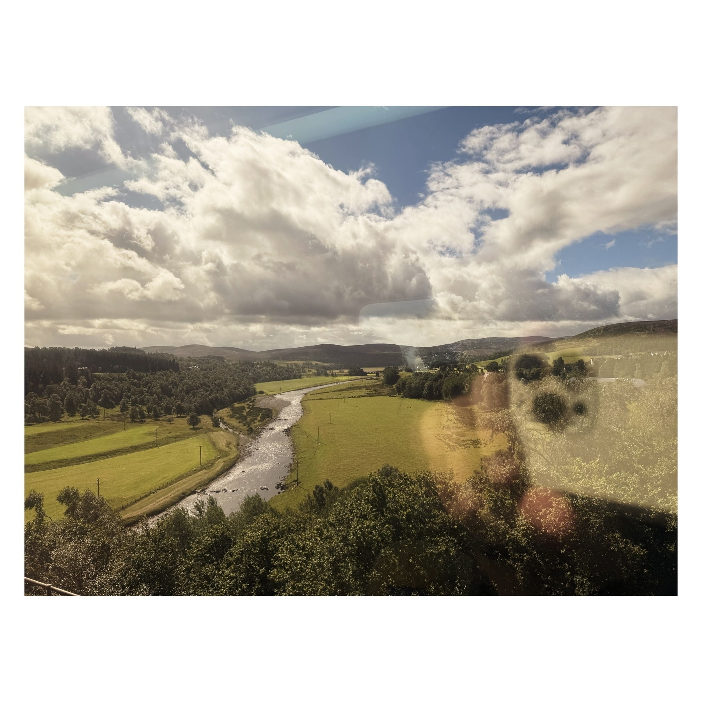
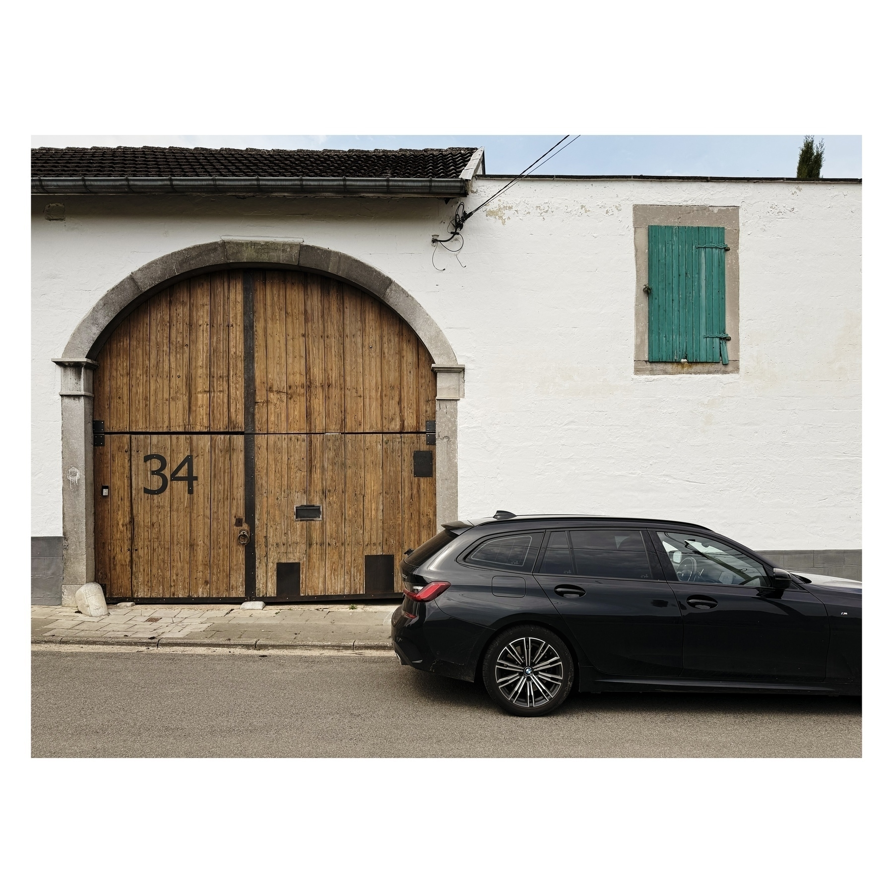
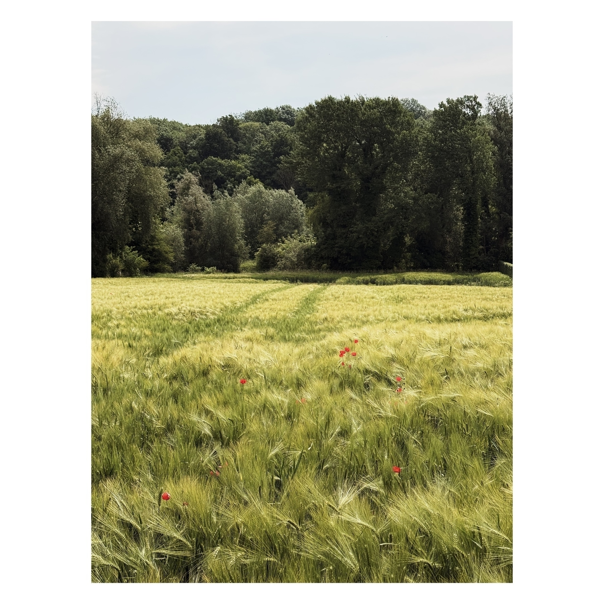
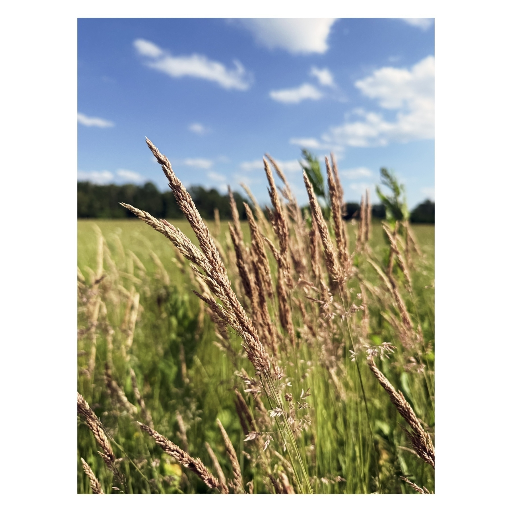

Laatste overzicht van vorig jaar, en dan kan ik eens nadenken over het voorbij leesjaar. Eerste buikgevoel is dat er weinig uitschieters zijn. Veel boeken die spontaan naar boven komen heb ik blijkbaar in 2024 gelezen. Nu goed, daar kan ik het komende weekend eens over nadenken.
Ik was al vergeten dat ik Intermezzo zo recent gelezen heb, Autumn had ik er tussen gepakt omdat het nog herfst was (ik begin binnenkort aan Winter), en het kriebelde om nog eens een graphic novel te lezen. Al bij al geen slechte maanden. En ja, ik heb mijn kerstboom nog niet opgeruimd, ook dat zal voor dit weekend zijn.
Scythe van Neal Shusterman
Intermezzo van Sally Rooney
â Autumn van Ali Smith
👌 Rejection van Tony Tulathimutte
Annihilation van Jeff Vandermeer
â Habibi van Craig Thompson
â Audition van Katie Kitamura
🤗 Salvation van Peter F. Hamilton
Tijd om nog eens een space opera te lezen. Hoewel we hier nauwelijks de ruimte in gaan. Dit eerste boek uit de Salvation Sequence is zeer hard ‘setting the scene’, maar wel entertained van begin tot einde.
“To wage war isn’t a purpose, it’s a threat reflex. We should be trying to think our way out of this mess.”
Het is 2204, dankzij portal technologie is de mens begonnen met de ruimte te verkennen. Er is een zekere vorm van vrede bereikt. Tot er op een nieuw ontdekte planeet een gecrashte ruimteschip gevonden wordt met mensen aan boord. Ontvoerde mensen? Er wordt een team specialisten bijeen geroepen om uit te zoeken wat er aan de hand is.
De sci-fi elementen zijn niet nieuw, dit is zeker geen baanbrekende sci-fi, maar de structuur en de opzet zijn wel entertained. Er wordt steeds tussen 3 standpunten gewisseld waardoor de mysterie tot het einde goed aanhoudt. We hebben het hier en nu, de elite team dat de crashsite onderzoekt. Verhalen uit het verleden van de team leden, wat ons laat zien wie ze zijn. En dan een mysterieuze toekomst waardoor we weten dat er op een bepaald moment een kantelpunt is in de geschiedenis.
Doordat er zoveel nadruk ligt op de flashbacks van dit elite team leest het in de eerste plaats als een reeks spannende spionage verhalen met science-fiction elementen, terwijl het mysterie zich in de achtergrond ontrafelt.
Vooraleer ik aan mijn jaaroverzicht start, eerst nog het overzicht van december. Het beste wat ik gezien heb is dit keer geen film, maar de miniserie “Dying for Sex” waarin Michelle Williams de terminaal zieke Molly speelt. Zeer veel emoties, maar vooral goed gelachen. Verder kan ik de nieuwe uit de Knives Out reeks, “Wake Up Dead Man”, aanraden, alsook de zeer sterke “One Battle After Another”. En ondanks dat iedereen de film kent, hoor ik van heel wat jonge millenials (of zijn het al Gen Z-ers?) rond mij dat ze nog nooit “Gremlins” gezien hebben. Maak daar eens werk van!
“Dying for Sex” (2025) ★★★★★ ❤️
Miniserie. Dit is hoe dan ook bij de beste dingen die ik dit jaar gezien heb. Absolute aanrader.
“Gremlins” (1984) ★★★★ ❤️
(rewatch) Movie night. Blijft een plezante film en houdt verrassend goed stand. De kinderen hebben enorm veel plezier gehad. We hebben goed gelachen met die ene scene in de bar. Yum yum.
“The Whale” (2022) ★★★½
Ik was hier initieel zeer enthousiast over, maar intussen is dat wat getemperd. Het blijft een knappe film met een sterke Brendan Fraser, maar misschien niet zó goed als de hype doet vermoeden.
“Thelma” (2024) ★★★
Charmante film, maar ook niet meer dan dat.
“Wake Up Dead Man” (2025) ★★★★
Ik vond dit wel een sterke film. De story telling was on point, maar ook de fotografie.. het zit allemaal zeer scherp en precies in elkaar.
“It Must Be Heaven” (2019) ★★★★
Een ietwat absurde film waarin de regisseur een observerende rol aanneemt en gelijkenissen trekt tussen Palestina en de rest van de wereld. Ge moogt niet te moe zijn, kwestie van uw aandacht er bij te houden, want er wordt bijzonder weinig in gezegd.
“The Running Man” (2025) ★★★
Prima actiefilm met net bovengemiddelde acteerprestaties. Ik kan mij de film met Schwarzenegger niet herinneren, dus kan ook niet vergelijken.
“Now You See Me: Now You Don’t” (2025) ★★★
Movie night. Deze was weer beter dan de tweede, en kijk, Antwerpen! Ik ben op zich wel fan van de cast, en de absurditeit van de heists is deel van de charme. Voor de kinderen de eerste uit de reeks, ze waren fan.
“Wicked: For Good” (2025) ★★½
Movie night. Behoorlijk teleurgesteld van deze. Ik vond de eerste zeer goed, deze vooral zwak en bij momenten gewoon saai. Het deed me helemaal niets.
“It Ends” (2025) ★★★½
High concept, existentiële horror. Niet voor iedereen.
“One Battle After Another” (2025) ★★★★½
Zeer zeer zeer goed. Ik zat op het puntje van de zetel. Een sterke DiCaprio, en ik had zelfs niet door dat Sean Penn zijn tegenspeler was. Strak camera werk.
“Love Actually” (2003) ★★★★ ❤️
(rewatch) Het was alweer een paar jaar geleden dat ik deze nog gezien had.
Ik had deze bijna niet gelezen, ik was aanvankelijk niet geïnteresseerd. Maar dan werd er regelmatig gesproken van een onbetrouwbare verteller en een echte mindfuck, zodat ik het toch niet kon weerstaan. Ik heb er geen moment spijt van.
“I knew that if I told this to Tomas, I would see the crease appear in his forehead, the crease that meant he was once again worried, that my way of being was causing him concern.”
Het verhaal bestaat uit twee delen. Tegen dat je je comfortabel begint te voelen in het verhaal schudt Kitamura de boel op waardoor in het tweede deel de zaken anders vallen. Twee verhalen die elkaar tegenspreken? Of misschien niet? Hoe zijn ze verbonden aan elkaar? Wat kunnen we geloven?
Ik ben een onbetrouwbare lezer, ik mis en vergeet gemakkelijk zaken, dus ik begon bij momenten aan mezelf te twijfelen, maar ook aan de mentale gezondheid van de verteller. Ik kreeg datzelfde benauwde gevoel dat de film “The Father†bij me opriep. Niet meer weten wat echt is. Een interessante leeservaring, en zo een ongelofelijk precieze, scherpe taal.
★★★★½
Middagloopje. Niet meer door de sneeuw, maar wel nog langs de sneeuw. Het was koud aan de tenen.
Er werden weer vrolijk boeken uitgedeeld met de feestdagen! Onder andere eentje om samen met de kinderen te lezen, en eentje om een nieuwe collectie te starten. 🫣
📚 ’Zilverling’ van Jessica Townsend
Het lezen met de kinderen is het voorbije jaar wat verwaterd. Ze worden ouder, allemaal niet meer evident om in te plannen, het is ook niet meer zo cool natuurlijk. Nu goed, we wachten al 2 jaar—wat zeg ik, al meer dan 4 jaar—op dit vierde deel in de Nevermoor reeks. Wie weet lukt het dit jaar wel om nog eens een boek samen te lezen.
📚 ‘What We Can Know’ van Ian McEwan
Eentje waar ik op zat te wachten. Ik heb nog niets slecht gelezen van Ian McEwan.
📚 ‘Things Become Other Things’ van Craig Mod
Een memoir over wandelen in Japan met mooie foto’s, what’s not to like!
📚 ‘Synners’ van Pat Cadigan
Ik had laten vallen dat ik fan ben van de Best of SF Masterworks reeks en dat ik die nog wel zou durven verzamelen. Die volgele edities met de mooie illustraties op de cover. De 2 hardcovers buiten beschouwing gelaten (die zijn rood) zijn er in totaal 19 boeken te verzamelen. Bij deze is mijn verzameling gestart! En euhm ja, ik ben ook benieuwd naar de verhalen (een deel heb ik al gelezen)!
Ik stel nog wel eens een eigen jaaroverzicht op, maar dat zal niet voor meteen zijn. Ondertussen kunnen we wel al eens de cijfers doornemen.
Sporten
Het jaaroverzicht van Strava was niet zo interessant dus ben ik in de Suunto app gaan kijken. 240 uur gesport, met een totaal afgelegde afstand van bijna 1700 km waarvan 1303 km gelopen, de rest was wandelen. Opvallend is dat ik het voorbije jaar niet op mijn fiets heb gezeten. Benieuwd of dat dit jaar wel zal gebeuren. Al bij al niet ontevreden gezien een geplande operatie in het begin van het jaar, inclusief wat sportvrije weken, en een blessure in september waardoor lopen enkele weken moeilijk was.
Kijken
Die laatste week van mei was precies een goeie filmweek. Alles samen 146 films (waarvan een handvol limited series) gekeken. Ik moet nog eens denken wat er echt uitsprong in 2025, maar dat komt nog. De samenvatting is op Letterboxd, net als het uitgebreide jaaroverzicht. Voor de nieuwsgierigen.
Lezen
Goodreads sluit altijd een paar dagen voor het einde van het jaar af, dan krijg je een vertekend beeld, want ik ben altijd nog iets aan het lezen. De teller staat uiteindelijk op 62 boeken, met dan 4 boeken in december. Het volledige overzicht vind je hier.
Winterloopje door de Mechelse Heide. Ik word daar toch altijd gelukkig van als ik zo door de sneeuw mag, en met zo een stralende zon!
Het gaat hier eventjes duren eer mijn eerste boek van het jaar uit is. 😅
Een paar jaar geleden las ik ‘Blankets’ van Craig Thompson, ik vond dat toen zo een mooi verhaal en prachtig getekend, dat het een kwestie van tijd was vooraleer ik nog iets van hem zou lezen. Al die tijd lag Habibi te lonken in elke boekenzaak, alleen al omwille van hoe het boek er uit ziet.
Opnieuw stelt Thompson niet teleur. De thema’s zijn wat zwaarder en meer controversieel. Slavernij, mensenhandel, mishandeling, religie, coping en overleven. We volgen Dodola en Zam, kindslaven op de vlucht die door toeval gebonden zijn aan elkaar. Samen navigeren ze de wereld en doen ze wat nodig is om te overleven.
“And yet the wind reshaped the dunes so that every morning we woke to a new landscape.”
Wederom prachtig getekend, al kan ik me inbeelden dat het omwille van de thema’s en de expliciete tekeningen niet voor iedereen zal zijn.
★★★★
De kop is er af. Eerste loopje van het jaar zit er op. Ik merk wel dat mijn conditie er wat op achteruit is gegaan. Eerste herstellen van blessure en dan algemeen gebrek aan goesting heeft er wat ingehakt.
Deze vakantie ontdekt dat de Kinepolis in Hasselt nu ook een IMAX zaal heeft. Sinds oktober blijkbaar. Het leek me ideaal om de zaal eens te testen met de nieuwste Avatar, maar voor zover ik zie kan dat enkel in IMAX 3D. Iets waar ik totaal niet in geïnteresseerd ben.
We zijn intussen al enkele dagen terug, maar om het jaar af te sluiten zijn we met ons twee een paar dagen gaan onthaasten in Volendam. We hadden ons aan heel wat toeristen verwacht, maar het was er super rustig. Doorheen de dag wat volk, maar ’s avonds was iedereen weer verdwenen.
We hebben gewandeld, kaas geproefd bij de kaasboer, de ferry genomen naar het eilandje Marken, nog meer gewandeld en gewoon genoten van elkaars gezelschap. De ideale plek om tot rust te komen. En ja, we hebben ook een foto laten maken in traditionele klederdracht, dat was inbegrepen in de overnachting.
Moest ge het gemist hebben, ik heb heel wat foto’s gedeeld van zonsondergang, zonsopgang, wandelingen, en water.
De wolken boven de zee waren dramatisch. Op de eerste foto zie je de dijk naar Marken als een streepje op de horizon oplichten.
Ik heb hoge verwachtingen voor 2026.
Gisteren met de ferry naar het eilandje Marken. Even tot aan aan de vuurtoren gewandeld en terug. Soms moet dat niet meer zijn.
Na de heerlijke zonsondergang bij aankomst, vertrekken we vandaag met een al even prachtige zonsopgang.
Toi toi wijsheden
Wandeling op den dijk. Onderweg goed geproefd bij de kaasboer.
Eendjes. Streepje zon. Beekje.
Haventje Volendam
Gisteren in Volendam, voor de zonsondergang echt begon.
Aangekomen in Volendam voor een paar daagjes rust, en zo een zonsondergang voorgeschoteld krijgen!
Vandaag geen foto van tijdens het lopen. Dan maar eentje van gisteren in De Teut.
Zolang de zon schijnt blijven we profiteren. Vandaag rondje gelopen in De Teut. Wie goed oplet ziet nog een verlaten stuk spoor.
Deze middag even gaan wandelen op het domein van Nieuwenhoven. Heerlijk wandelweer. ☀️
Woensdag nog een rondje gelopen voor we aan de feesttafel moesten aanschuiven.
Nog rap mijn november overzicht delen voor december alweer om is. “Sing Sing†is een toegankelijke film met een straf verhaal, deze kan ik iedereen aanraden. Voor de fans van Yorgos Lanthimos mag “Bugonia” zeker niet ontbreken. Maar het is “Detachment” waar ik nog regelmatig aan moet terug denken, mede dankzij de sterke Adrien Brody.
“Detachment” (2011) ★★★★
Intense film dat een aantal zware thema’s over jongeren op de grens van armoede en verwaarlosing verkent. Netflix heeft recent “Steve†uitgebracht, wat op het eerste zicht zeer gelijkaardig is.
“The Roses” (2025) ★★★
Prima film, heeft een paar goeie momenten, maar verder weinig bijzonder. Ben ik over een paar weken vergeten. Wel steeds fijn om Olivia Colman bezig te zien.
“Barbie” (2023) ★★★★ ❤️
(rewatch) Movie night. Iets minder impactvol dan de eerste keer, maar blijft goed. Ik vermoed dat ik hier altijd een speciaal plekje voor zal hebben.
“The Virgin Suicides” (1999) ★★★★ ❤️
(rewatch) Mijn liefste had deze nog niet gezien, daar moest verandering in gebracht worden. Komt toch anders binnen, zo meer dan 20 jaar later.
“Good Fortune” (2025) ★½
Ik was zelfs al vergeten dat ik deze film gezien had, hier zit nu eens helemaal niets in. Het is te zeggen, ze proberen iets te zeggen, maar het valt plat op zijn gezicht.
“A Complete Unknown” (2024) ★★★
Hier had ik zoveel meer van verwacht, het voelde allemaal wat plattekes aan en er kwam veel niet tot zijn recht. Bij nader inzien trek ik misschien beter nog een halve ster af.
“The Family Plan 2” (2025) ★½
Movie night. De kinderen vonden het leuk. Zeer voorspelbaar, en ondermaats.
“Bugonia” (2025) ★★★★
Jesse Plemons is weer schitterend. Niemand kan creepy zo goed doen als hij.
“Sing Sing” (2023) ★★★★
Straf verhaal dat bijna foutloos is uitgevoerd. Wat het nog straffer maakt zijn al de mensen die zichzelf spelen.
Ik had hier veel goesting in en wou dit echt goed vinden, maar ik bleef wat op mijn honger zitten. Misschien dat mijn verwachting te veel geleid werden door de verfilming, maar ik vond het te veel vibes en niet genoeg houvast.
“I now hid not one but two secrets, and that meant I was steadily, irrevocably, becoming estranged from the expedition and its purpose.”
Annihilation is een zeer atmosferisch verhaal dat plaats vindt in een mysterieuze gebied. We zijn volledig afhankelijk van de onbetrouwbare verteller. En hoewel ik zeker nieuwsgierig ben om meer te weten te komen over de mysterieuze Area X, gebeurde er voor mij te weinig om mij vast te houden.
“It had been explained that we would need to cross the border with precautions to protect against our minds tricking us. Apparently hallucinations were common.”
Spijtig, want ik ben hier aan begonnen met het idee om de volledige reeks te lezen. Het is dankzij de verfilming dat ik meer van deze wereld wou weten. Maar het zal voorlopig bij deze ene blijven.
“His sadness, he knows, is a symptom of his entitlement, so he is not even entitled to his sadness.”
Wel dit gaat hard. ‘Rejection’ is een reeks verhalen rond een aantal losjes aan elkaar gelinkte personages die worstelen met afgewezen worden. Een scherpe satirische blik op het moderne leven, relaties, en identiteit.
“Despite where they’d left off, she’s pathetically happy to hear from him, though also mad at herself for feeling forgiven when she knows she’s done nothing wrong.”
“It takes Kant a year to write the one-paragraph mass email, another three weeks to compile the mailing list of friends, family, and colleagues, and three bourbons to send it.”
De leefwereld van de personages is zeer online, wat het erg tijdsgebonden, en misschien ook leeftijdsgebonden maakt. Een aanrader, maar mogelijks niet voor iedereen.
Ik had nog een cadeaubon op te maken, goeie vrienden die weten waar ze mij een plezier mee kunnen doen. Ik heb van de gelegenheid gebruikt gemaakt om een aantal boeken die al langer op mijn lijstje staan te bestellen, in plaats van (enkel) voor het nieuwste te kiezen. Ik ben zeer tevreden met de nieuwe aanwinsten.
📚 ‘Summer Fishing in Lapland’ van Juhani Karila
Dit klinkt zo enorm plezant, het is niet het eerstvolgende dat ik ga lezen, maar zal toch snel aan de beurt zijn.
📚 ‘Withered Hill’ van David Barnett
Horror boeken kom ik hier niet snel tegen, of het moet van Stephen King zijn. Deze stond op enkele lijstjes en sprak me wel aan. Wat mysterie met een horror element.
📚 ‘Rejection’ van Tony Tulathemutte
Een reeks verhalen over afgewezen worden in onze huidige (zeer online) maatschappij. Deze is intussen al uitgelezen, en die gaat hard. Lijkt me wel een love it or hate it boek.
📚 ‘Audition’ van Katie Kitamura
Een boek dat omschreven wordt als een mind fuck. Onbetrouwbare verteller aan het woord. Shortlisted voor de Booker Prize. Ook deze zal snel aan de beurt zijn.
📚 ‘Jonathan Strange & Mr Norrell’ van Susanna Clarke
Deze staat al heel lang hoog op mijn lijstje, zeker na het lezen van de voortreffelijke ‘Piranesi’. Ik ben er gewoon nog niet aan durven beginnen, maar nu ligt hij klaar om er dit weekend in te starten. Met zijn meer dan 1000 bladzijden wordt dit wellicht ook het laatste dat ik dit jaar zal lezen.
📚 ‘Drive Your Plow Over the Bones of the Dead’ van Olga Tokarczuk
Deze heb ik relatief recent ontdekt, ik vond de titel zo captiverend dat ik zelfs niet heb stilgestaan bij de inhoud en hem meteen op mijn lijstje heb gezet.
Ik heb nog vouchers voor de Kinepolis die tot en met vandaag geldig zijn. Ik wil die gebruiken om tickets te boeken voor een voorstelling van volgende week dinsdag. Dat gaat niet. Want de voorstelling is na de vervaldatum van de voucher. Ik begrijp de logica, maar ik heb een aankoopbon die vandaag nog geldig is, daarbij zijn tickets niet inwisselbaar, dus wat maakt het uit dat de voorstelling in de toekomst is. Behoorlijk user hostile.
Amaai. The Last of Us Part II was een behoorlijk intens spel.
“The Fantastic 4: First Steps” (2025) ★★★
Ik had hogere verwachtingen. Visueel plezant met de retro-futuristische stijl, maar een zeer gemiddeld verhaal. Ik ben ook niet overtuigd van de dynamiek van de verschillende personages.
“Caught Stealing” (2025) ★★★½ ❤️
Plezant, chaotisch, blijft verrassen (nu, ik ben ook wel makkelijk te verrassen).
“Guardians of the Galaxy” (2014) ★★★★ ❤️
(rewatch) Ik zat op een TGV, en dit zat in hun streaming aanbod. Blijft een van de betere Marvel films.
“Mean Girls” (2024) ★★
De kinderen zaten hier naar te kijken, ik heb me bij hen in de zetel gezet en met een half oog mee gevolgd. Ik zou het niet meteen aanraden.
“Better Man” (2024) ★★★★½ ❤️
Een van de beste films die ik dit jaar gezien heb. Ik heb niets voor of tegen Robbie Williams, maar dit was een knaller. Zit enorm sterk in elkaar, met aan aantal top scenes.
“Gladiator II” (2024) ★★★
Zeer veilig en voorspelbaar script. Mist heel wat charisma en overtuiging van het origineel. Mescal zou de film moeten dragen, maar wordt overklast door Denzel Washington.
“Return of the Jedi” (1983) ★★★½
(rewatch) Movie night met de kinderen. We zijn eindelijk door de originele trilogie. Plezante avonturen film, maar haal voor mij niet het niveau van de twee anderen.
“Game Night” (2018) ★★★★ ❤️
(rewatch) Movie night. Ondanks dat ik deze al eens gezien had bleef het een plezante chaotisch film met onverwachte wendingen. En een zeer creepy Jesse Plemons.
“The Long Walk” (2025) ★★★
Niet slecht. Mist de intensiteit van het boek. Zitten een aantal acteurs met potentieel in. Benieuwd of we ze nog gaan terug zien.
Ik weet niet meer wie mij geïnspireerd heeft, maar ik zag een paar weken terug iemand dit boek lezen en dacht, ideaal moment om aan het seizoens kwartet van Ali Smith te beginnen.
“We have to hope, Daniel was saying, that the people who love us and who know us a little bit will in the end have seen us truly. In the end, not much else matters.”
Ik weet niet goed wat ik hier over moet schrijven, een klein vlot boekje waar veel in zit. Het is speels, ontroerend, soms grappig. Staat vol met mooie passages. Absolute aanrader.
“See how it’s deep in our animal nature, Daniel said. Not to see what’s happening right in front of our eyes.”
Nu moet ik enkel nog zien dat ik tegen de winter het volgende boek uit de reeks in huis heb.
★★★★½
Thuis van een Sint brunch. Ik heb weer genoeg gegeten voor de komende dagen. 😵
Eentje van mijn middag loopje van gisteren.
Nog gauw een rondje door de velden voor het licht op is.
Sally Rooney schrijft over twee broers die weinig gemeen hebben. Twee broers in rauw na de dood van hun vader, en die, nu hun vader er niet meer is, nog verder van elkaar af lijken.
“Like, I am with her, but we’re not. Relationship mutilated by circumstance into something illegible. Platonic life partnership. Living separately of course.”
Dat Sally Rooney complexe relaties kan schrijven weten we al. We zien Peter en Ivan rondjes draaien in hun eigen hoofd, op zoek naar hoe ze verder moeten met zichzelf, elkaar en in hun romantisch leven. Twee mannen slecht in communiceren en die nooit geleerd hebben zich emotioneel op te stellen.
“I don’t want you to be grateful, he says. I just want you to be happy.”
Ik heb dit graag gelezen, er staan tal van mooie passages in, en het was interessant om de personages te zien ontwikkelen (of niet), maar het deed me ook weinig.
’Scythe’, het eerste deel uit de reeks ‘Arc of a Scythe’. Een wereld zonder honger, ziekte, miserie. Ook de dood is door de mens overwonnen. Om de bevolking op peil te houden zijn er Scythes, de enigen die mensen permanent kunnen doden. De tieners Citra en Rowan worden uitgekozen om in de leer te gaan bij een vooraanstaande Scythe, en de kunst van het moorden te leren.
“Everyone is guilty of something, and everyone still harbors a memory of childhood innocence, no matter how many layers of life wrap around it.”
Een eenvoudige premise. Ik was zelf vooral geïntrigeerd hoe zo een wereld er zou uitzien. Dit eerste boek leest ook als een introductie in die wereld, al zijn de belangrijkste regels vlot uitgelegd en is het halfweg vrij duidelijk welke richting het verhaal uit gaat waardoor het geheel wat aan animo verliest. Gelukkig pikt het tempo naar het eind toe terug op en gaan we ook buiten de leefwereld van de tieners waardoor we een glimp krijgen van de uitgebreide wereld die Shusterman bedacht heeft.
“Therein lies the paradox of the profession,†Faraday said. “Those who wish to have the job should not have it… and those who would most refuse to kill are the only ones who should.”
Buiten het dipje in het midden heb ik dit graag gelezen. Ik verwacht mij aan nog heel wat intriges, conflict en verraad in de volgende delen.
★★★½
Ik had nog een Lego cadeaubon op te maken. Ideaal excuus om een eigen vloot aan te leggen.
Tijd om nog eens een overzicht te maken, het is van juli geleden. De zomerlectuur van augustus is wat je er van kan verwachten. In september heb ik weinig gelezen, maar ik moet soms nog aan ‘Small Rain’ denken. Oktober heeft een aantal toppers met ‘Daisy Jones & the Six’ als algemene aanrader voor een breed publiek.
‘Sunshine on the Reaping’ - Suzanne Colins
‘Origin’ - Dan Brown
🤗 ‘The Sentence is Death’ - Anthony Horowitz
‘What You Are Looking For Is In The Library’ - Michiko Aoyama
ğŸ˜â ‘Small Rain’ - Garth Greenwell
👌 ‘Under the Skin’ - Michel Faber
‘Het Archief’ - Thomas Heerma van Voss
👌 ‘Red Side Story’ - Jasper Fforde
ğŸ˜â ‘The Virgin Suicides’ - Jeffrey Eugenides
🤗â ‘Daisy Jones & the Six’ - Taylor Jenkins Reid
👌 ‘The Sailor Who Fell from Grace With the Sea’ - Yukio Mishima
Het ziet er naar uit dat morgen op een deftig uur met de trein in Antwerpen raken een uitdaging wordt. Terug keren zou geen probleem zijn, alle reguliere treinen rijden dan wel. 🤔
Heerlijk wandelweer vandaag. Deze middag even in Kattevennen gaan wandelen.
Aan de oppervlakte lijkt dit een verhaal van een rebelse tiener die zich verzet tegen de intrede van een nieuw vaderfiguur in zijn leven. Een jongen die zich laat beïnvloeden door een groepje stoerdoenerij. Maar het gaat toch wat dieper dan dat, en neemt uiteindelijk een donkere, gruwelijke wending.
“his only memories of life on shore were of poverty and sickness and death, of endless devastation; by becoming a sailor, he had detached himself from the land forever…â€
Als je dan ook nog wat achtergrond informatie opzoekt over Yukio Mishima, over zijn visie op het leven, zijn houding ten opzichte van het Westen, kapitalisme en de veranderende wereld, en hoe hij rituele zelfmoord pleegde, … dat geeft het allemaal toch een andere betekenis.
“As it neared the sea, the landscape appeared to fold in on itself and assumed a special quality of rust, and sadness, and clutter. Beyond a tangle of rusted machinery discarded on the beach, a vermilion crane swung in wobbly arcs, and beyond the crane, there was the sea, the piled white of stone breakwaters and, at the edge of the reclaimed foreshore, a green dredger smoking blackly.”
Alleszins zeer mooi geschreven, vooral de momenten tussen Ryuji (de moeder) en Fusako (de nieuwe man) zijn zowat de meest romantische stukjes die ik dit jaar al gelezen heb. Een dun boekje dat door de bedachtzame, bijna lyrische taal net iets trager leest.
★★★★
Jarenlang ga ik periodiek kijken op de Gateworld fansite of er nieuws is over een nieuwe Stargate serie. En eindelijk is het zover, er komt een nieuwe reeks! Dat is mijn Star Trek. Zeer zeer excited!
Ik begin alvast aan een rewatch van SG-1.
Dan toch maar de telefoon eens geupdate naar iOS 26.
Eindelijk The Last of Us Part II begonnen, de game, niet seizoen 2. Direct een mooie intro.
Over de film “The Virgin Suicides†gesproken, om de 25e verjaardag van de film te vieren is er ook een fotoboek uitgebracht met set foto’s gemaakt door de modefotograaf Corinne Day. De set foto’s benadrukken enkel de schoonheid van de fotografie in de film zelf. Wat ik ook opvallend vind is hoe de foto’s mij het gevoel geven dat ik naar een familie album zit te kijken. De 5 actrices komen in de beelden zo naturel over dat je er niet aan twijfelt dat ze al heel hun leven samen door brengen.
‘The Virgin Suicides’ had destijds, 25 jaar geleden, als film behoorlijk indruk gemaakt op mij. Ik had al een grote liefde voor film, maar ik was volop aan het ontdekken dat cinema meer kon zijn dan de doorsnee blockbuster. Wat ik toen niet wist is dat de film gebaseerd was op een boek.
“Most of our parents attended the funeral, leaving us home to protect us from the contamination of tragedy.”
Het boek, prachtig geschreven overigens, met een zeer rijke taal, heb ik intussen enkele weken geleden uitgelezen. Om op te frissen heb ik gisteren de film ook herbekeken, en die verdient nog steeds een speciaal plekje in mijn persoonlijke film geschiedenis.
“The Lisbon girls, stranded in separate homerooms, declined to play, or kept asking to be excused to go to the bathroom. None of the teachers insisted on their participating, with the result that all the healing was done by those of us without wounds.”
Wat mij opviel bij het lezen is dat ik steeds het gevoel had dat die zaken ook op die manier aan bod waren gekomen in de film, maar bij het herbekijken gisteren bleek dat een aantal themas eerder summier en subtiel aanwezig waren. Wat een verdienste if van Sofia Coppola, want wat ik gelezen heb is wat ik destijds uit de film heb gehaald, en meer.
★★★★★
Beeldje van Antwerpen, gisteren voor ik richting station ging.
Nog een aantal aanwinsten van ergens eind augustus. En zo weet je meteen hoe lang het geleden is dat ik een boekenwinkel ben binnen geweest. En dat ondanks dat ik hier al sinds begin september een dikke cadeaubon heb liggen die ik voor mijn verjaardag kreeg. Nu goed, aan boeken geen gebrek hier in de kast.
📚 ‘Een Zonnige Plek voor Sombere Mensen’ van Mariana Enriquez
We hadden hier genoten van de vorige bundel ‘De gevaren van roken in bed’, ik heb die voorgelezen, dat we deze ook wouden lezen. Nu het weer vroeger donker is is dit ideaal om ’s avonds af en toe een verhaaltje uit te lezen.
📚 ‘Ik die nooit een man heb gekend’ van Jacqueline Harpman
Eentje van de hype trein, maar dan met genoeg mensen die ik vertrouw die het aanraden. En van een Franstalig Belgische auteur, vandaar dat ik voor de Nederlandstalige vertaling ben gegaan. Maar ik heb toch een beetje spijt, want de Engelstalige edities zijn zoveel mooier, zeker die meest recente hardcover.
📚 ‘The Heaven & Earth Grocery Store’ van James McBride
Dit stond al langer op mijn lijst, maar ik was op de paperback aan het wachten. Geen idee wat te verwachten, maar toch hoge verwachtingen. Staat alleszins hoog genoeg op het lijstje om dit jaar nog uit te lezen.
(Ik heb intussen wel een bestelling geplaatst, en ik kreeg net een mailtje dat de boeken zijn aangekomen, dus ik weet wat doen dit weekend.)
Ik ga hier de citaten laten spreken over de sfeer van ‘Daisy Jones & The Six’. Zij die de film “Almost Famous†gezien hebben weten ook meteen wat te verwachten.
“Of course, I couldn’t order just coffee because I’d be too amped from the pills I was taking. And I couldn’t just have the champagne because it would put me to sleep. You understand the problem. So I used to order champagne and coffee together. And at the places where servers knew me, I used to call it an Up and Down. Something to keep me up, something to keep me down.”
Taylor Jenkins Reid schets een portret van de fictieve band Daisy Jones & The Six die eind jaren zestig naar de top schieten. En dat is full on drugs, sex and rock & roll. Het gebruik van de interviews geeft het een interessante vorm, en geeft de verschillende personages een iets meer uitgesproken, en kleurrijke, stem.
Ik was zeer entertaint, van begin tot einde.
“I had absolutely no interest in being somebody else’s muse.
I am not a muse.
I am the somebody.
End of fucking story.”
★★★★
Dat zondag gevoel. Maar dan weten dat ik morgen niet vroeger op moet om de trein te halen, want het is morgen geen kantoor dag. 😌
Deze voormiddag rondje gelopen en wat opgeladen in de zon. ☀️
Een traumatische golfelleboog.
Toen ik een paar weken geleden op mijn wandeling gevallen ben heb ik niet enkel mijn wandelstok gebroken, maar ben ik ook stevig op mijn elleboog gevallen. Het voelde wat gekeusd, gelijk een blauwe plek, maar het bleef wat zeuren en trekken dus heb ik deze week toch maar foto’s en een scan laten doen.
Niets gebroken! Maar dus wel een scheur in mijn flexor pees. 6-tal weken rust en geen druk op mijn arm zou voldoende moeten zijn.
Ik zal maar niet zeggen dat intussen 2 wasmachines en 2 droogkasten heb versleept, en een storage box vol zware dozen heb leeg gemaakt. 🫣
Een boek waar ik ruim 12 jaar op gewacht heb! Dit is het vervolg op ‘Shades of Grey’, wat ik in 2012 gelezen heb. Ik herinner me nog hoe enthousiast ik was en dat ik meteen op zoek ging naar het tweede deel om dan teleurgesteld te worden dat het nog niet bestond. Een derde boek is ook al aangekondigd, ik ben benieuwd of we dit keer minder lang moeten wachten.
“My name is Eddie Russett, but only for another two hours and nine minutes.”
We bevinden ons in Chromatacia. 500 jaar geleden is er “iets gebeurd†en nu leven de mensen in een maatschappij met een hiërarchie gebaseerd op de kleuren die je kan zien. ‘Red Side Story’ sluit meteen aan op het eerste boek en volgt Eddie Russett die, omwille van zijn uitstekend rood zicht, een gedwongen huwelijk aangaat met de invloedrijke familie DeMauve. Hij en Jane Grey, met wie hij een illegale relatie heeft, staan op het punt berecht te worden voor een moord dat ze niet gedaan hebben. Samen navigeren ze tussen de regels van de maatschappij door in een poging te overleven.
“‘You are very equitable with your disgust’, I said. ‘You seem to hate all colours, of whatever shade, in equal measure.’”
Ik was zo content dat ik hier eindelijk aan kon beginnen dat ik er recht ingedoken ben. Achteraf gezien had ik misschien beter het eerste deel herlezen, want 12 jaar is toch lang. Los daarvan heb ik me goed geamuseerd, het duurde wat langer om opnieuw in de wereld te raken, maar er wordt genoeg uitgelegd hoe de wereld werkt zodat het nooit moeilijk is om te volgen. Fforde blijft toch een favoriet als het aankomt op absurditeit en gevatte Britse humor, opnieuw stelt hij niet teleur.
“Why would you want to know? Things don’t have to have a reason or explanation - isn’t life vexing enough without mysteries and unknowns to divert us from happiness?”
Van de eerste bladzijde worden we in de actie gegooid en het stopt niet tot het einde. Bij sommige elementen kreeg ik wel het gevoel dat ze 12 jaar geleden niet zo beoogd waren, het verhaal neemt ook een stevige wending naar het einde toe. Met cliffhanger, dus dat derde deel kan maar beter komen. Alleszins, voor mij, pure fun.
Ik wist niet veel over dit verhaal voor ik er aan begon, enkel dat het om een vrouw gaat die lifters meeneemt. Isserley rijdt ganse dagen het platteland van Schotland af op zoek naar liftende mannen. En eigenlijk is het best dat je niet meer dan dit weet.
“Shared suffering, she’d found, was no guarantee of intimacy.”
Dit is een van de meest verzorgde en geduldigste ontplooiingen van een plot dat ik al gelezen heb, ik was in de ban van elke bladzijde. Ik vond het een heerlijke leeservaring voor wat onderliggend onaangename en pijnlijke thema’s zijn. Het legt een aantal horrors van onze mensheid bloot en zet aan tot denken. Eentje dat ik niet snel zal vergeten.
“I sometimes think that the only things really worth talking about are the things people absolutely refuse to discuss.”
Ik mijn queeste om dit jaar meer Nederlandstalige auteurs te lezen heb ik met ‘Het Archief’ van Thomas Heerma van Voss een foute keuze gemaakt. Als het niet zo een dun boekje was had ik het aan de kant gelegd.
“Mensen, ja, die konden zomaar verdwijnen, zonder dat iemand het zag aankomen of kon verklaren, maar spullen en woorden bleven bestaan.”
Op zich is het mooi geschreven, ik was de eerste bladzijden ook helemaal mee. Maar ondanks de relatief weinige bladzijden leek dat eerst deel een eeuwigheid te duren. Niet voor mij dus. Wat jammer is, want ik vond het slot wel mooi, alleen onvoldoende om op te wegen tegen de rest.
“De intimiteit die in het dagelijks leven achterwege bleef haalde hij in via nachtelijke e-mails.”
★★
Na twee weken rondwandelen met pijn, en ongemak lijkt het ergste er door te zijn met mijn voet. Deze middag nog eens een comfortabel rondje kunnen lopen. Er is nog wat stramheid, en ik mis nog wat mobiliteit, maar ik heb eindelijk het gevoel dat ik terug kan opbouwen.
September was een vrij gemiddelde filmmaand. Een aantal leuke films gezien maar buiten “Weapons” geen echte uitschieters. “The Naked Gun” kan ik nog aanraden omwille van de pure fun en nostalgie, en dan eventueel “The Life of Chuck”, er zitten toch een aantal sterke scenes in.
“The Thursday Murder Club” (2025) ★★★
Compleet onnodige film met een topcast. Zeer Brits, een erg verzorgde film, plezanter dan het boek. Volledig gedragen door de cast.
“Nobody 2” (2025) ★★★½
Nog een onnodige film. De eerste was plezant, deze ook. Gemakkelijk verteerbare actie film.
“The Garden of Words” (2013) ★★★½
Prachtige animatie, verder een mooi maar simpel verhaal.
“Black Mirror: Bête Noire” (2025) ★★★½
Vond dit wel goed uitgevoerd. Bij momenten zeer frustrerend om naar te kijken omdat je als kijker heel goed ziet wat er gaande is.
“Honey Don’t!” (2025) ★★½
Margaret Qualley en Aubrey Plaza waren sexy. Voor de rest kan ik me weinig herinneren van de film.
“The Life of Chuck” (2024) ★★★★
Mark Hamill steelt de show. Einde is wat plattekes, maar verder zeer mooie film. Alleen al te kijken voor de drum en dans scene.
“Freaky Tales” (2024) ★★★★
Ik had even nodig om er in te komen, maar het wordt beter en beter naar het einde toe.
“Black Mirror: Plaything” (2025) ★★★
Ik ben doorgaans fan van Peter Capaldi maar ik vond hem hier iets minder. Of het lag aan het wat slapper verhaal.
“Black Mirror: Eulogy” (2025) ★★★★
Dit ging recht naar mijn hart. Ik kan mij ook niemand beter inbeelden dan Paul Giamatti om deze rol te vertolken.
“Under the Skin” (2013) ★★½
Ik had net het boek gelezen (wat ik zeer goed vond), misschien had ik dan zo snel de film niet mogen zien, maar nee, wat een saaie boel.
“It was the loveliest feeling, to buy books and feel like it was an act of virtue, books I would almost certainly never read, some of them, most of them maybe, but that gave me pleasure just sitting in their piles. They gave a sense of abundance in those months when so much seemed bare.”
Dit boek kwam op verschillende niveaus binnen. “Small Rain†vertelt het verhaal van een poëet die met een medische crisis in het ziekenhuis belandt. Daarbovenop gebeurt dit midden in de pandemie. Wat volgt is een kwetsbare en zeer menselijke relaas over het leven, en de onzekerheden die gepaard gaan met plotse, levensbedreigende ziekte.
“I was healthy and still thought of myself as young, young-ish; I thought of myself as lucky is what I mean, I guess, though really I didn’t think of my health much at all, which was the luck, the privilege of health.”
Dat ziek zijn hakt echt in een mens, het is initieel iets dat je ondergaat, het gebeurt gewoon. Pas eens je terug thuis bent komt het besef binnen. En dan het herstel, zowel fysiek als mentaal. Terug in jezelf geloven en uw lichaam opnieuw leren vertrouwen. Die continue angst dat je hervalt en dat heel de circus opnieuw begint. Het aanvaarden dat je dit voor de rest van je leven meedraagt.
“She helped me up, and I needed help, there was nothing to hold on to but her; I had become someone who needed help to stand up.”
Ik heb daar zelf gelegen, intussen bijna 10 jaar geleden. Een lichaam dat mij in de steek liet. En mijn liefste in de pandemie, en kort daarna opnieuw. Ik heb aan beide kanten gestaan, als patient en als geliefde van. Om maar te zeggen dat het allemaal zeer herkenbaar aanvoelde, en bij momenten zeer dichtbij kwam.
Ik lees wel eens graag een boek over boeken, en de impact van die boeken op mensen. Met een titel als “What You Are Looking For is in the Library†kan je haast niet missen, zou je denken. Het boek wordt vergeleken met “Before the Coffee Gets Cold”, maar hier miste ik toch de charme dat “Before the Coffee Gets Cold†in zich draagt.
“How r u doing?
With my finger poised above the screen, I tap b and brilliant pops up in the auto-predict, so I just select it and tap send.
What I really meant to say, though, was bored.”
Het probleem met een anthologie van niet echt samenhangende verhalen is dat je maar een paar zinnen of paragrafen hebt om interessante personages neer te zetten. En hoewel het niet slecht geschreven is kon geen enkel verhaal mij raken. Het is allemaal zeer gewoontjes, de taal is niet bijzonder, de verhalen zijn wat voor de hand liggend, niet verkeerd, maar ook niet echt boeiend. Spijtig.
★★
Met het wegvallen van de meerrittenkaart is mijn treinpendel, die paar keer dat ik naar Antwerpen ga, 40% duurder geworden. Met de Train+ kaart krijg ik de volle 30 cent korting. 👌
Het tweede deel uit de Hawthorne & Horowitz reeks. Dit keer wordt een prominente echtscheidingsadvocaat vermoord terug gevonden. Doodgeknuppeld met een fles wijn ter waarde van £3000.
“She moved quickly, aggressively, like a wrestler entering an arena. If I were a criminal, I’d be afraid of her. I hadn’t done anything wrong but she still made me nervous.”
Blijft plezant om te lezen, beetje meta om jezelf zo in uw verhalen te schrijven, maar ik mag het wel. Hawthorne blijft voorlopig nog een mysterieuze figuur, al krijg zijn licht asociaal en arrogant karakter een iets lichter kantje. Ik lees zeker nog door in deze reeks.
Een nieuwe “Superman†waar ik enorm van genoten heb, ik was zo enthousiast dat ik hem zelfs meteen opnieuw heb gekeken met de kinderen. We zijn ook met z’n allen naar de openlucht voorstelling van “Jaws” gaan kijken, blijft een klassieker. Daarnaast het pareltje “Perfect Days†gekeken, zeer hartelijk film.
Tot slot kan ik nog “The Royal Hotel” en “The Surfer” aanraden voor als het iets spannender mag zijn.
“No Time to Die” (2021) ★★★
Spijtig van Rami Malek, ik zie die man toch niet graag bezig. En een geheel oninteressante villain voor Bond.
“Central Intelligence” (2016) ★★½
Exact wat ge kunt verwachten van een The Rock en Kevin Hart actie komediee.
“Predator: Killer of Killers” (2025) ★★★½
Een reeks geanimeerde kortverhalen in de wereld van Predator. Mooie om naar te kijken, zat goed ineen, en kwam perfect samen op het einde. Ik zou hier meer van kunnen zien.
“Mission: Impossible – The Final Reckoning” (2025) ★★★
Veel te lang voor wat het is, flauwe humor en dialoog, veel herhaling en geforceerde eerbetoon aan de franchise (en vooral Tom Cruise). Ik had nul interesse in de pogingen om er een emotioneel afscheid van te maken, maar kon toch genieten van de stukken die het een goede actiefilm maken.
“Superman” (2025) ★★★★½
Alles wat ik van een Superman film verwacht, hoopvol, menselijk, kleurrijk, vleugje humor, niet te serieus. Enorm enorm van genoten!
“The Phoenician Scheme” (2025) ★★★
Ik denk dat ik te moe was om deze te appreciëren. Het zei me allemaal niet veel. Misschien in de toekomst eens opnieuw kijken.
“The Royal Hotel” (2023) ★★★½
Intens. Hannah moet een betere vriendin zoeken.
“The Surfer” (2024) ★★★½
Nog een intense film. Nicolas Cage blijft een topper.
“Perfect Days” (2023) ★★★★½
Klein pareltje.
“Jaws” (1975) ★★★★½
Movie night met de kinderen, in open lucht! Blijft een klassieker. Eerste keer ook voor de kinderen. We hebben er allemaal van genoten.
“Role Play” (2023) ★★
Flauw. Ideaal om op de achtergrond op te zetten terwijl ge met iets anders bezig zijt.
“Superman” (2025) ★★★★½
Movie night. Nog eens, zo goed vind ik hem, dit keer met de kinderen.
“Grease” (1978) ★★★½
Movie night met de kinderen. Heel wat jaren geleden dat ik deze gezien heb. Veel nostalgie. De kinderen waren niet super onder de indruk.
“Jurassic World Rebirth” (2025) ★★½
Degelijk en zeer bekijkbaar tot de introductie van de laatste big bad mutant. Deze zag er gewoon belachelijk uit. Ik heb het wel gehad met de mutant dinos.
Ik wou mijn film overzicht voor september maken en kwam tot de vaststelling dat ik zowel juli als augustus helemaal over het hoofd heb gezien. Bij deze alvast juli. Weinig bijzonder gezien deze maand. Alhoewel, toch plezier gehad met “Final Destination Bloodlines†(2025) en “Thunderbolts*†(2025). Wat ik wel kan aanraden is de beklijvende “Reality†(2023).
“The Old Guard 2†(2025) ★★
Ik kon mij niet meer herinneren waar de eerste film over ging. Ik vermoed dat ik deze even snel zal vergeten.
“Ballerina†(2025) ★★★
John Wick it is not. Had eigenlijk half uurtje korter gemoeten. Verder is het exact wat ge zou verwachten. Nog steeds degelijke fun actie.
“Final Destination Bloodlines†(2025) ★★★
Toch goed gelachen. They understood the assignment gelijk de jonge mensen zeggen. (Wel opvallend ondermaatse acteerprestaties)
“Palo Alto†(2013) ★★½
Ik krijg het hier noch warm, noch koud van. Hoewel de film in zijn opzet slaagt om een reeks zeer onsympathieke personages te portretteren, blijft het vrij oppervlakkig waardoor mijn aandacht al eens doolde.
“Thunderbolts*†(2025) ★★★½
Eindelijk nog eens een degelijke en amusante Marvel film.
“Dexter: New Blood†(2021) ★★★½
Miniserie. Ik heb dit altijd genegeerd omdat ik zo fan ben van de originele reeks. Maar dan zag ik een trailer passeren voor de nieuwe “Dexter: Resurrection”, wat er zeer de moeite uitziet, dus werd het tijd om dit te kijken en up to speed te raken. Was beter dan ik verwacht had, misschien omdat ik het lang genoeg heb laten liggen.
“Reality†(2023) ★★★★
Vond dit wel een unieke film gedragen door een zeer sterke Sweeney. Bij momenten zeer intens en beklijvend, vooral de eerste 20-30 minuten.
“Mountainhead†(2025) ★★
Dit had grappig moeten zijn, satire ofzo, maar valt recht op zijn gezicht.
“Novocaine†(2025) ★★½
Ik ben op zich wel fan van Jack Quaid, alleen opletten dat hij niet te veel getypecast wordt of het begint te vervelen. Net als deze film. Er zitten interessante ideeën in, maar heb het gevoel dat ze er meer mee kunnen doen in een film dat een half uur korter is.
Ik heb destijds, met de hype van de verfilming, ‘The De Vinci Code’ gelezen. Daarna heb ik nog een Dan Brown geprobeerd, om dan te besluiten dat het niets voor mij is. Ik werd recent overtuigd om ‘Origin’ te lezen. Het is nog altijd niets voor mij.
Een boek waar niemand op zat te wachten? Of misschien enkel de die hard fans van de Hunger Games reeks. In dit, intussen vijfde boek uit de reeks, wordt het verhaal verteld van de 50ste Hunger Games. Het jaar waarin Haymitch Abernathy uitgekozen wordt voor de spelen, ook gekend als de coach van Katniss uit de originele reeks.
“After the Games comes the fallout from the Games.”
Aangezien het een prequel is weten we in grote lijnen hoe het verhaal zal aflopen, het zit hem dus vooral in de fan servicing met knipogen naar figuren en gebeurtenissen uit de eerdere boeken. Ik vond het vooral plezant om nog eens de wereld en de arena in te duiken. Voor mij geen must-read. Wel ideaal gemakkelijk verteerbare vakantielectuur.
Die mens kan het toch altijd goed uitleggen, en illustreren.
De on-board entertainment van de TGV geprobeerd. Je kan via hun wifi een selectie films streamen die “offline†beschikbaar zijn. Guardians of the Galaxy gekeken. Werkte prima. Het was voor mij wel de eerste keer film kijken op een telefoon. Wat een ondermaatse ervaring, ik begrijp niet dat mensen daar actief voor kiezen.
Gisterenavond veilig aangekomen in Valence na 6 dagen trekken door het Vercors gebied. In totaal meer dan 130 km gewandeld door 3 seizoenen en een zeer gevarieerd landschap. Elke dag was anders.
Helaas heeft niet alles het overleefd. Op de laatste dag, in de laatste, behoorlijk steile en gladde, afdaling ben ik onderuit gegaan en heeft mijn geliefde stok het begeven. 😢
Verder enkel een gekneusde elleboog van de val en pijnlijke voeten. Denk niet dat ik ooit al zoveel blaren tegelijk heb gehad. En krassen, ik sta altijd vol krassen als ik de natuur in gaan. 🤷‍♂️
Ik zit nu op de trein richting Brussel en ga hier nog even profiteren van de rust, maar er volgt zeker nog een verslag met foto’s. Voor zij die inspiratie zoeken voor een eigen tocht.
Ik ben dan in Grenoble.
Onderweg naar Brussel om daar dan de trein naar Grenoble te nemen. Het deed wel zeer lelijk deze ochtend in Hasselt. De voorspellingen ter plaatste zien er beter uit, met morgen nog wel wat regen, maar daarna zonnig bewolkt tot ik in Valence ben. Met wat geluk kan ik grotendeels droog wandelen. 🤞
Kleine throwback naar dagje Mechelen voorbije zondag.
Zaterdag richting Grenoble om er, door het natuurgebied en de plateau van Vercors, naar Valence te wandelen. Veel zin in, maar ook nog veel voorbereiding nodig. Vorige week wist ik enkel dat ik ging wandelen, maar nog niet waar. 😅
De sloopwerken voor het nieuwe ziekenhuis zijn goed bezig. Ze gaan zeer gestructureerd te werk.
Hier nog een overzicht van een aantal aanwinsten van de maanden juni en juli. Ik had de foto eind juli al gemaakt, vlak voor we vertrokken op vakantie, met het idee een postje te maken op de trein, maar kijk het is intussen eind september. Oh well.
📚 ‘Under the Eye of the Big Birds’ van Hiromi Kawakami
Een serie los aan elkaar geknoopte verhalen met een dystopische visie op het einde van de mensheid. Deze is intussen al uitgelezen en kan ik zeker aanraden.
📚 ‘Virgin Suicides’ van Jefferey Eugenides
Ik heb ruim 20 jaar geleden de film gezien. Het verhaal had toen behoorlijk indruk nagelaten. Ik denk zelfs niet dat ik wist dat het gebaseerd was op een boek.
📚 ‘Klara and the Sun’ van Kazuo Ishiguro
Ik heb vorig jaar voor het eerst iets van Ishiguro gelezen. Hoewel ‘Klara and the Sun’ hoger op mijn lijstje stond, was het eerst ‘Never Let Me Go’ geworden.
📚 ‘Long Island Compromise’ van Taffy Brodesser-Akner
Hier ben ik heel erg benieuwd naar. Ik heb nog niets gelezen van Taffy Brodesser-Akner, maar heb wel de serie Fleishman Is in Trouble gezien, wat gebaseerd is op het gelijknamig boek, en was enorm fan van het verhaal en de personages. Ik heb hoge verwachtingen.
📚 ‘The Memory Police’ van Yoko Ogawa
Deze deed een tijdje terug de ronde op de socials. Met een voorliefde voor Japanse literatuur, science fiction en verhalen met een hoek af was het een no-brainer om hem ook in huis te halen.
📚 ‘Earthsea: The Four Books’ van Ursula K. Le Guin
Ik heb de Earthsea reeks al een tijdje op mijn Kindle staan, gekocht voor een prikje in een bundle met allemaal ebooks van Ursula K. Le Guin. Maar het is toch nog altijd plezanter om een fysiek boek te mogen lezen.
‘Howl’s Moving Castle’ heeft een groot deel van zijn faam te danken aan de verfilming van Miyazaki. Ik heb de film zelf een aantal jaren geleden gezien, maar kon mij vreemd genoeg niets meer van het verhaal herinneren. Bij het lezen van de eerste hoofdstukken zag ik nog de typerende animatie voor mijn ogen, maar eens ik daardoorheen was dook ik een nieuwe wereld in.
“In the land of Ingary, where such things as seven-league boots and cloaks of invisibility really exist, it is quite a misfortune to be born the eldest of three. Everyone knows you are the one who will fail first, and worst, if the three of you set out to seek your fortunes.”
Sophie is de oudste van drie zussen, voorbestemd om te falen mocht ze haar eigen geluk opzoeken. Ze leidt een onopvallend leven als hoedenmaakster in de winkel van haar ouders. Tot ze bezoek krijgt van de Witch of the Waste, die haar omtovert in een oud vrouwtje. In de hoop de spreuk te verbreken gaat ze op zoek naar tovenaar Howl, en zijn kasteel dat steeds in beweging is.
Ik heb enorm genoten van de fantasierijke wereld die Diana Wynne Jones hier neerzet. Maar meer nog van de personages, de koppige Sophie en de ijdele Howl, en hun dynamiek als die van een omaatje en een dramatische tiener, wat tot heel wat humoristische situaties leidt. Als ik het boek eerder had ontdekt, had ik het zeker voorgelezen aan de kinderen.
Dit moet toch een van de meer unieke boeken zijn dat ik al gelezen heb. Het is intussen van juli geleden en het zindert soms nog na.
‘Under the Eye of the Big Bird’ is een reeks kortverhalen die losjes aan elkaar zijn geknoopt. Hiromi Kawakami brengt met deze verhalen een visie op een toekomst waarin de mens met uitsterven wordt bedreigd. Over duizenden jaren heen volgen we verschillende personages en wordt er gespeculeerd over hoe de wereld evolueert en hoe de mens probeert te overleven.
“A man. The sound of the word was strange to me. At that time, 1 had yet to see a man, but my mother had told me about them often.
“Are they like you, or me, or Hawa, or are they an entirely different thing?”
“Oh, men aren’t things. They’re people, like us.”
Then why had we never seen one?
“Men are very busy.”
Busy. It was still some time before I’d know the meaning of the word.”
Het blijft een speculatief geheel, veel wordt vaag en in het midden gelaten en de lezer wordt uitgedaagd om zelf de gaten in te vullen. Elk verhaal is een momentopname in de tijd, maar de tijdslijn zelf blijft vaag. Op het einde is de cirkel mooi rond, en al durf ik zeker te zeggen dat ik niet noodzakelijk alles heb begrepen, de verhalen zijn boeiend en lezen vlot.
“Free might be the most-used word at our school. Free thinking is more important than anything else, the teacher would say, at least three times a day.
But I never felt too free at school.”
Een boek vol met interessante ideeën en filosofische mijmeringen over wat het betekent om mens te zijn. Ik kan mij inbeelden dat dit een frustrerende en verwarrende leeservaring is voor lezers die het graag concreet hebben, maar ik heb er enorm van genoten en zie mezelf er in de toekomst opnieuw naar grijpen. Zeker een aanrader, maar wellicht niet voor iedereen.
★★★★½
Goeiemorgen!
Liquid Glass op mijn iPad Pro van 2018 geïnstalleerd. Ziet er fine uit I guess. Maar hapert regelmatig, en toch ook al eens een layout bug tegen gekomen. Ik ga toch nog even wacht met ook de telefoon en de laptop te updaten.
Ik ga dringend eens moeten beslissen waar ik begin oktober wil gaan wandelen. Mijn uitvluchten om de knoop door te hakken zijn stilletjes aan op. 😅
Ideetjes zijn altijd welkom! Ik heb een 9-tal dagen en heb liefst een beetje mogelijkheden onderweg om water bij te vullen en af en toe iets te eten.
Het was dit weekend opnieuw Runksterfeesten en dat betekent ook rommelmarkt. Hoewel de meeste mensen hun te kleine kinderspullen en speelgoed buiten zetten valt er meestal ook een degelijk boek te rapen. Al was de vangst iets magerder dan andere jaren.
📚 ‘Magpie Murders’ van Anthony Horowitz
Horowitz heb ik vorig jaar ontdekt met de zeer amusante reeks detective boeken ‘Hawthorne & Horowitz’. ‘Magpie Murders’ wordt gezien als een van zijn beste misdaad romans, dus de verwachtingen zijn groot.
Op dat punt gekomen dat ik moet opblijven tot het tijd is om de oudste van een feestje te halen. Ben wel altijd een nachtmens geweest, maar ik merk ook dat ik er steeds vaker last van heb de volgende dag.
Gisteren dan toch een echo laten maken van mij voet. Die ziet ondertussen shades of blauw en geel. Wandelen, en vooral trappen af gaan, is nog steeds vervelend. Maar geen scheuren! Advies is nog een week of twee niet lopen en dan rustig opbouwen met steunverband.
Dit verhaal speelt zich af eind jaren 90 in de Vlaamse Kempen en schets de vriendschap van Jimmy, een jongen met een moeilijke thuissituatie, en Tristan, de zoon van Kosovaarse vluchtelingen. Tot er een plan nodig is om te voorkomen dat het gezin wordt uitgewezen.
“Jimmy had zich erbij moeten neerleggen dat hij alleen de Tristan-van-na-zijn-vlucht kende, de Tristan die niet zeker wist of hij zou mogen blijven, en dat ergens binnen in de Tristan die hij had leren kennen een andere Tristan verscholen zat, een grondiger versie, de Kosovaarse Tristan die een eigen taal sprak, die tien zomers in relatieve vrede in een boerderij nabij de bergen had doorgebracht, die nergens heimwee naar had en nog niets of niemand had moeten achterlaten.”
Een mooi, simpel verhaal waar toch best veel in zit. Het blijft een kunst om met zo weinig woorden een hele wereld te scheppen. En een einde dat alles mooi samenbrengt. Ik heb nu wel interesse om meer van Lize Spit te lezen, al zeggen haar andere boeken mij thematisch niet zoveel.
Ik heb de voorbije maanden mijn boekenpostjes wat laten rusten, wat wil zeggen dat ik jullie nog wat te goed ben, te beginnen met ‘The Ministry of Time’ van Kaliane Bradley. Het boek is trouwens verkrijgbaar in allerlei leuke kleurvarianten, voor de liefhebbers.
Een overheidsmedewerkster krijgt de zeer lucratieve job aangeboden om te functioneren als liaison voor mensen die uit de geschiedenis komen. Een experiment om te zien hoe goed tijdreizen werkt. Ze wordt toegewezen aan Commandant Graham Gore, een poolreiziger uit 1847. Terwijl Gore aan zijn nieuw modern leven went wordt steeds duidelijker dat er meer aan de hand is met het project.
“’This is London?' he asked, finally.
‘Yes.
‘How many people live here now?’
‘Nearly nine million.’
He sat back and shut his eyes.
‘That’s far too large a number to be real,’ he murmured. I am going to forget that you told me.”
Ik ben altijd wel fan van mensen (of wezens, ik denk bv aan ‘The Humans’ van Matt Haig) uit hun context te nemen om ze in onze moderne maatschappij te droppen. Het laat toe om banale observaties over de mensheid op een ietwat humoristische manier neer te pennen. Met haar luchtige schrijfstijl slaagt Bradley hier goed in. Het contrast met de Victoriaanse tijd is dan ook erg groot voor Gore, er is dus materiaal genoeg om mee te spelen. Ook in de relaties tussen de hoofdpersonages speelt Bradley dit uit, waarbij Gore, een heer van zijn tijd, zich niet altijd weet te houden rond zijn liaison, een moderne vrouw met een gemengde origine.
Bradley neemt haar tijd om allerlei themas te verkennen, maar houdt het spannend met een verhaal van intrige en spionage, en de aloude vraag of je met tijdreizen de toekomst kunt beïnvloeden. Amusant, en onderhoudend geschreven, zeker een aanrader.
★★★★
Naar Spa gereden en vol enthousiasme vertrokken om de rode extratrail lus te lopen. Na 1,5 km rechtervoet omgeslaan (hoorde ik daar ook iets scheuren?). Einde avontuur. Ben intussen terug aan de auto en enkel is al goed gezwollen. Balen. Ik had er zoveel zin in. 😔
Nog rap een rondje door de regen gelopen om de dag af te sluiten.
Nooo, mijn ochtendroutine is om zeep! Eerst The Mini, dan Strands, Wordle en eindigen met Connections. Maar The Mini zit nu mee achter de paywall. 😢
De Murderbot reeks is in promo bij Humble Bundle. Alle 7 boeken (en nog wat andere verhalen) voor een apple en een ei. Absolute aanrader!
Dankzij de Zomerfilms deze avond een klassieker kunnen meepikken. We zaten in de toepasselijk genaamde Bootstraat aan het kanaal. En voor de kinderen meteen de eerste keer dat ze de film zien. 🦈
“You’re gonna need a bigger boat”
Blijft goed.
Over de middag een rondje gelopen door de Mechelse Heide. De heide staat volop in bloei met de typisch paarse bloemetjes.
Even terugblikken naar vorig week met wat extra fotos van de viaduct in Glenfinnan. 🚂
De vakantie zit er alweer op, morgen terug aan het werk. De kinderen hebben nog 2 weken respijt, maar het zal snel de eerste schooldag zijn. Het was wel opnieuw een heerlijke periode. We hebben 2 weken met de trein rondgereisd door de prachtige natuur van Schotland, en om af te sluiten was het het voorbije weekend de trouw van mijn zus. Beter kan een mens het niet hebben.
Doorheen onze reis veel boekenwinkels gezien, waaronder ook veel mooie 2e hands zaken, en overal waar we kwamen stonden ruilkasten. Ik heb me behoorlijk moeten inhouden om niet overal iets mee te nemen, maar ik had geen zin om 2 weken lang extra gewicht mee te zeulen, en er was ook gewoon geen plaats in mijn rugzak. Op onze laatste dag daarentegen heb ik toch even tijd vrij gemaakt om wat “souveniers†te kopen, met het idee wat Schotse literatuur mee te nemen. Dat is – grotendeels - gelukt.
📚 ’Beartown’ van Fredrik Backman
Verre van Schots, maar kijk, deze staat al lang op mijn lijst en hij lag daar. In afwachting van een paperback versie van Backmans nieuwe ‘My Friends’ kan ik alvast deze lezen.
📚 ’The Way of all Flesh’ van Ambrose Parry
Het leuke aan de Schotse winkels is dat ze allemaal een rek hebben dat hun literatuur promoot. Dit is eentje dat me opviel in de selectie van thrillers. Een misdaad thriller dat zich afspeelt in victoriaans Edinburgh. Geschreven door een getrouwd koppel met een sterke interesse in medische geschiedenis. Ik verwacht me aan wat grimmige passages.
📚 ’Poor Things’ van Alasdair Gray
Bij het meer literaire werk vond ik ‘Poor Things’, behoorlijk populair op het moment ondanks dat de film toch al weer even geleden is. Alasdair Gray wordt gezien als een van de meest getalenteerde Schotse auteurs. Ik ben enorm fan van de verfilming, dus ik ben zeer benieuwd naar het boek zelf. Het ziet er alvast een mooi uitgave uit met interessante vormgeving en illustraties.
Wat een heerlijk weekend achter de rug. Vrijdagnamiddig afgezakt richting de Ardennen om mijn zus haar trouw te vieren. Vrijdagavond met de naaste familie en getuigen vuurke gestookt en verse pizza’s uit de pizza-oven, zaterdag ceremonie, receptie, en avondfeest met alle genodigden, en dan zondagochtend afsluiten met de kampeerders en de bende, en een hoop koffiekoeken. Mijn zus haar hartje helemaal vol. Enorm van genoten!
Gisterenavond de Caledonian Sleeper opgestapt in Fort William. Het eerst uur werden we getrakteerd op prachtige weidse landschappen, zonsondergang en af en toen een halte in the middle of nowhere. Intussen zijn we met de Eurostar terug in België aangekomen en zitten we op de trein richting thuis. Wat een reis!
Om onze reis af te sluiten hebben we gisteren nog een uitstap gemaakt naar Glenfinnan. Hoe beter onze treinreis door Schotland afronden dan de befaamde Jacobite stoomtrein spotten op de viaduct in Glenfinnan. We hadden zelfs het geluk om de stoomtrein het station van Fort William in te zien rijden. Onze Harry Potter fans waren zeer content.
We zitten intussen 4 dagen in Fort William, veel wandelen en lopen, veel foto’s waar ik nog eens op mijn gemak zal door moeten.
Morgen zit de reis er op, we maken in de namiddag nog een daguitstap naar Glenfinnan, en stappen ‘s avonds in Fort Willam de Caledonian Sleeper op, de nachttrein richting Londen, om dan de volgende ochtend meteen over te stappen op de Eurostar naar Brussel.
Donderdag waren we rond de middag aangekomen in Inverness. We hadden voorzien om hier 1 nacht door te brengen en vrijdag met de bus door te reizen naar Fort William.
Donderdag zelf konden we genieten van wat zon en buiten lunchen in afwachting van ons verblijf. Vrijdag was het eerder druilerig, we hadden ook het gevoel dat we donderdag eigenlijk al alles gezien hadden, dus het was een uitdaging om de tijd te vullen.
Na een bezoek aan Leakey’s Bookshop en Wasps, en lunch in The Victorian Market zijn we richting busstation afgezakt in de hoop dat we met een eerdere bus mee konden.
Achteraf gezien hadden we beter een overnachting uitgespaard en meteen doorgereisd naar Fort William.
We zijn in Inverness ook gepasseerd bij Wasps, een academie voor creatievelingen. Er liep een tentoonstelling van risoprints. Maar ik had, opnieuw, vooral oog voor het gebouw.
Eergisteren liepen we nog rond in Inverness. We zijn onder andere Leakey’s Bookshop binnen. Overal boeken, en dan nog stapels onder dekens die ze nog moesten verwerken. Het rook er even muffig als dat het er uit ziet. Ik vond het wel moedig om centraal tussen al die boeken zo een knoert van een houtkachel te zetten.

Travel day! We laten het pittoreske Pitlochry achter ons en reizen door naar Inverness. Treinrit ‘with a view’ gelijk ze zeggen. En ondanks de regenachtige voorspellingen zien we vooral zon in Inverness.
Nog enkele foto’s uit Kinghorn, toen we een stukje de Fife Coastal Path gevolgd hebben tot in Kirckaldy om dan een stukje binnnenland in te gaan en zo terug naar ons huisje. Prachtige omgeving!
Een paar dagen geleden zaten we in Kinghorn, net buiten Edinburgh, in een super gezellig en liefdevol familie huisje omringd door de velden en de zee. En met prachtig weer!
De ochtendzon in het station van Edinburgh na onze aankomst met de nachttrein. Intussen ook alweer 2 dagen geleden.
Het was een spannende ochtend. We zouden vandaag op ons gemak doorreizen van Kinghorn naar Pitlochry maar er was gisteren al stormalarm voor storm Floris. De meeste treinen in de namiddag waren al afgeschaft, dus hebben we onze plannen moeten bijsturen en waren we vroeg op stap om alvast een trein naar Perth te halen in de hoop dat we daar een verbinding naar Pitlochry zouden hebben. Het was een lang uur wachten in het bijna verlaten station van Perth—zou de trein alsnog komen of zitten we hier vast? Uiteindelijk kwam om 10:02 de laatste trein van de dag die richting het noorden ging, met als tussenstop Pitlochry. Hier is het weer wisselvallig met zon en regen, en veel wind, en draaien de lokalen met hun ogen “Just another Scottish summer†en “Watch out for the storm!†terwijl buiten de zon schijnt.
Gisteren stond er dagje Edinburgh op het programma. Omdat we met de aankomst van de slaaptrein al om 8u in de stad rondliepen, en we toch wat moe waren van 24 uur Londen is het vooral uitgedraaid op enkele uren rondhangen in het National Museum of Scotland, in deze prachtige hal, om daarna een iets vroegere trein te nemen naar ons eindbestemming.
Slice of London
Gisteren ook The Natural History Museum bezocht, wat wel groot succes was. De kinderen waren zeer enthousiast over de tentoonstelling van de dino’s. 🦖
Gisteren de British Museum bezocht in Londen. Het was er zo absurd druk dat we gevlucht zijn. De gebouwen zijn wel indrukwekkend.
De vakantie ingezet met de musical van Matilda. We hebben gelachen en genoten. Zeer de moeite.
De Kindle alvast voorbereid voor de vakantie.
Of ik ook effectief deze boeken ga lezen zal nog moeten blijken. Dit zijn nu mijn voorkeuren, maar er zijn nog veel opties. 😅
Het is al een aantal weken geleden dat ik nog eens een boekenpost deed, een mens zou nog geloven dat ik niet meer aan het lezen ben, maar niets is minder waar. Ik loop gewoon wat achter. Vandaag eentje van John Scalzi, dit moet zo stilletjes aan mijn meest gelezen auteur zijn. Scalzi heeft altijd gemakkelijk verteerbare sci-fi verhalen met een vleugje humor. Ik wou al Britse humor schrijven, maar de man is Amerikaan.
‘Head On’ is een vervolg op ‘Lock In’, die wereld waarin sommige mensen door een virus in hun lichaam vast zitten en dankzij neurale implantaten in virtuele werelden kunnen leven (Agora), en via robots (Threeps) de echte wereld in kunnen. Chris Shane is een zo een Haden, genaamd naar de ziekte, en als FBI agent wordt hij ingezet bij zaken die betrekking hebben op lotgenoten. Dit keer is er een verdachte moord in een top sport waarbij een van de spelers, een Haden die een Threep bedient, dood blijft tijdens een spel.
Verder verloopt het verhaal als een typische detective/mysterie met corporate intriges in een wereld waar veel geld mee gemoeid is.
Net zoals het vorige deel kan ik ook ‘Head On’ aanraden. Ideaal om mee te nemen naar het strand of zwembad en de rest even te vergeten. Wat dit tweede deel net iets interessanter maakt is dat je de wereld als kent, de introductie hebben we gehad in ‘Lock In’, dus er is iets meer focus op de personages en het ontwikkelen van de mysterie.
★★★★
Gisteren nog een herstel loopje gedaan in de Demervallei in Diepenbeek. Altijd een groene omgeving.
Het was vandaag boekenmarkt in Bilzen. Ik kon het niet laten om eens te snuisteren. Tussen alle Isabelle Allendes, Ruiz Zafóns, 7 Zussen en Nicci Frenchen sprongen er toch 2 uit, en dan nog eentje uitgekozen door m’n lief die iets dun en luchtigs wou om binnenkort mee te nemen op vakantie.
📚’De Vorm van Ruïnes’ van Juan Gabriel Vásquez
Hier had ik nog nooit van gehoord. Het lijkt wel wat half biografisch, half fictie. Een verhaal over terug gaan naar uw roots en leren over de geschiedenis van uw land, in dit geval Colombia. Ik ben zeer benieuwd.
📚’Hamnet’ van Maggie O’Farrell
Deze staat al een tijdje op mijn radar. Ik heb hem al vaak in mijn handen gehad, maar er was altijd iets anders dat mijn interesse meer prikkelde. Nu hij daar voor een appel en ei lag kon hem niet meer laten liggen. Toch wel hoge verwachtingen van dit.
📚’De Laatkomer’ van Dimitri Verhulst
Uitgekozen door m’n lief. Eens zij er door is zal ik hem ook lezen. Ik heb nog niets van Verhulst gelezen dus dat brengt me weer een stap dichter bij het ontdekken van Nederlandstalige literatuur.
Ik had gisteren ineens zin om nog eens in de Ardennen te gaan lopen dus heb ik mij de dichtsbijzijnde Extratrail gezocht en ben ik de auto ingesprongen. Ik ben in Theux beland om er de 18km lange blauwe lus te lopen. Het was niet mijn beste loop ooit, ik was moe en alles deed pijn, maar dat blijft toch genieten in de bossen, door de velden, bergop, bergaf.
Ik hou van werken in legacy code. Ik doe mijn beste werk als ik bestaande features kan uitbreiden, refactoren, optimaliseren, en verbeteren. Dat geeft mij energie.
Dankzij Copilot kan ik nu ook voor nieuwe features een hoop legacy code genereren en ben ik meteen vertrokken met herwerken. Ideaal om mij uit een dipje of ‘writers block’ te halen. 🤪
Er is een nieuw boekjaar gestart deze maand, ideaal moment dus om Billit en Peppol op te zetten. Billit lijkt prima te werken. Enkel nog kijken hoe, en of ik Toggl timetracking ga syncen. Ik heb geen zin om daar nog een Zapier tussen te zetten, misschien een eigen sync tooltje vibe coden? Dan kan ik ook eerst data verificatie doen in Toggl en de sync manueel pushen.
De factuur templates ga ik ook nog eens apart in duiken, anders gaan mensen zich afvragen waar mijn mooi design naartoe is. 🤪
De jongste is vertrokken se. Ik heb ze nog niet veel gezien. 1 dag thuis van vakantie met haar mama en al weer weg op kamp. Ik ga alvast uitkijken naar onze vakantie samen, en dat zij ondertussen maar veel plezier maakt. Eerste keer met de grote rugzak weg en mee helpen met het kamp opzetten. Spannend, en ook wel wat jaloers!
Ik heb me laten vangen. Er ontbreekt natuurlijk eentje.
Juni is een goeie maand geweest, bijna uitsluitend aanraders. ’Martyr!’ heeft zoveel mooie woorden dat het alleen al daarvoor de moeite is, en ‘Waar zijn de wolken’ kan ik ook zeer warm aanbevelen.
De voorbije maand hebben we ons gewaagd aan “Monty Python and the Holy Grail†(1975) met de kinderen. Ik was niet zeker of de 2 jongsten (12 en 13) er wat aan zouden hebben, maar het was een groot succes en we hebben allemaal goed gelachen. Verder ben ik er eindelijk toe gekomen om “The Worst Person in the World†(2021) te kijken, wat zeker niet teleurgesteld heeft. Maar de echte verrassing, en misschien wel mijn favoriet deze maand, is de ietwat absurde zwart komedie “Psycho Therapy: The Shallow Tale of a Writer Who Decided to Write About a Serial Killer†(2024), een pareltje dat bijna onder de radar is gegaan.
“The Worst Person in the World†(2021) ★★★★
Een zeer goed portret van een jonge vrouw die wat verloren loopt in haar leven, en hoe dat haar liefdesleven beïnvloedt. Verteld in 12 hoofdstukken met een proloog en een epiloog.
“Monty Python and the Holy Grail†(1975) ★★★★
Movienight met de kinderen. Ik was bang dat het misschien niet overeind zou blijven, maar zorgen om niets. Film was een groot succes. (Ik was vergeten hoeveel sociale commentaar er in de dialogen zit).
“The Accountant²†(2025) ★★★½
Buiten dat ik het degelijk vond kon ik me weinig van de eerste film herinneren. Deze film was zeker niet nodig en maakt een aantal vreemde keuzes waardoor het een quirky character krijgt. Maar het werkt wel voor mij.
“Deep Cover†(2025) ★★★
Prima actie komedie. Niet te veel bij nadenken, niet te veel van verwachten. Orlando Bloom doet dat niet slecht.
“A Minecraft Movie†(2025) ★½
De titel heeft niet gelogen. Het is een film. En uiteraard gaan ze een tweede maken.
“Pirates of the Caribbean: Dead Man’s Chest†(2006) ★★★½
Rewatch. Deze was op TV en heb ik dan maar laten doorspelen. Het was beter dan ik mij herinnerde, maar ik was helemaal vergeten dat dit een 2-delige film is. Ik zat maar te wachten op de grote finale die niet kwam.
“Deadpool 2†(2018) ★★★½
Rewatch. De oudste had deze nodig niet gezien. Blijft goed, maar minder goed dan ik mij herinner. Haalt niet de charme van de eerste film.
“Friendship†(2024) ★★★
Ik had mij aan een goofy komedie verwacht, maar het gaat eerder richting lichte horror, donkere humor, met intense en awkward situaties. Het heeft zijn momenten. Maar niet mijn type humor.
Wat een heerlijke reeks! Meer heb ik daar niet over te zeggen. ‘Locke & Key’, geschreven door Joe Hill en getekend door Gabriel RodrÃguez, is een reeks graphic novels gecentreerd rond de familie Locke. Na de moord op hun vader verhuizen de kinderen, 2 broers en 1 zus, samen met hun moeder naar Keyhouse in het dorpje Lovecraft.
Doorheen het huis vinden de kinderen mysterieuze, magische sleutels. Een sleutel waarmee je een geest kan worden, eentje die je sterk maakt, eentje die je laat vliegen, of je in een reus omtovert. Hoewel het voor de kinderen onschuldig plezier is blijkt snel dat er een duistere kracht het op hen en de sleutels gemunt heeft. Eentje die niet zal rusten tot het in zijn missie slaagt.
5-sterren overall. Goeie personages, monsters, spanning, intriges, verraad, … kortom alles wat je zou verwachten van een goed horror-mysterie verhaal. De reeks bestaat ui 6 volumes en is in een wip uitgelezen.
‘Martelaar!’, of liever ‘Martyr!’ van Kaveh Akbar heb ik vorig jaar gewonnen dankzij een nieuwsbrief. Ik had er eerder nog niet van gehoord, maar het was zeker op een andere manier op mijn radar gekomen. Hoewel ik zeer dankbaar ben met de winst, heb ik mij toch een Engelstalige versie gezocht die ik dan digitaal gelezen heb. Als het toch kan lees ik liever het origineel.
“Maybe it was that Cyrus had done the wrong drugs in the right order, or the right drugs in the wrong order, but when God finally spoke back to him after twenty-seven years of silence, what Cyrus wanted more than anything else was a do-over.”
De Iraanse Cyrus heeft zijn moeder nooit gekend, ze stierf een zinloze dood toen haar vliegtuig per ongeluk werd neergeschoten. Zijn leven lang worstelt Cyrus met haar dood, en later met die van zijn vader. Hij raakt helemaal in de ban van martelaars. Een obsessie die hem leidt naar revelaties die zijn waarheid in vraag stellen.
“In the back of your brain, your addiction is doing push-ups, getting stronger, just waiting for you to slip up,”
Zoveel mooie woorden in dit boek, het is dan ook door een poëet geschreven. Het zijn geen voor de hand liggende thema’s in Martyr!–immigratie, verslaving, dood, verlies, eenzaamheid–maar Kaveh Akbar gaat ze aan alsof het niets is en brengt een vlot leesbaar en hartverwarmend verhaal. Ik ging gisteren door mijn notities, en–los van het feit dat het een lange lijst is–kon ik niet kiezen welke ik hier wou delen. Ik heb het dan maar simpel gehouden, de langere passages zullen jullie zelf moeten ontdekken.
“She lived for something. And she knew when she was done living. That’s not nothing.”
Ik verwacht dat ik hier het komende jaar nog veel aan zal terugdenken.
Ik had mij voorgenomen dit jaar een effort te doen om ook Nederlandstalige auteurs te lezen–het is een wereld waar ik helemaal niet in thuis ben. Maar zie, het jaar is alweer half om, en naast ‘Wolf’ is ‘Waar zijn de wolken’ nog maar mijn tweede Nederlandstalig boek. Opnieuw non-fictie, maar dan heel wat luchtiger.
“en ik loop dit eindeloze rondje dus niet omdat ik een of
ander record probeer te breken of
omdat ik aan het trainen ben voor een pelgrimstocht
maar omdat mijn zoontje enkel kan slapen als ik wandel”
Suzanne Grotenhuis wandelt kilometers en kilometers hetzelfde rondje in het park nabij haar thuis. Allemaal omdat haar pasgeboren zoontje niet wil slapen. Ondertussen typt ze. Op haar telefoon. Zonder leestekens. Ze vertelt over haar ervaringen en ontmoetingen in het park, de hulp die ze zoekt, en het advies dat ze krijgt.
“zou het niet kunnen dat we per ongeluk al veel langer
in een tijd leven waarin we niet leren hoe je je moet
verbinden?
waarin we vinden dat elke vorm van ziekte en verlies
of rouw iets
is wat we zelf moeten oplossen”
Ik vond het een heerlijk boekje dat in geen tijd uit is. Door de schrijfstijl leest het als een monoloog: vertrouwd en bij momenten zeer herkenbaar. Sommige passages voelde ik echt binnenkomen. Ik heb nu wel een beetje spijt dat ik het digitaal gelezen heb–het lijkt me dat de vorm hier enorm veel zou bijgedragen hebben aan het leesplezier.
★★★★★
PS: Tips voor Nederlandstalige auteurs die ik zeker moet gelezen hebben zijn altijd welkom.
Gisteren avond nog rondje bij valavond en laatste streepje zon mee gepikt.
Ik was zo enorm onder de indruk van ‘Small Things Like These’ dat ik meteen meer werk van Claire Keegan ben gaan opzoeken. ‘Foster’ lag hier al een tijdje klaar om te lezen, maar de verfilming zat nog vers in mijn hoofd. Ik heb het zo lang mogelijk uitgesteld, maar mijn geduld was op.
“Now that my father has delivered me and eaten his fill, he is anxious for his tobacco; to have his smoke, and get away. “
In ‘Foster’ gaat een jong meisje voor een tijdje bij pleegouders wonen, zonder te weten hoe lang ze er zal blijven. Voor het eerst vindt ze liefde en warmte, en begint ze open te bloeien.
“‘Your complexion is better already, see?’ she says. ‘All you need is minding.’”
De kracht van Keegans schrijven zit in de eenvoud van taal en gebeurtenissen. Enkel de essentie, en toch vertelt ze daar telkens zo enorm veel mee. Hoedje af. ‘Foster’ is een teder verhaal met een bitterzoet verloop dat naar de keel grijpt.
Ik had het wel moeilijk om mijn gedachten los te koppelen van de verfilming, “The Quiet Girl†(2022). Maar hier is dat eerder een compliment: de film slaagt er in om met dezelfde eenvoud het verhaal extra slagkracht te geven. Zeker de moeite.
Dit derde deel uit de ‘Children of Time’-reeks valt wat uit de toon met de andere boeken, in die zin dat de focus dit keer niet ligt op de evolutie van een nieuw ras, maar op een groep mensen en de uitdagingen van het opstarten van een nieuwe kolonie.
“You will fail, they’d said, and here he was, failing. You will fail, and when you do, you must do everything you can to fail as little as possible. Don’t let the failure get its teeth into you. You will make decisions that come with a cost. That is Command. Do not let the cost consume you.”
Het verhaal begint in dezelfde lijn als de andere boeken: we volgen een nieuw schip, Enkidu, een ark voor de mensheid. De aarde achtergelaten op zoek naar een beter leven. Generaties later worden de planeet en kolonie ontdekt door onze vrienden uit de vorige boeken, Kern, Paul, Portia, en Miranda. Voorzichtig infiltreren ze het leven van de mensen en gaan ze op onderzoek, in de hoop hen met hun technologie te kunnen helpen. Maar niet alles is wat het lijkt.
“She’s learning that getting a proper education doesn’t answer questions, it just teaches you to ask them.”
Hoewel we ons duidelijk in een science-fiction wereld bevinden leest ‘Children of Memory’ eerder als fantasy. Het voelt bij momenten als een sprookje dat langzaam ontrafelt. Bovenop het feit dat het gewoon een goed verhaal is, met een ietwat onverwachte twist, krijgen we ook nog een aantal interessante filosofische vragen voorgeschoteld.
Ik kan de reeks enorm aanraden en kijk al uit naar boek nummer vier.
★★★★
Gisteren was het nog eens proclamatie. Dit keer voor muziek. E. heeft de 2e graad piano afgerond, en F. de derde graad viool.
F. mocht zelfs, tussen het voorlezen van de namen door, een nummer spelen als intermezzo. In de grote zaal van het CCHa. Best spannend en cool. F. was vooral onder de indruk van de artiestenloge achter de schermen.
Ochtend rondje door bos en heide. Het werk van bevers heeft geloond met een groot deel bos onder water.
Juni is al ruim door de helft, de examens zijn zelfs al gepasseerd, maar ik ga het toch nog even hebben over de films van mei. Over het algemeen een vrij gemiddelde filmmaand met als uitschieters “Paddington in Peru†en “Sinners”, oh en de ietwat ludieke “The Monkey”. 3 aanraders.
“One of Them Days” (2025) ★★★
Een degelijke komedie waarbij de hoofdpersonage tegen het einde van de dag haar huur moet zien te betalen. Zo een film waarbij er continue aan foute beslissingen en zelf-sabotage gedaan wordt. Dat werk na een tijdje wat op mijn zenuwen.
“Omni Loop” (2024) ★★★
Beetje een quirky science fiction film over de stervende Zoya met een zwart gat in haar lijf. Als ze een pil neemt kan ze terug de tijd in, met die gewonnen tijd probeert ze zichzelf te genezen. Er zit ook een diepere boodschap in van los laten en vrede nemen. Heb eigenlijk alleen maar gekeken omwille van Ayo Edebiri.
“Den of Thieves 2: Pantera” (2025) ★★
Ik kon mij van die eerste film niets herinneren, ik was het eerste half uur dus vooral in de war over wie de personages ook al weer waren en wie goed of slecht was. Begon intrigerend, eindigt prima, in het midden was het vaak mijn aandacht kwijt.
“The Monkey” (2025) ★★★½
Heerlijke horror film dat zichzelf niet serieus neemt, meer moet ge niet weten. Aanrader.
“The Trip” (2010) ★★★½
Beste vrienden Steve Coogan en Rob Brydon reizen door Engeland om een aantal van de beste restaurants te reviewen. 2 mannen op een roadtrip, daar moet ge niets serieus van verwachten. Er zijn er nog 3 gemaakt, in Spanje, Italië en Griekenland.
“Paddington in Peru” (2025) ★★★★
Movienight. Die Paddington films blijven toch zeer fijne familiefilms met veel hart in. Ik ben fan. Aanrader om met het hele gezien te kijken.
“Fountain of Youth” (2025) ★★
Ik ben altijd kandidaat voor een avonturen film met een schattenjacht, maar deze was het toch niet helemaal. Ik had meer verwacht van Guy Ritchie. Het kan ook aan John Krasinski liggen, die zijn “charme†voelt altijd zo geforceerd.
“The Wedding Banquet” (2025) ★★★½
Min zou liever met zijn vriend Chris trouwen, maar omdat Chris geen commitment durft aan te gaan, stelt Min voor om een greencard marriage te houden met een van hun vriendinnen. Om de schijn op te houden voor de familie moet er een Koreaanse trouw georganiseerd worden. Het verloop is allemaal wat voorspelbaar, maar het zijn allemaal fijne personages en er zit hart in.
“Sinners” (2025) ★★★★
Zeer goeie horror film waar ge best met zo weinig mogelijk kennis aan begint. Aanrader! En Miles Caton, what a find!
Love, Death & Robots
Als bonus nog een overzicht van de afleveringen van Love, Death & Robots. Geen enkel seizoen heeft voor mij nog het niveau van het eerste gehaald, maar blijft conceptueel wel top dat het bestaat. Ik vond “Close Encounters of the Mini Kind†nog wel amusant, geen idee wat de bedoeling was van “Golgotha”.
Gisteren was het proclamatie. De jongste is nu ook lagere school af. Enkel nog pubers in huis. 🥳
En over twee jaar al een eerst student. 😱
Varens tijdens het lopen deze ochtend. Zijn er mooiere planten dan varens? 🥰
Ik had nog een 3e seizoen van Our Flag Means Death niet erg gevonden. Spijtig dat het gedaan is.
Een streepje zon in Mechelen.
Donderdag, op uitnodiging van mijn zus, muchos gracias, dagje Disneyland Parijs gedaan. We hebben ons zeer goed geamuseerd. Ondanks dat we er al meerdere keren geweest zijn was ik blijkbaar nog nooit in het kasteel naar boven gegaan. Al die jaren deze prachtige glasramen gemist.
Mei was begonnen met een leesdip. Ik sleurde nog die logge ‘The Book of Elsewhere’ mee van april, en ik raakte ook moeilijk gestart met ‘Saturday’ van McEwan. Dat laatste steek ik op mijn exemplaar, veel te kleine letters en lange zinnen. Te veel tekst op 1 blad. Ben overgeschakeld op de ebook versie–tekst lekker groot–en ik kon het nauwelijks nog neerleggen. Beste deze maand was ‘Children of Ruin’, blij dat ik die reeks terug opgepikt heb.
🤗 ‘Eileen’ - Ottessa Moshfegh ‘The Old Man and the Sea’ - Ernest Hemingway ‘The Book of Elsewhere’ - Keanu Reeves
â ’Children of Ruin’ - Adrian Tchaikovsky
👌 ‘Saturday’ Ian McEwan
😠Absolute favoriet - â Aanbevolen - 👌 Topper (in zijn genre) - 🤗 Gewoon genoten / gezellig gelezen
Ik ben er niet tegen, die Liquid Glass redesign van Apple. Heb al screenshots van slechte implementaties gezien, maar ook goeie. Ik verwacht dat het in gebruik wel plezant zal zijn, vooral op een iPhone. Doorheen de betas nog wat tweaken, en komt wel goed.. voorzichtig optimistisch.
Gisteren opnieuw in dezelfde kerk. Dit keer niet voor het schoolkoor, maar voor het dameskoor Mavelle. Mijn lief supporteren, en sponsoren, voor hun deelname aan de European Choir Games in juli.
Monty Python and the Holy Grail, voor de eerste keer met de 3 pubers. Benieuwd of het overeind blijft voor de jeugd.
Reis naar Schotland deze zomer begint vorm te krijgen. Een aantal mooie plekjes op de route.
Gisteren was misschien een toepasselijker geweest om het over ‘Saturday’ van Ian McEwan te hebben. Een boek waar weinig in gebeurt, maar toch veel inzit. En gewoon mooi geschreven.
Het is zaterdag 15 februari 2003. Henry Perowne is een succesvolle neurochirurg, toegewijde man, en trotse vader van twee. Het is nog voor zonsopgang en Henry is al wakker, met een onrustig gevoel kijkt hij uit het raam en ziet een brandend vliegtuig over de stad vliegen. Voor de rest van de dag probeert Henry door zijn normale routine te gaan.
“He would like to embrace his son, not only out of relief, but because it occurs to him that Theo has become such a likeable adult.”
Het boek beschrijft, op een zeer rijkelijke manier, alledaagse handelingen en de gedachten van Henry, een squash match met een collega, bezoek aan zijn demente moeder, de muziekrepetitie van zijn zoon. Een intieme inkijk in het leven en hoofd van Henry. Op de achtergrond heerst er een permanente onrust dat veel aandacht eist van hem. Er zijn protesten in de stad tegen de oorlog in Irak, het pessimisme van de post 9/11 tijd en de “war on terror”, het brandend vliegtuig. Komt daar bij dat Henry een aanrijding heeft met de nerveuze en agressieve Baxter wat later op de dag nog escaleert.
“It’s a condition of the times, this compulsion to hear how it stands with the world, and be joined to the generality, to a community of anxiety.”
Het is die sluimerende angst, de tijdsgeest van toen, die McEwan zo treffend weet te vatten. Hoe doorheen de dag willekeurig gedachten van angst door uw hoofd gaan. Hoe snel je je huidige situatie in een context van bedreiging en terreur bekijkt. Het continue willen weten wat er gaande is. In 2003 betekende dat het tv-nieuws blijven volgen. Als je dat doortrekt naar vandaag is die angst, met social media, alleen maar groter en permanenter aanwezig, tenzij je er in slaagt mindful mee om te gaan.
“Unlike in Daisy’s novels, moments of precise reckoning are rare in real life; questions of misinterpretation are not often resolved. Nor do they remain pressingly unresolved. They simply fade.”
★★★★

Ergens in de buurt van Eben-Emael

Vandaag in de omgeving van Eben-Emael gewandeld. Mooi, wel erg vochtig de hele dag.
‘Children of Ruin’ is het tweede deel uit de ‘Children of Time’ reeks van Adrian Tchaikovsky. Een zeer goed tweede deel, en mocht je ‘Children of Time’ zelf nog niet gelezen hebben kan je dat beter eerst doen. Voor mij een van de beste sci-fi boeken dat ik al gelezen heb. En die is perfect op zichzelf te lezen.
‘Children of Ruin’ bouwt verder op de wereld van het eerste deel. Op dezelfde tijdslijn als ‘Children of Time’ volgen we een andere groep mensen die de aarde verlaten hebben om een toegewezen planeet om te vormen tot een leefbare planeet voor de mens. Daar aangekomen ontdekken ze dat er reeds leven is en besluiten ze de organismen te bestuderen.
Duizenden jaren later ontvangen de Portiids en hun mensen een signaal uit dit afgelegen systeem en gaan ze op onderzoek uit. Ze komen aan midden in een systeem in crisis en op het randje van oorlog in een conflict dat begon bij de eerste mensen die hier arriveerden.
“At the time, he was an enthusiastic volunteer and it all seemed an overwhelmingly good idea to be the first of his kind to contact visitors from another star, but now his feelings on the matter are precisely the opposite because it is no longer a choice.”
Wat voor mij deze reeks zo sterk maakt is Tchaikovsky zijn vaardigheid in het scheppen van de wereld, en vooral de wezens en hun ontwikkeling tot een maatschappij. In het eerste deel spinnen, dit keer octopussen. En dan nog een derde organisme dat best angstaanjagend is waardoor het verhaal naar het einde toe een horror kantje krijgt. Erg van genoten. Ik ben intussen al in het derde deel begonnen.
★★★★

Rondje Platwijers om de dag af te sluiten.
Nieuwe aanwinsten!
📚 ’Habibi’ van Craig Thompson
Een nieuwe graphic novel. Ik heb deze al zo vaak in mijn handen gehad, het is een zeer mooi vormgegeven boek, en de tekeningen zien er prachtig uit. Ik heb eerder al ‘Blankets’ van Craig Thompson gelezen, wat makkelijk een favoriet is, al heb ik die digitaal gelezen. Meer dan 650 bladzijden, moet nogal een werk geweest zijn om te tekenen. Hier ga ik van genieten.
📚 ’The Sailor Who Fell from Grace with the Sea’ van Yukio Mishima
Zag er mij een mooi boekje uit met een interessante synopsis. Puur op zicht gekocht. Is blijkbaar een klassieker uit de Japanse literatuur.
📚 ’The Book of Strange New Things’ van Michel Faber
Deze werd me recent nog eens van harte aangeraden, en staat blijkbaar al sinds 2017 op mijn TBR. Ik had een goeie deal gezien op Vinted, dus ik heb niet lang getwijfeld.
📚 ’Under the Skin’ van Michel Faber
Hier was ik niet meteen op uit, maar kwam gebundeld met ’The Book of Strange New Things’. Is tevens verfilmd met Scarlett Johansson in de hoofdrol. Het verhaal intrigeert me ook enorm, en heb de film al een paar keer bijna opgezet, maar zal nu toch eerst het boek lezen. Denk ik.
Zucht. Wat een frustrerende leeservaring. Haat-liefde voor ‘The Book of Elsewhere’ van Keanu Reeves.
B. De onsterfelijke krijger. Hij is gekend uit vele legendes en onder vele namen. Hij doolt al duizenden jaren rond en wil maar 1 ding. Kunnen sterven. Vandaag is hij aangesloten bij een U.S. black-ops groep die beloofd hebben hem hierbij te helpen, in ruil voor zijn hulp. Tot een soldaat tijdens een missie onverwacht terug tot leven komt. Alles wijst richting een mysterieuze kracht dat B evenaart.
“[…] they hated you thereafter for their son, but they said you were the weapon, and we called their dead boy the whetstone that had sharpened you.”
De eerste hoofdstukken waren behoorlijk verwarrend met de introductie van een hoop personages die allemaal schijnbaar willekeurig zaken doen. Het hielp ook niet dat er verschillende namen gebruikt worden om naar de legendarische B te verwijzen. Daarnaast is de taal die gebruikt wordt onnodig complex en bij momenten zeer pretentieus.
De structuur kon ik wel appreciëren. Het wisselde telkens tussen hoofdstukken met een verhaal of legende uit het verleden, en het vervolg op wat er vandaag gaande was. Die verhalen uit het verleden lazen als kortverhalen, waarvan een aantal wel sterk waren. Uiteindelijk was ik geïntrigeerd naar wat er gaande was en wou ik toch weten hoe het zou aflopen, al bleef het doorgaans moeizaam lezen. Spijtig genoeg was het einde wat aan de flauwe kant. Geen aanrader.
“The butterfly, the moth, is a newborn constituted of the dead flesh of another. A pupa is not a place for regeneration or revivification. It is an execution chamber and a birthing room, all at once.”
★★
Nog rap een rondje door De Maten lopen om het weekend af te sluiten.
Het was mooi licht in de kerk tijdens het schoolkoor optreden.
Vrijdag was het slotconcert van het VJC koor. Niet alleen van het voorbije schooljaar, maar tout court het laatste optreden. De dirigent stopt er na 20 jaar mee, en er is spijtig genoeg geen opvolger. Ze hebben alleszins met een knaller afgesloten!
Kalfjes tijdens het lopen.
Openbaar examen viool. De oudste heeft dat top gedaan! Trotse papa. En dat in het mooie Clarenhofkapel in Hasselt.
Ochtendloopje door de velden.
De twee eerste afleveringen van Murderbot er door. Was alvast entertainend. Ben zeer benieuwd en voorzichtig optimistisch voor de rest.
Altijd plezant om een auteur te leren kennen via een novelle. ‘The Old Man and the Sea’ is voor mij de eerste keer dat ik Hemingway lees. Het is blijkbaar ook het laatste grote werk dat hij schreef.
Het verhaal speelt zich af in Cuba. De ouder wordende Santiago trekt met zijn bootje de zee op en gaat de strijd aan om een gigantische marlijn te vangen.
““Thank you,” the old man said. He was too simple to wonder when he had attained humility. But he knew he had attained it and he knew it was not disgraceful and it carried no loss of true pride.”
Het boekje leest als een fabel (of is het parabel?), er is ook al veel geschreven over de symboliek in het verhaal. Voor mij is het een simpel verhaal van iemand die doet wat hij graag doet, zich laat meeslepen en uiteindelijk in een vervelende situatie terecht komt. Ik zou er precies ook niet meer achter zoeken dan dat.
“You did not kill the fish only to keep alive and to sell for food, he thought. You killed him for pride and because you are a fisherman. You loved him when he was alive and you loved him after. If you love him, it is not a sin to kill him. Or is it more?”
Hemingway zelf zou dit geschreven hebben over het symbolisme, uit ‘Selected Letters 1917-1961’:
“Then there is the other secret. There isn’t any symbolysm. The sea is the sea. The old man is an old man. The boy is a boy and the fish is a fish. The shark are all sharks no better and no worse. All the symbolism that people say is shit. What goes beyond is what you see beyond when you know.”
Niet de thriller dat ik verwacht had. Het blijft tot ruim voorbij de helft traag opbouwen met pas in de laatste bladzijden een duidelijke climax. ‘Eileen’ van Ottessa Moshfegh is veeleer een psychologische karakterstudie met een ondergeschikt plot.
Een veel oudere Eileen neemt ons terug in de tijd, naar de jaren 60, en vertelt het verhaal van hoe ze uit haar leven is ontsnapt. De jonge 24-jarige Eileen werkt als secretaresse voor een gesloten instelling voor jongens, en woont nog thuis bij haar vader. Een dronkaard die haar emotioneel misbruikt. Verder heeft ze niemand in haar leven, noch een echt doel om voor te leven. Tot de vrolijke Rebecca opdaagt en ze zich laat meeslepen in een misdaad in navolging van connectie en vriendschap.
“Generally he drank gin. Beer, occasionally. He was a drunk, as I said. He was simple in that way. When something was the matter, he was easy to distract and soothe: I’d just hand him a bottle and leave the room.”
Er zit enorm veel in deze vertelling. Het gaat over eenzaamheid, obsessie, controle. Eileen zit continue in haar hoofd, is hard voor zichzelf, en zet een masker op voor iedereen rond haar. Langzaam zie je ze psychologisch ontrafelen. Niet spannend in de klassieke zin van een thriller, maar wel enorm boeiend geschreven. Het einde had voor mij iets sterker gekund, al past het misschien net beter omwille van de onbetrouwbare vertelling van de oudere Eileen.
“My father could strip me nude and pelt me with shards of glass, for all I cared. Nothing was going to get to me that day. Soon I’d be at Rebecca’s house where I’d be treated like a queen.”
Gisteren schoolfeest, vandaag turnfeest. We zijn er dan weer vanaf voor dit schooljaar. Ook, de laatste schoolfeest tout court. Vanaf volgend jaar allemaal pubers in huis.
Rustig maandje film met, tot mijn verbazing, geen enkele movie night met de kinderen. Straf. Toch weer een paar toppers bij. WarGames (1983) is verrassend actueel, en houdt goed stand ondanks de leeftijd. Ik ben ook het oeuvre van Jesse Eisenberg ingedoken en kwam uit op The End of the Tour (2015), een ietwat waargebeurd verhaal gebaseerd op een interview met de auteur David Foster Wallace, eveneens met een sterke Jason Segel (shame on you als ge de serie “Shrinking†nog niet gekeken hebt). Als kers op de taart is er de hommage aan de muziek van de jaren 80, Sing Street (2016).
Top Gun (1986) ★★★½
Rewatch. RIP Val Kilmer. Deze was op TV en kon ik niet laten van nog eens te kijken. Blijft toch een iconische film, ondanks dat het verhaal op zich niet zo bijzonder is.
Sing Street (2016) ★★★★½
Jongen probeert hart van meisje te veroveren door een band op te richten in ‘80 Dublin. Heerlijke reis door de meest invloedrijke muziek van die tijd met een top soundtrack van originele nummers die een hommage brengen aan de jaren 80.
Mickey 17 (2025) ★★★½
Mensen die Bong Joon Ho enkel kennen van de spraakmakende ”Parasite†komen hier mogelijks wat bedrogen uit. Dit sluit eerder aan bij “Okja†(2017) en “Snowpiercer†(2013), maar dan met meer karikaturale humor.
Bullet Train (2022) ★★★½
Rewatch. Was op TV, had geen zin om iets anders op te zetten. Prima actie film dat niet stil staat. Zit voor mij goed in elkaar. Ietwat overdreven einde, maar het mag.
Black Bag (2025) ★★★½
Zeer verzorgde, goed uitgewerkt spion thriller van Soderbergh. Van genoten.
The End of the Tour (2015) ★★★★
Ik vond Jason Segel verrassend goed als David Foster Wallace. Het contrast met de iets stijvere Jesse Eisenberg werkt goed voor mij.
WarGames (1983) ★★★★
Een klassieker uit de jaren 80 met een zeer jonge Broderick. Zeer actueel ook, laten we een hallucinerende AI alle militaire beslissingen maken tijdens de koude oorlog. Houdt verrassend goed stand.
Brooklyn (2015) ★★★★
Mooi portret van een jonge Ierse dame die in de jaren 50 naar de VS migreert. Moet ongelooflijk moeilijk geweest zijn om in die tijd dergelijke stap te zetten. Dit was echt uw familie achter laten. We leven toch in luxe tijden waar we maar even een videocall kunnen doen of voor een paar dagen op en af kunnen vliegen.
The Lady from Shanghai (1947) ★★★
Een moordcomplot en dubbel spel zoals ze dat enkel in de begin jaren van cinema konden vast leggen. Het meest mysterieuze was Orson Wells zijn Iers accent dat bij momenten helemaal zoek was.
Death of a Unicorn (2025) ★★½
Hier had ik toch wat meer van gehoopt. De verwachtingen waren al niet hoog, maar zelfs die waren niet helemaal ingelost. Spijtig.
Deze middag rondje Munsterbos. Misschien niet altijd het meest gezonde, maar ik loop toch graag als het zo goed warm is. ☀️
400 dagen Portugees op Duolingo. Give or take a streak freeze. Ik vraag me af toch hoe vlot dat echt zou gaan als ik in Portugal zou staan.
Zo een zaterdag waar ge van het een in het andere rolde. Niet stil gezeten, maar wel een top dag. Gelukkig kon ik deze morgen wel eerst een rustig rondje lopen. Mijn kleine stilte voor de storm.
April was maar flauwtjes wat lezen betreft. De twee eerste weken nauwelijks een bladzijde gezien. Ben ook in 3 boeken begonnen om ze na 10 bladzijden weer opzij te leggen. Het zat er precies niet in.
Daarnaast was het moeizaam lezen in ‘In Ascension’, pas op, ik heb het (grotendeels) graag gelezen. Maar het ging allemaal wat trager. Tussendoor las ik af en toe een stukje in ‘The Book of Elsewhere’, dat boek van Keanu Reeves, ja, de acteur, wat ongelooflijk traag leest en nog steeds niet uit is.
Gelukkig hebben we nog graphic novels! De graphic novelisation van ‘The Road' van Cormac McCarthy is dan ook mijn enige echte aanrader deze maand.
’The Subtle Art of Not Giving a F*ck’ - Mark Manson
â ‘The Road: A Graphic Novel Adaptation’ - Manu Larcenet ‘In Ascension’ - Martin MacInnes
😠Absolute favoriet - â Aanbevolen - 👌 Topper (in zijn genre) - 🤗 Gewoon genoten / gezellig gelezen
Heerlijk weer tijdens de ochtendloop vandaag. En al veel bloemetjes. De bijtjes zullen blij zijn. 🐝
Cool, micro.blog maakt nu de automatische AI omschrijvingen / alt-tags op foto’s in het Nederlands in plaats van Engels. Geen idee wanneer dat aangepast is, maar 👍
Deze is intussen al meer dan een week geleden uitgelezen en ik ben er nog niet helemaal uit wat ik er van vond. ‘In Ascension’ van Martin MacInnes kan gerust omschreven worden als literaire science fiction. Ik blijf een dubbel gevoel hebben bij dit boek, ondanks de soms zeer sterke (literaire) passages mocht het op science fiction vlak iets meer uitgewerkt zijn.
Onze verteller Leigh is een mariene bioloog. Ze krijgt de opportuniteit om een mysterieuze geul in de Atlantische oceaan te onderzoeken wat haar dan weer naar de woestijn brengt waar ze voor een ambitieuze ruimte organisatie aan de slag gaat.
I questioned what else I had already missed so far, in my own life, simply through the limits of my character. If we were blind to anything representing a new category, then our individual histories might have amounted to a series of glancing encounters with unspeakable wonders – as a general summation, it felt about right. Life as a repeated failure to apprehend something.
Doorheen het verhaal worstelt Leigh ook met haar familie, een verleden van mishandeling door haar vader, een moeder die steeds slechter wordt en een zus die haar niet lijkt te begrijpen. Hoe ver is ze bereid zich in haar werk te storten en welke opofferingen wil ze maken?
The power, as we attempt and fail to observe it, resists us like it is itself alive. Life is not necessarily carried in a body. And what is a body, in the loosest terms, but a set of agreements among matter and energy that endures for a period and exhibits a metabolic response? The alien may be a particular way of calibrating energy, not constituted in any one of the properties that delivers the power, but in the act of delivery itself. A state and not a body, a pattern not a form.
Hoewel het wat trager leest, en het literaire soms wat op het randje zit van weinig toegevoegd waarde, heb ik doorgaans wel genoten van de reis. Aan de ene kant snijdt het persoonlijk verhaal van Leigh soms diep, langs de andere kant was ik helemaal mee met de mysterieuze ontdekkingen en de bijhorende vragen. Voor mij struikelt het wat op het einde. Daar waar MacInnes het allemaal wat poëtisch afsluit, met een ambigue einde en onbeantwoorde vragen, heb ik mijn science fiction graag iets meer expliciet.
‘I’m afraid to fall asleep,’ Tyler says, ‘in case I don’t come back. I don’t want that. I want to keep coming back. Forever. I don’t want to go away, everything dark. I want to stay here. All I want is to see . . . that’s all. To know something is there. Not nothing.’
★★★½
Aan de goede ziel die mijn pakketje met een boek in uit de regen heeft gehaald: een dikke merci! ☔️
Aan de postbode die datzelfde pakketje maar met een hoekje in de brievenbus geduwd heeft: had ge mijn overdekte en droge voordeur niet gezien? Is thans naast elkaar in dezelfde gevel. 🧐
Ik dacht, ik wacht om te gaan lopen tot het even niet regent. Maar het is echt non-stop aan het gaan. En niet een klein beetje.
Jaren geleden heb ik de verfilming van ‘The Road’ gezien. Een beklijvend verhaal dat me altijd is bijgebleven. Vorige jaar heb ik eindelijk ook het boek gelezen, hartverscheurend, pijnlijk, mooi. Sinds enkele maanden is er ook een graphic novel adaptatie door de Manu Larcenet.
“You forget what you want to remember and you remember what you want to forget.”
De wereld die McCormac in zijn tekst schept is zeer deprimerend, wat Manu perfect weet om te zetten in grauwe, grijze, bijna zwart-witte tekeningen. Een wereld onttrokken van kleur en hoop. Manu slaagt er zo goed in dat de wereld en het lot van onze hoofdpersonages nog hopelozer voelt dan in het boek.
“You don’t believe me.”
“I always believe you, papa… I have to.”
McCarthy eindigt het verhaal in ambiguïteit waardoor het aan de lezer is om in te vullen hoe het verder gaat. Ik laat dan graag mijn (kinderlijk) naïviteit de overhand nemen, en hoewel Larcenet niets verandert aan die ambiguïteit, komt de realiteit van de wereld des te harder binnen waardoor, voor mij, het einde een heel andere betekenis krijgt.
★★★★½
Goeie morgen Gent! 👋
Deze middag rondje gelopen aan de Demervallei/Dauteweyers in Diepenbeek. Ik passeerde er het geboortebos dat eerste groen vertoont.
Tot morgen Hasselt.
Trein op richting Gent-Dampoort. Nachtje Gent om morgen niet om 6u naar daar te moeten rijden. De vraag is, hoe vlot raak ik morgen avond terug thuis met de zoveelste staking.
📚 ’Ministry of Time’ van Kaliane Bradley
Ik wist dat hier een nieuwe editie van uitgekomen was, en hoopte dat het in de winkel zou liggen. Ik ben altijd klaar voor wat tijdreizen, mensen die ik vertrouw hebben hem aanbevolen, dus ik ben erg benieuwd.
📚 ’11.22.63’ van Stephen King
Het is alweer even geleden dat ik nog een Stephen King heb gelezen, ik denk dat ‘Fairy Tale’ de laatste was, wat ook alweer 2 jaar geleden is. Ik heb al te vaak gehoord dat mensen ’11.22.63’ hun favoriete Stephen King noemen, zijn literaire hoogte punt. En opnieuw tijdreizen! De verwachtingen zijn hoog.
Voorzichtig en heel rustig rondje gelopen. Zit nog vuiligheid op de longen en kop vol snot. Maar had het fysiek en mentaal nodig om effe te bewegen. Zeker met dit weer. Hopelijk morgen geen spijt van.
Avondje lekker Noord-Afrikaans en Midden-Oosters geïnspireerd gegeten. Gevolgd door een pianoconcert van Jochen Golsteyn.
Weeral een post summary vergeten invullen. Micro.blog laat sinds kort toe om een samenvatting van lange posts toe te voegen wat dan gebruikt wordt bij cross-posting naar Bluesky en Mastodon. Gentle reminder voor mezelf om er aan te denke die summary in te vullen.
Soms laten we ons vangen aan een hype. Ik was toch wat teleurgesteld door deze. Er staan zeker een aantal interessante ideeën in “The Subtle Art of not Giving a F*ck”, maar de uitvoering vond ik wat pover. Er is weinig invulling rond de ideeën en de anecdotes ontbreken echte wijsheid. Het leest meer als een persoonlijk relaas van iemand die nog wat zaken te verwerken heeft. Een blogpost of een long-read had voor mij dezelfde impact gehad.
De auteur komt mij ook niet altijd even sympathiek over. Ik kreeg regelmatig de indruk dat Mark vooral zichzelf graag bezig hoort. Een beetje zoals Tom Cruise in de film Magnolia, een zelf-verklaarde self-help guru. Een beeld dat ik moeilijk kon los laten waardoor ik er steeds meer diagonaal door ging.
Gelukkig is de taal zeer conversationeel en leest het makkelijk weg, dus mocht je alsnog nieuwsgierig zijn kan je er prima door lopen en toch de essentie mee hebben.
We zullen voor het gemak maar negeren dat het midden april al gepasseerd is. Dit stond al even in draft, maar ik kwam er maar niet toe het af te ronden. Alleszins, vooral minder recente films gezien met als toppers “Mistress America” (2015), “The Father” (2020) en “Lucky” (2017).
“Dungeons & Dragons: Honor Among Thieves” (2023) ★★★½
Rewatch. Movie night. Ik wou de kinderen eens iets anders laten zien. Plezante film, de kinderen hebben zich ook geamuseerd.
“Fargo” (1996) ★★★★½
Rewatch. Ik kan me niet herinneren wanneer ik deze laatst gezien heb. Blijft toch zeer goed.
“Unhinged” (2020) ★½
Uhm. Tjah. Niets voor mij. Er hebben veel ogen gerold.
“The Father” (2020) ★★★★½
Ongelooflijk beklijvende vertoning van de aftakeling door alzheimer. Volledig vanuit het standpunt van alzheimer. Ik voelde op den duur zelf de verwarring en machteloosheid. Sterk gedaan.
“Lucky (2017)” ★★★★½
Mooie slice-of-life film over een 90-jarige man die routineus door het leven gaat in een afgelegen woestijndorp. Tot hij geconfronteerd wordt met zijn eindigheid.
“Interior Chinatown” (2024) ★★★
Mini-serie. Fine I guess. Ze steken de grote plot twist niet echt onder stoelen of banken. Het is een interessant concept, en het heeft zijn momenten, maar eindigt wat flauw.
“Frances Ha” (2012) ★★★½
De jonge Frances wil het waar maken in New York maar zit wat vast in haar leven. Was goed, en met Greta Gerwig in de hoofdrol. Die kennen we intussen als regisseuse van “Barbie†(2023) (en “Little Women†(2019) en “Ladybird†(2017), allemaal de moeite).
“Spellbound” (2024) ★★½
Movie night met de jongste. Het is was het is. Netflix probeert Disney te doen. Het is niet goed, maar ook niet echt slecht. Zeer voorspelbaar. Matige liedjes De jongste vond het top.
“Mistress America” (2015) ★★★★½
Hier heb ik ongelooflijk van genoten.
“The Drop (2014) ★★★★
Niet de film wat ik verwacht had, ik dacht dat er meer actie zou zijn. Maar een zeer degelijke thriller. Zit goed ineen.
“Moana 2 (2024)” ★★★
Movie night. Prima vervolg op de eerste Moana. De liedjes deden het minder voor mij. Naar het einde toe voelde het een beetje als een supercut van een eerste seizoen met de setup voor meer.
Weeral ziek. Is nog geen 2 weken geleden. Daarvoor 2 weken moeten plat liggen na operatie. Begin wat kriegel te worden van al dat stil zitten. En permanent moe en ellendig te zijn.
Gisteren op micro.blog ingesteld om Europese servers te gebruiken. De copy was initieel vast gelopen, maar ben snel geholpen door het manueel opnieuw in gang te steken. Alleszins, de blog is nu gehost in Europa ipv de US.
Ik heb de eerste helft van de maand zowat onder een steen geleefd, dus ik kom deze nu pas tegen, maar hoe cool is dat! Tracks II: The Lost Albums. Bruce Springsteen gaat een hoop nooit uitgebrachte nummers uitbrengen in maar liefst 7 albums. Zeer zeer benieuwd.
Rain in the River is alvast de moeite.
Oh kijk, de eerste trailer voor Murderbot is daar! Ik heb die boeken zo graag gelezen. Ik zal wel mijn beeld wat moeten hercalibreren, want Murderbot was in mijn hoofd altijd een vrouw. En misschien ook iets scherper. Sarcastischer. Ik ben benieuwd!
Deze middag een rondje Mechelse Heide gelopen. Richting Terhills om daar de dubbele terrils op en af te lopen. Ik heb genoten van de zon en de natuur, maar mijn lijf wou niet mee. Viel wat tegen.
De kinderen zijn deze week op vakantie met mijn ouders, daarnaast heb ik mij een weekje op mijn werk gestort om daar een korte knal te geven. Gevolg is dat ik niet alleen mijn maart overzicht nog niet gedeeld heb, ik heb nauwelijks gelezen. Mijn mood ging ook alle kanten uit waardoor ik al in 4 verschillende boeken begonnen ben zonder dat er iets echt bleef plakken.
Alleszins, maart was wel een goeie leesmaand. 4 boeken, waarvan een dikke klepper, en nog een handvol kortverhalen. Toevallig liggen de thema’s in lijn met elkaar rond mentaal welzijn, depressie en gezondheid. Ontdekking was Ottessa Moshfegh, enorm fan van haar schrijfstijl, ik kijk er naar uit om meer van haar te lezen. Daarnaast is ‘The Bell Jar’
een van de meer impactvolle verhalen dat ik de laatste tijd gelezen heb.
Eigenlijk had ik geen idee waar The Bell Jar over gaat. Ik wist dat het over New York in de jaren 50 ging, en dat het gebaseerd is op Sylvia Plath haar eigen ervaringen. Maar verder had ik me niet ingelezen in het verhaal. Gebaseerd op de achterflap had ik een ‘Mad Men’-esque blik achter schermen van een New York Fashion magazine in de jaren 50 verwacht. Hoe het is om als jong meisje in die wereld te rollen, hoe het er soms bikkelhard aan toe ging, en wat die ervaring was voor vrouwen.
Ik bedoel maar: “It has been celebrated for its darkly funny and razor-sharp portrait of 1950’s society…â€
We krijgen inderdaad een glimp van de glamour en de feestjes, maar het neemt snel een wending in de richting van de mentale gezondheid van Esther Greenwood, onze hoofdpersonage. Een mooi en pijnlijk portret van het worstelen met depressie en de zin van het leven.
Only I wasn’t steering anything, not even myself. I just bumped from my hotel to work and to parties and from parties to my hotel and back to work like a numb trolley-bus.
Er zijn genoeg analyses geschreven, daar ga ik mij hier niet mee bezig houden. Als je wat skimt merk je snel dat lezers de weergave van de mentale problemen, en het gedrag van Esther, op hun eigen manier een plaats geven. Al valt het voor velen ook zwaar, mede door de tijdsgeest. Sommige passages zijn duidelijk een product van hun tijd.
Ik kon mij er alleszins perfect in inleven en het is doorgaans zeer mooi geschreven. Het is des te pijnlijker wetende hoe het met Sylvia Plath afloopt.
It seemed silly to wash one day when I would only have to wash again the next.
It made me tired just to think of it.
I wanted to do everything once and for all and be through with it.
De voorbije weken als tussendoortje een paar kortverhalen gelezen uit de Faber Stories serie. Ik heb in het verleden nooit veel gehad met kort(ere)verhalen, maar kan het steeds meer appreciëren dankzij een aantal novelles die ik de voorbije maanden gelezen heb. Een kortverhaal werkt ook bijzonder goed als een verhaal-snack, voor als je een kleine pauze nodig hebt.
Ben voorlopig begonnen met 3 auteur die al ken. Heb van alle 3 enorm genoten. Ik blijf het straf vinden hoe een goeie auteur er in slaagt zoveel te vertellen met zo weinig woorden. ‘The Forester’s Daughter’ was wellicht het mooist, maar mijn favoriet zal toch ‘Come Rain or Come Shine’, alleen al omwille van de humor en absurditeit van de situatie.
📚 ‘Mr Salary’ - Sally Rooney
📚 ‘Come Rain or Come Shine’ - Kazuo Ishiguro
Wat heerlijk geschreven, My Year of Rest and Relaxation van Ottessa Moshfegh. Het moet toch plezant zijn om zo een egocentrisch, neurotisch en onaangename personage te schrijven. Geen regels volgen en gewoon gemene dingen schrijven. Dingen die we allemaal wel eens denken maar niet kunnen of mogen zeggen. Volgens mij werkt dat zeer cathartisch, ik heb er alleszins enorm van genoten.
“By summer 2000, I still hadn’t had a single conversation with any of my neighbors—almost four years of complete silence in the elevator, each awkward ride a performance of hypnotized spaceout.”
Het verhaal zelf gaat over niet veel. Onze vertellen probeert een jaar lang te slapen en neemt daar de ene pil na de andere voor. Tussendoor passeert haar beste vriendin Reva, waarmee ze een duidelijke haat liefde relatie mee heeft. Het eindigt wat flauwtjes, maar het blijft een interessante karakterstudie.
“Thank God for Reva. Her greed would unburden me of my own vanity.”
★★★½
Deze middag een rondje door de velden gelopen. Opladen. ☀️
Gisteren eindelijk tijd genomen om wat lampen en rekjes op te hangen. Huis voelt weer een beetje meer thuis. Deze voormiddag goeie toer gelopen, daarna in goed gezelschap geluncht en nog wat op het terras gehangen. En dan in de namiddag proberen lezen maar steeds in slaap vallen. Top weekend!
Deze voor middag een grote toer gaan lopen met als startpunt As. Daarna een stevige, en welverdiende, plank ribbetjes gegeten in het oud station. 😋
Ik ben een beetje over mijn boekenbudget gegaan deze maand. Ik ben een aantal nieuw boekenwinkels ingewandeld en dan gebeuren er dingen. 🫣
Maar kijk, ‘The Road’ is een graphic novel, en graphic novels tellen niet mee. ‘De Krater’ is het boekenweekgeschenk, dan nog een tweedehandsje, en ‘Foster’ heb ik bij een online bestelling geduwd om geen verzendkosten te moeten betalen, dus die is in essentie ook gratis. Met andere woorden, ik ben onder mijn budget gebleven!
📚 ‘Foster’ van Claire Keegan
Na het lezen van ‘Small Things Like These’ was ik enorm onder de indruk van hoe Keegan zoveel kan vertellen met zo weinig woorden. Ik ken het verhaal al van de verfilming “The Quiet Girl”, maar het boek is altijd beter.
📚 ‘The New York Trilogy’ van Paul Auster
Ik wil al langer iets lezen van Auster. Aanvankelijk dacht ik te beginnen met ‘4 3 2 1’, maar wat dikke klepper! Dan kwam ik deze tweedehands tegen.
📚 ‘Autumn’ van Ali Smith
De vier seizoenen van Ali Smith spreekt me enorm aan als concept, en dan vooral ook als je ze alle vier naast elkaar ziet staan. Visueel een mooie set. Ik sluit niet uit dat ik volgende maand de volledige reeks heb staan. Het zal voor mij de eerste Smith worden.
📚 ‘The Road: A Graphic Novel Adaptation’ van Manu Larcenet & Cormac McCarthy
Jaren geleden heb ik hier de verfilming van gezien en ik kan me nog perfect herinneren hoe ik mij voelde. Vorig jaar heb ik eindelijk het boek gelezen, een van mijn weinige 5 sterren. Toen ik er achter kwam dat er sinds kort ook een graphic novel van bestaat wist ik dat ik hem in huis zou halen.
📚 ‘The Whalebone Theater’ van Joanna Quinn
Deze kwam twee jaar terug op mijn radar, rond de tijd dat ik ‘All the Light We Cannot See’ heb gelezen. Afgaande op de synopsis komt het zowat in hetzelfde vaarwater. Het doet me nu ook denken aan ‘Our Castle By the Sea’. Twee verhalen waar ik enorm van genoten hebben. Erg benieuwd!
📚 ‘Eileen’ van Ottessa Moshfegh
Ik ben momenteel in Moshfegh’s ‘My Year of Rest and Relaxation’ bezig. Ik was na enkele bladzijden al verkocht, Eileen is me meermaals getipt als nog beter. De kans is groot dat ik deze meteen als volgende lees.
📚 ‘De Krater’ van Gerwin van der Werf
Altijd leuk om gratis boeken te krijgen!
Het gaat over Emile, die de diagnose van jong-alzheimer krijgt. Stiekem koopt hij een camper, en plaatst een advertentie voor een reisgenoot. De mysterieuze Joanne reageert op zijn oproep, en kort daarop zijn ze samen weg voor een roadtrip van onbepaalde duur.
Mijn grootste probleem was echter halfweg het verhaal, voor geen goede reden shift de aandacht van Emile naar Joanne. Voor mij is het Emile zijn verhaal, doorheen het eerste deel zitten we ook echt in zijn hoofd en zijn er regelmatig flashbacks om meer context te geven over zijn verleden. Ik vond dit niet altijd nodig, maar het paste. In het tweede deel wordt dit dan herhaald voor Joanne. Er waren hier en daar al hints gevallen over haar verleden, waarvan ik vond dat het meer dan voldoende was om haar te begrijpen. Maar plots kregen we uitgebreide stukken expositie over Joanne’s leven waardoor het als een ander verhaal begon aan te voelen.
Nog wat spelen met LLMs. Dit keer om highlights die ik maak tijdens het lezen te organiseren. Ik maak altijd foto’s van interessante quotes en passages, highlight die, en verzamel de foto’s per boek in een mapje. Als ik dan eens zin heb zet ik de foto’s om in een reeks geformatteerde Markdown bestanden. Ik wil er vooral zelf naar kunnen zoeken en refereren, maar door ze al markdown bij te houden kan ik ze misschien ooit op een site te verzamelen.
Alleszins, leek me iets dat makkelijk te automatiseren is.
En ja, kijk, van de eerste keer er boenk op.
Het enige wat ik nog mis is een manier om de bestanden als zip te downloaden en dan lokaal automatisch te organiseren. Dat kan misschien wel met de desktop apps vs een browser based assistent? Of een LLM dat op OS niveau is geïntegreerd… (We zullen het maar niet hebben over Apple Intelligence zeker?)
Cool, je kan nu met je “mijn bibliotheek” account inloggen op Sooner en gratis films streamen. Ziet er op eerste zicht een fijn aanbod uit van festival films, kleine independent films, en buitenlandse films.
Eindelijk uitgelezen. Ik was hier in oktober vorig jaar aan begonnen, maar heb halverwege het boek aan de kant gelegd tot een paar weken geleden. Niet dat het niet boeiend was, ik had gewoon even geen zin meer om non-fictie te lezen. Ik vermoed dat ik er toen ook de waarde had uitgehaald waar ik initieel naar op zoek was, maar ik was nu toch nieuwsgierig om te weten wat er nog allemaal in stond.
Ik kan mij inbeelden dat het voor sommige mensen als een persoonlijk aanval kan overkomen. Op uzelf of op uw ouders, en op hoe je opvoedt, of opgevoed bent, maar dat lijkt me allerminst zijn bedoeling. Wel probeert hij te schetsen hoe kinderen en jongeren, veelal ongewild en onbewust, niet altijd de beste omgeving hebben om ADD op armlengte te houden. Nu goed, er zit heel wat nuance in dat ik hier niet in een paar woorden kan vatten.
De rode draad die ik er uit heb gehaald, al kan dat misschien een verkeerde conclusie zijn, is dat mensen met ADD in een bijna permanente staat van anxiety leven. Ik gebruik hier even het Engelse woord, omdat het woord angst voor mij de lading niet helemaal dekt. Verlatingsangst, angst om te falen, angst om het niet goed genoeg te doen, angst om verkeerde keuzes te maken, enz.
Ik vond het alleszins enorm interessant, en veel van wat er omschreven wordt lijkt me ook nuttig voor mensen die niet in aanraking met ADD komen. De strategieën om een rustiger omgeving te creëren en een geest tot rust te brengen lijken me breed inzetbaar voor iedereen. Zeker in deze tijden van sociale media en de korte aandachtspanne.
De oudste (15j) is vertrokken richting Nederland om mee te doen aan MEP, Model Europees Parlement. Kennismaken met de werking van het Europees Parlement en basically een week lang parlement spelen. Hij zit in de groep die Griekenland vertegenwoordigt. Ik vind dat best wel cool. Trots.
De oudste begint meer open te staan voor andere soort cinema, dat betekent dat ik nu ook favorieten kan beginnen delen met mijn kinderen. Deze maand was dat The Truman Show. Toppers deze maand waren Aftersun en Flow.
“Hamilton†(2020) ★★★★
Movie night. Rewatch. De oudste wou deze heel erg graag zien, blijkbaar een veelbesproken film op school. Blijft goed, zit sterk in elkaar, goeie muziek. Enkel Lin Manuel Miranda, hoe goed hij ook is in het schrijven van de musicals, zijn performance is duidelijk de zwakste. En dat met de hoofdrol, doet voor mij toch altijd wat af aan het geheel.
“Carry-On†(2024) ★★★
Welja, nog een Netflix thriller. Taron Egerton doet dat niet slecht, en ik kan Jason Bateman niet meer op dezelfde manier zien. Er zitten wat goede momenten in, maar weinig verrassende film.
“One Flew Over the Cuckoo’s Nest†(1975) ★★★★
Ik had deze dus nog nooit gezien! Hoe je van zo’n klassiekers een eigen beeld begint te maken op basis van de flarden die je gezien hebt. Straffe film, maar dus helemaal niet wat ik verwacht had. Triest einde. Ik had helemaal niet door dat Martini gespeeld werd door Danny DeVito, al ben ik niet verbaasd.
“Sometimes I Think About Dying†(2023) ★★★½
Charmante film over depressie, en hoe moeilijk het soms kan zijn voor iemand om te een connectie te maken met andere mensen. Ik ben ook fan van de verzorgde, bewuste en precieze fotografie.
“The Kings of Summer†(2013) ★★★½
Coming-of-age ten top. Eigenlijk is Joe het meerdeel van de film een ongelooflijke verwaande rotjong die gelooft dat het allemaal rond hem draait. Pubers zeker? Maar de charme van de film heeft mij toch kunnen overwinnen. Iedereen heeft een Biaggio nodig in zijn leven.
“The First Omen†(2024) ★★★½
Ik heb nog nooit een Omen film gezien. Het is duidelijk dat deze gemaakt is voor de fans. Het zal zeker een meerwaarde zijn om te weten wat er in de originele The Omen (1976) gebeurt, maar ik heb toch enorm genoten van deze horror.
“Flow†(2024) ★★★★
Voor moest ge het nog niet gehoord hebben, de film is deels in samenwerking met België gemaakt. Prachtige geanimeerd, ontroerend, grappig, spannend. Zeer de moeite.
“Aftersun†(2022) ★★★★½
Enorm pakkend portret van een vader en dochter die samen op reis gaan.
“The Truman Show†(1998) ★★★★★
Movie night. Rewatch. Dit blijft toch een absolute favoriet van mij. Dit, en Man on the Moon (1999) zijn Jim Carrey’s beste rollen.
“His Three Daughters†(2023) ★★★★
3 dochters die vervreemd zijn komen samen in de laatste dagen van hun vaders leven. Elizabeth Olsen is altijd goed, maar het is Natasha Lyonne die het geheel samen houdt. Vooral met wat er niet gezegd wordt.
“The Gorge†(2025) ★★½
Ja, nee, dat was het toch niet helemaal. Interessante premisse dat in de tweede helft in het karikaturale vervalt.
“Companion†(2025) ★★★½
Jack Quaid begint wat op zichzelf te staan, ik ken hem vooral als de beduusde Hughie uit The Boys. Hier laat hij toch een andere kant zien. Maar het is Sophie Thatcher die de show steelt. Benieuw wat ze nog allemaal gaat doen.
“Blink Twice†(2024) ★★★½
Ik had geen idee waar deze film over ging, wat enkel maar een plus was. Goeie thriller, al vond ik het einde ietwat onrealistisch. Maar daar kan ik niet verder op ingaan zonder prijs te geven waar de film over gaat.
“Get Away†(2024) ★★½
Goh, ze proberen eens iets anders. Er zit een twist in die ik niet meteen had zien komen, maar het valt allemaal wat plattekes. Zeker ook omdat het humoristisch bedoeld is.
Ik ga eerlijk zijn, ik heb LLMs (ik weiger het AI te noemen 🙂‍↔️) grotendeels genegeerd sinds ze zijn beginnen hypen. Sinds kort heb ik wel via het werk toegang tot GitHub Copilot, en ja, dat is plezant om mee te experimenteren, maar ik heb er voorlopig nog geen waarde uit gehaald. Ik zit meestal te diep in de business kant van de code en schrijf niet vaak genoeg boilerplate om er naar mijn gevoel veel winst uit te halen. Het komt misschien nog.
Met mijn fonkel nieuw abonnement op Kagi heb ik daar ook toegang tot hun Assistant, een UI bovenop alle mogelijke LLMs (Gemini, ChatGPT, Claude, DeepSeek, …). Geen idee hoe dat vergelijkt met de individuele services zelf, maar voor mij voorlopig voldoende om wat te experimenteren.
Wil nu dat ik voor deze blog wel een repetitieve taak heb die ik graag uit handen geef: mijn maandelijks overzicht van gekeken films. Mijn film tracking doe ik via Letterboxd, dat komt daar allemaal in mijn diary terecht, dat is gestructureerd, dat moet toch automatisch kunnen!
Ik was begonnen met een screenshot te maken van de lijst die ik wou, dat aan de Assistant te voeden, en daar een prompt op te gooien. En dat werkt behoorlijk. De ratings waren wat hit or mis, afhankelijk van de LLM, maar ik krijg daar makkelijk een bullet list uit met de films. Dan bedacht ik mij dat die Diary pagina publiek is en ik de LLM ook kan vragen om naar die pagina te surfen:
Go to https://letterboxd.com/stijndm/films/diary/ and list all the movies seen in February 2025.
- Use markdown as output
- Put the movie name in double quotes
- Put the release year of the movie in round brackets.
- Add the rating after the release year
- Reverse the order of the list
Cool, dat werkt, en met correcte ratings! Het enige wat nog ontbreekt is de link naar de film pagina, in markdown, op de naam van de film. En hier krijg ik het maar niet in orde.
Ik zal nog wat verder aan “prompt engineering†moeten doen om aan die juiste markdown output te komen. 🙄
Ik moest de hele tijd denken aan dat filmpje van die vader die een P&J boterham smeert op basis van de instructies van zijn zoontje.
Ha, mijn 3 maanden trial voor Kagi is afgelopen. Ik had nooit gedacht dat ik ooit voor search zou betalen, maar Kagi heeft mij overtuigd. Subscription meteen in orde gebracht. Ik zie ook dat ze een eigen browser Orion hebben, vanavond eens zien of dat de moeite is.
Veel gelezen de voorbije maand. Met dat ik 2 weken niet mocht sporten had ik ruim 10 uur extra die ik anders moest invullen. Er zat niets slechts bij, al ben ik hier en daar wel wat gul geweest met mij scores. Omdat ik niets van Nederlandstalige literatuur ken wou ik daar dit jaar wat meer aandacht aan geven, deze maand ging die aandacht naar Lara Taveirne met de pakkende memoire ‘Wolf’. Verder heb ik erg genoten van de slow burn ‘Orbital’, en voor zij die van cosy crime houden kan ik ‘How to Solve Your Own Murder’ aanraden. De label van favoriet voor de voorbije maand gaat naar ‘De gevaren van roken in bed’.
â ‘Orbital’ - Samantha Harvey
👌 ‘De gevaren van roken in bed’ - Mariana EnrÃquez
‘Lock In’ - John Scalzi
‘Saga, Volume 9’ - Brian K. Vaughan
â ‘Saga, Volume 10’ - Brian K. Vaughan
â ‘Wolf’ - Lara Taveirne
👌 ‘How to Solve Your Own Murder’ - Kristen Perrin
Ik doe nu al enkele maanden deze samenvattingen en zet daar schijnbaar willekeurig emojis bij dus ik ben even gaan terug kijken welke ik al gebruikt hebt, en wat voor sentiment daar voor mij aan hangt:

Nieuw onderzoek materiaal voor een mogelijke wandeling later dit jaar! Via een post op Bluesky kwam ik uit op de wandelgidsen van Floor Denil. De shortlist voor locaties was al Spanje, de Balkan of Wales, met een lichte voorkeur voor Spanje. Het kriebelt om nog eens de bergen in te gaan.
Daredevil: Born Again. Eerste keer in jaren dat ik terug een beetje enthousiast ben voor iets uit het Marvel huis. 🤞
Deze middag effe wat zon gaan ophalen met de kinderen. Deed enorm deugd!
In ’How to Solve Your Own Murder’ wordt Annie uitgenodigd op het domein van haar zeer rijke, teruggetrokken groot tante Frances. Frances is geobsedeerd door de voorspelling van haar dood en probeert al 60 jaar te achterhalen wie haar moordenaar zal zijn. Bij aankomst van Annie wordt Frances dood terug gevonden. Annie is vastberaden om de moord op te lossen.
“I get the impression that Rose is one of those people who burned bright in her youth and everything since then has seemed a little dim.”
De twee weken verplichte rust na de kleine ingreep zijn technisch gezien nog niet voorbij, dinsdag pas, maar ik kon het niet laten om toch al een klein rondje te lopen vandaag. Ik voelde het wel, het ging niet zo vlot als ik gewend ben. 😅
Hartverscheurend. Rouwen is altijd chaotisch, en als iemand zelf gekozen heeft om uit het leven te stappen zal je nooit alle antwoorden hebben, je kan enkel op zoek naar een eigen vrede. Om een ander zijn woorden te parafraseren: een mooi eerbetoon aan haar broer.
“Bij leven was je ons broertje. Altijd het kleine broertje van. Je werd gedefinieerd aan de hand van ons. Nu dit boek bijna af is, besef ik dat dit veranderd is. Dat wij allemaal gedefinieerd worden door jou. Dat we jouw broer of zus zijn geworden. Hertekend door jouw verhaal. Wolf’s sister.”
Ik had mijn ingreep bewust in februari ingepland want februari is toch altijd grauw en koud, dus dat ik 2 weken niet mag sporten en wandelen is dan minder erg.
Uiteraard is het ideaal wandel en loop weer. Ik zal dan nog maar wat rusten zeker. 🙄
Het vuur vergeten uitzetten waar nog een pan met vleesjus op stond. Ik weet nu wel dat de rookmelder werkt! 🫣
Consider the fact that most companies are unable to successfully develop and deploy the simplest of CRUD applications on time and under budget.
We’re trading deep understanding for quick fixes, and while it feels great in the moment, we’re going to pay for this later.
Uit de post New Junior Developers Can’t Actually Code. Die quote vat zowat mijn gevoel bij AI in het algemeen samen. Het artikel gaat specifiek over programmeren, maar ik zie hetzelfde gebeuren in andere sectoren waarbij het steeds meer gaat om snel iets hebben, en het minder belangrijk wordt om te begrijpen wat je aan het doen bent en wat the bigger picture is.
Er liggen weer nieuwe boeken klaar in de kast. 2 Murakamis, een trendy boek, en een klassieker. Normaal ben ik niet zo voor de grote formaten, ik will een boek graag in 1 hand kunnen vasthouden terwijl ik lees (en de kleinere pockets zijn een pak goedkoper), maar die 2 hardcovers van Murakami vond ik te mooi om te laten liggen.
📚 ’The City and Its Uncertain Walls’ de nieuwste Haruki Murakami, ik ging eigenlijk wacht op een paperback versie. Maar kijk naar die cover! Ik werd ook jaloers van alle mensen die hem al in het Nederlands hebben gelezen.
📚 ’Hard-Boiled Wonderland and the End of the World’ een klassieker van Haruki Murakami. Staat al even op mijn lijst, en daar stond ie dan, naast ’The City and Its Uncertain Walls’, ook in zo een mooie uitgave, dus ik ben wat impulsief geweest.
📚 ’All Fours’ van Miranda July doet de ronde de voorbije maanden als een van de populaire must-reads. Ik heb hem al heel vaak in mijn handen gehad, om dan toch maar een ander boek te kiezen. Maar dit keer was mocht ie toch mee. Ik ben zeer benieuwd want ik ben enorm fan van haar film “Kajillionaire†(2020), en ook “Me and You and Everyone We Know†(2005) is de moeite.
📚 ’The Old Man and the Sea’ van Ernest Hemingway. Kijk, de oudste was mee in de winkel en had interesse getoond om dit verhaal te lezen. Kinderen, ze weten soms perfect wat te doen. Alleszins, ik heb nog niets van Hemingway gelezen, dus waarom niet hiermee beginnen. En het is een leuke uitgave.
De voorbije weken Astro Bot gespeeld. De completionist in mij wil natuurlijk al die robotjes verzamelen, maar de enige levels die overblijven zijn time-based (speedruns) en skill-based (geen checkpoints) levels. Hier haak ik dus af. Spijtig. Kleine zure noot op verder een amusant, ludiek spel.
Zalig om wat op te laden in de zon deze middag. ☀️
Vandaag een kleine ingreep gehad met lokale verdoving. Beetje absurd hoe je daar een babbeltje ligt te doen met arts en verpleging, alsof ge samen aan de toog zit, terwijl de dokter zit te snijden en koteren in uw lijf. 😅
Ik mag nu wel 2 weken niets van sport doen. Verplichte rust. 🥲
Ik had vorige maand al de uitgebreide proloog ‘Unlocked’ gelezen met het idee helemaal voorbereid te zijn op ‘Lock In’ van John Scalzi. In ‘Unlocked’ werd de dystopische wereld geïntroduceerd, in ‘Lock In’ volgen we 2 FBI agenten die in deze wereld een aantal mysterieuze moorden onderzoeken. Het science fiction beperkt zich dus tot de setting van het verhaal, verder is het een typische detective/thriller roman.
Lees je graag detective/thrillers met een technologische twist is dit zeker een aanrader. Scalzi schreef nog een tweede, losstaande detective verhaal in dezelfde wereld wat ik later in het jaar zal lezen, ideaal zwembad lectuur.
★★★½
Iets kleins extra bij de bestelling steken (wat ik ook nodig heb, maar minder dringend) om verzendkosten te vermijden. Worden de 2 items alsnog apart verzonden. Had me dan van de eerste keer de gratis verzending gegeven. 🤦‍♂️
Vandaag Saga Vol. 9 en 10 gelezen. Ben kwaad. Maar blijft zo goed. Zal eens moeten kijken om 11 en 12 te bemachtigen.
Wat een traag boekje, ‘Orbital’ van Samantha Harvey. Met zijn 135 pagina’s zou je denken dat je er vlot door bent, maar de tekst eiste alle aandacht op waardoor ik maar beetje bij beetje kon lezen. Er gebeurt ook niet veel, we volgen 6 mensen in het ruimtestation over een tijdspanne van 24 uur. In die tijd gaan ze 16 keer rond de aarde. Het is allemaal zeer monotoon en routineus, net als het voorbij glijden van de aarde. Maar ik vond het wel mooi, deze, bijna poëtische, liefdesbrief aan de aarde en de mensheid.
“The planet is shaped by the sheer amazing force of human want, which has changed everything, the forests, the poles, the reservoirs, the glaciers, the rivers, the seas, the mountains, the coastlines, the skies, a planet contoured and landscaped by want.”
★★★★
Gisteren was het 6 jaar geleden dat we onze eerste date hadden. Het is intussen traditie geworden om elk jaar opnieuw op dezelfde plek wat cocktails te drinken, terug te kijken op onze fijne tijd samen, en te speculeren over de andere aanwezige koppels en wie van hen op eerste date is. 🥰
Gisteren mochten we meegenieten van een jong koppel dat valentijnscadeaus aan het uitwisselen waren.
Ik heb een aantal boeken uitgelezen deze week, maar heb nog geen tijd gehad om er ook iets over te schrijven. Eerste boek was ‘De gevaren van roken in bed’, een verhalenbundel van de Argentijnse Mariana EnrÃquez. Het gaat om een reeks horrorverhalen, niet van het genre slasher en jump-scare, maar eerder onder-de-huid-kruipende, psychologische horror die themas rond dood, kinderen, vrouwen en mishandeling behandelt.
Er waren toch verschillende momenten dat ik de haren op mijn armen rechtop voelde gaan, al kan dat misschien ook liggen aan het feit dat ik ze luidop heb voorgelezen aan mijn lief. Dat leek de verhalen intenser te maken, alsof het luidop vertellen de gebeurtenissen waar maakte. Brr.
Er waren voor mij geen slechte verhalen bij, maar we hebben toch al meermaals moeten terug denken aan ‘De Maagd van het bergmeertje’, ‘De winkelwagen’ en ‘Treurige Rambla van Raval’.
★★★★
Sounds about right I guess.
(Uit Saga Vol. 9)
The Truman Show met de oudste gekeken. Blijft toch een absolute favoriet. ❤️
Gisteren een grote toer gaan lopen in het gebied De Groote Heide. Vertrokken in Achel en dan de Nederlands grens over, het Leenderbos in. Nat, drassig, en zeer plat, maar ook zeer mooi.
Ook in januari heb ik weer film gekeken. Slechts 1 movie night met de kinderen deze maand. Toppers waren Past Lives, ‌A Real Pain, en ‌The Way Way Back.
“Past Lives†(2023) ★★★★
Mooie verkennen van de ontlopen liefde en wat had kunnen zijn.
“Doctor Who: Joy to the World†(2024) ★★★½
Ik ben fan van Doctor Who, ik ben fan van Ncuti Gatwa. De kerstboodschap in deze special ligt er nogal vingerdik op, en dit is zeker niet het beste van Doctor Who, maar ik vermoed dat ik niets met Ncuti Gatwa echt slecht ga vinden.
“A Real Pain†(2024) ★★★★
Ik kan Jesse Eisenberg zeker appreciëren, al heeft hij over al zijn rollen heen een vrij gelijkaardig stijl. Dit keer acteert hij niet alleen, maar neemt hij ook het scenario en de regie op zich. Maar Kieran Culkin is hier duidelijk de ster. Zeker een aanrader. En luister meteen ook naar de Smartless aflevering met Kieran, wat een fijne mens.
“The Order†(2024) ★★★★
Dit was niet wat ik verwacht had. Ik ben hier aan begonnen met de mindset van een spannende thriller, maar het is een behoorlijk trage film. Los daarvan, wel goed.
“The Way Way Back†(2013) ★★★★
Ik ben altijd wel te vinden voor een goede coming-of-age film.
“Smile 2†(2024) ★★★
Ik meende dat ik de eerste Smile film nog wel goed vond, maar blijkt dat deze beter was. Met themas als verslaving, en mentaal welzijn probeert het iets meer te zijn dan een oppervlakkige horror film. Het heeft zijn momenten.
“The Penguin†(2024) ★★★½
Een mini-serie dat het verhaal van Penguin vertelt, volgend op The Batman (2022) (wat ik overigens een sterke film noirishe detectieve vond) en voor de volgende film in de zalen komt. Colin Farrell en Cristin Milioti zijn erg sterk hierin. En een goed einde.
“Wallace & Gromit: Vengeance Most Fowl†(2024) ★★★½
Movie night. Altijd fan geweest van Wallace & Gromit, een ideaal moment om de kinderen kennis te laten maken. Hoe goed is Feathers McGraw als villain!?
“Watchmen: Chapter I†(2024) ★★★
Een behoorlijk getrouwe verfilming van de graphic novel. Ben niet zo fan van de animatie stijl, en had ik het beter gevonden had ik al land het 2e deel bekeken. It is fine I guess.
“La La Land†(2016) ★★★★½
Rewatch. Samen met de oudste gekeken, die er op stond om, na het grijs draaien van de muziek, de film eindelijk eens te zien. Ik heb het altijd goed gevonden, maar het was nog beter dan ik me herinnerde.
“Sonic the Hedgehog 3†(2024) ★★
Mijn geheugen heeft mij in de steek gelaten. Ik dacht dat ik de Sonic films nog wel leuk vond, maar nee, het was wat aan de saaie kant.
“Robin Robin†(2021) ★★★½
Met Wallace & Gromit te kijken werd ik er aan herinnerd dat ik de kortfilm Robin Robin van dezelfde studio nog niet gekeken had. Leuk, schatting, lichtjes hartverwarmend verhaal over een vogel dat een muis probeert te zijn.
Mijn niet gamed lief Avatar zien spelen. Entertainend.
Zomerplannen beginnen vorm te krijgen. 10 dagen met de kinderen met trein en bus door Schotland reizen. De Eurostar naar Londen en dan met de Caledonian Sleeper richting Schotland. Zal voor mij ook een eerste ervaring zijn, zo een nachttrein.
Eerste loopje met de nieuwe Altra Via Olympus. Nog niet zeker wat ik er van denk. De extra ruimte aan de tenen is fijn, en de zero drop merk je, maar voor schoenen met maximale demping had ik iets meer bounce verwacht. Vind ze precies wat hard en weinig responsief. Nu goed, is misschien kwestie van inlopen.
Januari leek maar niet te eindigen, maar we zijn dan toch in februari geraakt. Wat dan weer zeer snel zal voorbij gaan. Alleszins veel leestijd, en alleen nog maar goeie dingen gelezen, elk in zijn genre, zonder dat er echt iets uitspringt. Ik kijk uit naar de volgende avonturen van Amina Al-Sirafi, en ik zal zeker nog het andere werk van Kazuo Ishiguro opzoeken. Maar niets dat mijn huidige TBR opschudt.
👌 The Adventures of Amina Al-Sirafi - Shannon Chakraborty
White Nights - Fyodor Dostoevsky
â Never Let Me Go - Kazou Ishiguro
👌 Milo de Lliandriër - Joeri Wielandts
Unlocked: An Oral History of Haden’s Syndrome - John Scalzi
Ik had nog eens zin in een vleugje fantasie, dus het werd ‘The Adventures of Amina Al-Sirafi’ van Shannon Chakraborty. Piraten en magie, what’s not to like?
Amina Al-Sirafi geniet van een rustig en onopvallend leven met haar familie. Ze is gekend als een van de meest beruchte piraten van de Indische Oceaan, maar heeft de piraterij intussen 10 jaar geleden achter zich gelaten. Tot ze opgespoord wordt door de zeer rijke moeder van een vorig crew lid. Zij wil Al-Sirafi inhuren om haar ontvoerde kleindochter, en dochter van Amina’s goede vriend, te redden voor een som geld dat ze niet kan weigeren. Al snel wordt duidelijk dat er meer aan de hand is.
“Men find it easier to believe they have been swindled by a witch than outwitted by a woman.”
Ik ben geen grote fantasie lezer, ik heb ook weinig met uitgesproken fantasie werelden, maar een verhaal dat de grenzen met de werkelijkheid opzoekt, en magie op een subtiele manier onze wereld in brengt (denk ook aan ‘Babel’ van Kuang) kan ik wel pruimen, en al helemaal als het gaat over mythologie uit de oudheid en de middeleeuwen tot leven brengen.
Chakraborty neemt haar tijd om de verschillende personages te introduceren, en de groep vrienden die aan het roer staan te herenigen. Ondertussen leren we de wereld waarin Amina zich beweegt beter kennen en worden de puzzelstukken voor de mysterie gelegd. De tweede helft van het boek zijn we echt vertrokken op avontuur en wordt de omvang van wat er speelt alleen maar groter.
Het boek werd aangekondigd als het eerste deel van een trilogie, maar ik ben blij te zeggen dat het verhaal effectief afgerond wordt. Nu we de wereld en de personages kennen, kunnen we, hopelijk dit jaar nog, meteen in het volgende avontuur duiken. Ik ben fan en kan het zeker aanraden!
★★★★
Nog eens richting Diepenbeek tijdens het lopen.
Het lopen zelf ging niet goed, er hangt al een week viezigheid in huis, maar wat deed de zon deugd! ☀️
Ik kwam deze tegen tijdens het lopen. Nog nooit van gehoord, een zwerfboek. Niet meteen mijn goesting van boek, maar wel een leuk concept.
Uiteraard scheen de zon gisteren en had ik geen tijd om de deur uit te gaan. En uiteraard is het vandaag, op mijn geplande loopdag, de hele dag aan het regenen. Uiteraard. 😒
Nieuwe loopschoenen besteld, het begon tijd te worden. Een paar Altra Via Olympus` in de uitverkoop voor op de weg, en de vertrouwde Hoka Torrents voor op de trails. Ik wil al jaren Altra’s uit proberen, en aan die prijs kon ik niet sukkelen.
Nu er hier ook een platenspeler in huis is kon ik het niet laten om een van de mooiste albums van de voorbije jaren in huis te halen.
Twin Peaks S01E01. Eindelijk ook eens aan beginnen.
Een tussendoortje. Het kortverhaal ‘White Nights’ van Fyodor Dostoevsky in deze Penguin Little Black Classics editie gebundeld met het kortverhaal ’Bobok’.
’The story of my life!’ I cried out, frightened. ‘My story! But who told you that I have a story to tell? I don’t have a story …’
‘But how have you lived if there’s no story?’ she interrupted, smiling.
Een mooi gevat liefdesverhaal dat zich in enkele nachten in Sint-Petersburg afspeelt. Een verhaal over eenzaamheid, dromen, connecties maken, en liefde en vriendschap vinden. Het enige wat verraadt dat het in 1848 is geschreven is de taal, verder zou het zich eender wanneer kunnen afspelen. Op zich een mooi tijdloos verhaal, en ik voelde mee met de verteller, maar ik haalde er duidelijk niet zoveel uit als sommige andere lezers.
Het tweede verhaal, ’Bobok’, is een ludiek tussendoortje over het ‘gezever’ van enkele zielen in een kerkhof.
★★★½
Extra rustdag nemen ipv een grote toer te lopen vandaag. Het is precies nodig.
La La Land met de oudste, die voor de eerste keer kijkt.
Een blauwe kaft voor Blue Monday. Geheel toevallig, het boek heb ik vorige week uitgelezen, maar ik heb nu pas de tijd genomen om er iets over te schrijven. Al weet ik niet goed wat te schrijven.
In ‘Never Let Me Go’ neemt Kathy ons mee naar haar kindertijd en jeugd. Ze vertelt over hoe ze opgroeit in een Engelse kostschool, ver weg van de buitenwereld. We leren haar vrienden kennen, Ruth en Tommy, en zien ze opgroeien tot volwassen mensen. Gaande weg leren ook meer over die buitenwereld waarin ze leven, al blijft het lang eerder suggestief, iets dat daar gewoon is en voor hen ook weinig impact lijkt te hebben. Zo is het nu eenmaal. Dit is onze waarheid.
“The problem, as I see it, is that you’ve been told and not told. You’ve been told, but none of you really understand, and I dare say, some people are quite happy to leave it that way.”
Enkele jaren geleden heb ik de verfilming al gezien, ik wist dus waar het verhaal naartoe ging, maar dat maakte de impact niet minder groot. In tegendeel, er waren momenten dat ik zo aan het genieten was van de vertelling, de taal, het ritme, en ik zo begaan was met de personages, dat ik het boek aan het einde van een hoofdstuk weg legde om de volgende dag verder te lezen, net omdat ik wist wat er zou komen, en soms om er nog langer van te kunnen genieten.
★★★★
Zo een weekend gevuld van begin tot einde. Geen moment stil gezeten, maar wel heel fijn en gezellig afgesloten met familie om de verjaardag van de jongste dochter, 12 jaar, en de plusdochter, 13 jaar, te vieren. 🥳
Nieuwe aanwinsten! Ik moest in de week bij de post zijn en heb meteen van de gelegenheid gebruik gemaakt om nog eens wat boeken te snuisteren. 2 waren geplande aankopen, maar heb per ongeluk 2 extra meegenomen.
📚“In Ascension†van Martin Macinnes stond al even op mijn lijst, en is me meermaals getipt. Ik had in december al een exemplaar in de rekken gespot, ik was blij te zien dat ie er nog stond.
📚 “Orbital†van Samantha Harvey was als winnaar van The Booker Prize de hype van vorige maand. Literaire fictie met science-fiction elementen, lijkt me op het lijf geschreven.
📚 “Howl’s Moving Castle†van Diana Wynne Jones, een verhaal dat ik ken van de Miyazaki film. Ik denk niet dat ik wist dat het op een boek gebaseerd is. Alleszins een impuls aankoop omwille van de cover.
📚 “Slaughterhouse-Five†van Kurt Vonnegut, in een mooie hard-cover verjaardagseditie. Had ik al meermaals in mijn handen en kon ik dit keer niet meer laten liggen.
Lijkt nu ruim een week dat Hasselt in een quasi permanente mist zit.
Gisteren rondje De Maten gelopen. Het wordt tijd dat de zon er nog eens doorkomt. Is precies al even geleden.
Een klein boekje tussendoor, 60-tal pagina’s. Ik wou eigenlijk aan “Lock In†beginnen, ook van Scalzi, maar zag dat het vooraf gegaan werd door deze novelle, en als we dan toch zaken in volgorde kunnen lezen doen we dat.
De novelle kan je eerder zien als een uitgebreide proloog waarin we aan de hand van getuigenissen geïntroduceerd worden tot de dystopische wereld van “Lock In”, een wereld die overrompeld wordt door een virus met verregaande gevolgen. De eerste getuigenissen komen van specialisten, artsen, politici die voor het eerst met de ziekte geconfronteerd worden. Naar het einde toe, verdeeld in verschillende fases van de ziekte, komen andere wetenschappers, beleidsmakers, en overlevenden aan de beurt.
Opvallend hoe de eerste reacties overeenkomen met hoe de wereld in 2020 reageerde op corona (het boek is van 2014). Alleszins, “Unlocked†geeft de nodige context mee om de wereld van “Lock In†beter te begrijpen, het is een interessante manier om die introductie te doen zodat het eigenlijke verhaal op zichzelf kan staan. En dan nu aan “Lock In†beginnen!
★★★½
Hoe goed is dit! Een video countdown van de 25 beset films van 2024. Heerlijk toch, cinema. ❤️
Er zitten een paar bij waar ik nog niet van gehoord heb, altijd plezant. En opgepast voor spoilers (o.a. het einde van The Substance)!
Iets later dan gepland, maar naar analogie van mijn 2024 in boeken post, nu ook een overzicht van mijn 2024 in film. Ik heb minder film gekeken dan vorig jaar, 116 films (en mini-series) vs 157 het jaar er voor. Daar tegenover staat wel dat ik een pak meer gelezen heb.
Het was op zich een degelijk filmjaar, maar opnieuw weinig films die ik echt brilliant zou noemen, of een favoriet. Het is een fenomeen dat mij de laatste jaren steeds meer opvalt. De film industrie is veranderd, tegenwoordig gaat er meer aandacht naar (mini-)series, ten koste van kwalitatieve cinema. Daarnaast heb ik intussen al zoveel gezien waardoor ik minder snel onder de indruk ben (of ik moet minder kritisch zijn 🙃). Al kan ik nog steeds enorm genieten van een goed verhaal, of een brainloze actie of komedie.
Hieronder enkele highlights van het voorbije jaar (there is no system to the madness). Ik heb ze gemakkelijkheidshalve ook in een Letterboxd list gedropt, samen met nog een aantal favorieten. Of je kan de full stats bekijken op Letterboxd.
De meest opvallende, verrassende en memorabele films:
Zo een weekend dat voorbij gevlogen is en ik niet heb kunnen doen wat ik eigenlijk had moeten doen omdat de buitenwereld beslist heeft wat ik wel mocht doen. Maar het was een goed weekend.
Winterloopje door de Mechelse Heide en Terhills. Opvallend hoe de heide een mooie sneeuwtapijt heeft terwijl de andere kant van de terril richting Connecterra helemaal niets van sneeuw te zien was.
Eerste boek met de kinderen zit er al op. Hier waren we in 2024 al in begonnen, maar met de examens en de drukke feestdagen was het niet gelukt om verder te lezen.
We volgen twee personages, Milo, een jonge tiener, wiens dorp wordt aangevallen en die op de vlucht moet. Daarnaast is er Ivan Horvath, de kapitein van het leger van Koning Santi die met een veel te klein leger de naderende vijand moet tegenhouden. De levens van de hoofdrollen geraken onherroepelijk met elkaar verstrengeld. Met de nodig intriges.
Het is moeilijk om hier geheel objectief te zijn aangezien ik Joeri al bijna 20 jaar ken, maar los daarvan hebben we enorm genoten van het verhaal. Als de kinderen luidop beginnen te reageren op wat ik voorlees weet ik dat het goed zit. Het is een leuk, avontuurlijk verhaal voor alle leeftijden. Er wordt gebruik gemaakt van een aantal gekende elementen uit sprookjes, die op een originele manier verweven zijn in het verhaal. Jonge kinderen zullen tot het einde verrast blijven, voor de iets ouderen blijft het spannend tot het einde om te weten hoe het allemaal zal ontknopen.
★★★★
Sneeuwloopje ⛄️
De beste wrapped is er. De Letterboxd 2024 Year in Review. Morgen werk maken van mijn eigen 2024 in film overzicht.
We weten allemaal dat in America verder studeren veel geld kost, en we weten ook dat er een heel application proces is om in een school aanvaard te worden. Maar als je wil weten hoe ongelooflijk absurd dat proces is moet je zeker naar de rant van John luisteren in aflevering 251 van RecDiffs. Bij de haren getrokken absurd.
Naast voor mezelf lezen lees ik ook nog steeds voor aan de kinderen. En hoewel ze ouder worden en met hobbies, examens, kampen, en een groeiend sociaal leven het moeilijker wordt om in te plannen maak ik er toch een gewoonte van om tussendoor wat voor te lezen.
Het voorbije jaar vond ik de verhalen eerder gemiddeld, zeker niet slecht, maar er sprong niets uit.
📚 ‘Een Dodelijke Opleiding’ van Naomi Novik
Dit had het meeste succes onder de kinderen. In de winkel werd het omschreven als een iets meer volwassen Harry Potter. Er is magie, speelt zich ook af op een school, maar met een donkerder kantje aan. Ik ben zeker benieuwd naar hoe het verder gaat, maar het is enorm lastig om voor te lezen omwille van de stream of consciousness stijl van de tekst. Deel twee ligt klaar en zullen we volgende week in beginnen.
📚 ‘The Lion, the Witch and the Wardrobe’ van C.S. Lewis
Dit vond ik eerder meh, het ontvangst bij de kinderen was ook eerder lauw. We hebben hier de volledige gebundelde Narnia liggen maar zijn (voorlopig?) gestopt na boek 1.
📚 ‘De Zoon van de Zee’ van Davide Morosinotto
Een leuk verhaal ten tijden van de Grieken en de Hunnen of het ontstaan van Venetië. Eigenlijk een verhaal over Pietro, een 14-jarige jonge die mee de oorlog in wordt gesleurd. Ik had alleen meer verwacht van Morosinotto, maar de lat lag wel zeer hoog omwille van zijn andere boeken die we gelezen hebben.
📚 ‘De bijzondere kinderen van mevrouw Peregrine’ van Ransom Riggs
Nog een reeks waar ik nieuwsgierig naar was, en waar ik meer van verwacht had. Gelukkig kan het eerste deel prima op zichzelf gelezen worden en zijn we tevreden om het daarbij te laten.
Voor 2025 hebben we onze selectie al klaar liggen. ‘Milo de Lliandriër’ hebben we net uitgelezen, ze hebben al beslist dat we volgende week in ‘De Laatste Leerling’ starten. We kijken ook enorm uit naar de volgende in de ‘Nevermoor’ reeks, dat eindelijk dit jaar zou uitkomen, en tot slot hebben we nog ‘Twee fonkelrode sterren in de blinkend witte sneeuw’ om af te ronden.
In tegenstelling tot andere jaren voelt het nu al vreemd om 2024 te schrijven en al heel natuurlijk om 2025 te gebruiken. Heb me zelfs als betrapt dat ik over 2025 praat als ik naar vorig jaar verwijs. Ligt vast aan die 5 op het einde.
Het was een goed leesjaar. Ik heb in 2024 het meeste gelezen dat ik ooit op een jaar gelezen heb. Ik steek het op de nieuwe boekenkast die ik begin van het jaar geïnstalleerd heb, en het opnieuw regelmatig kopen van fysieke boeken, de jaren daarvoor las ik nagenoeg uitsluitend op de Kindle.Â
Ik heb een paar oude bekenden gelezen, maar ik heb vooral voor mij nieuwe auteurs gelezen waaronder Sally Rooney, Fredrik Backman, Cixin Liu, R.F. Kuang, Claire Keegan, en nog meer. En boeken uit verschillende landen wat een soms verrassende blik gaf in andere culturen, vooral dan uit Azië: China, Japan, Zuid-Korea, Ierland, Zweden, … En zoals steeds een mix van eigentijdse en literaire fictie, en science-fiction (en af en toe iets non-fictie).
Hier alvast mijn 5-star reads:
‘The People’ on Platorm 5 van Clare Pooley
‘Born to Run’ van Christopher McDougall (reread)
‘Anxious People’ van Fredrik Backman
‘The Road’ van Cormac McCarthy
‘The Dark Forest’ van Cixin Liu
‘Girlfriend in a Coma’ van Douglas Coupland (reread)
Omdat ik geen zin heb om te kiezen of selecteren vind je hieronder een lijst van boeken die mij om verschillende redenen het meest verrast, geraakt of ontroerd hebben.
‘A Psalm for the Wild-Built’ van Becky Chambers
‘Normal People’ van Sally Rooney
‘Babel’ en ‘Yellowface’ van R. F. Kuang (waarom heb ik Babel geen 5 sterren gegeven?)
‘The New Seoul Park Jelly Massacre’ van Cho Yeeun (een van de meest bizarre boeken die ik in jaren gelezen heb)
‘Before the Coffee Gets Cold’ van Toshikazu Kawaguchi
The Three-body problem Trilogy van Cixin Liu
‘This Is How You Lose the Time War’ van Amal El-Mohtar en Max Gladstone
‘Remarkably Bright Creatures’ van Shelby Van Pelt
‘Small Things Like These’ van Claire Keegan
Voor zij die van de cijfers houden: ik heb in total 60 boeken gelezen, waarvan een 10-tal graphic novels. Goed voor 17.944 bladzijden. Het dikste boek was ‘Death’s End’ van Cixin Liu met 724 bladzijden, het dunste ‘After The Coup’ van John Scalzi met 26 bladzijden.
Voor het komende jaar zal ik opnieuw geen speciale voornemens maken, lezen doe ik toch, dat is intussen zoals het sporten, als ik niet aan mijn uren sport/lezen kom begin ik lichamelijk/geestelijk nerveus te worden. 😅
Ik heb wel een aantal auteurs en boeken die ik graag zou lezen, een Brandon Sanderson, ‘Mistborn’ misschien?, iets van H.P. Lovecraft, nog eens iets van Stephen King, ‘The Poppy War’ Trilogy van Kuang, Jasper Fforde’s ‘Red Side Story’, de nieuwste Murakami, enz. Maar ook hier is wat ik lees heer erg afhankelijk van mijn goesting op het moment, dus geen beloftes.
Door de drukte van de eerste weken is zowat al het lezen in de laatste dagen van december gebeurd. Moest ik nu elke week dezelfde tijd hebben, er zouden nogal wat boeken door vliegen op een jaar.
Dit weekend maak ik een jaaroverzicht.
Literair hoogtepunt is toch wel Small Things Like These van Claire Keegan, ik loop er soms nog aan te denken. Verder erg genoten van Remarkably Bright Creatures en het jaar afgesloten met de top reeks Saga.
Koud genoeg voor sneeuw - Jessica Au
After the Fall, Before the Fall, During the Fall - Nancy Kress
🤗 Remarkably Bright Creatures - Shelby Van Pelt
â Small Things Like These - Claire Keegan
Saga Volume 7 - Brian K. Vaughan
👌 Saga Volume 8 - Brian K. Vaughan
Helemaal vergeten te sporten gisteren. 😱🤪
Dan maar nu een loopje doen, eindelijk nog eens met zon! ☀️
December was een goeie filmmaand. Verrast door een aantal uitschieters dat het moeilijk is om een favoriet te kiezen. Zo had ik geen idee wat te verwachten van de horror films “Heretic†en “The Substance”, maar ik zal nog lang terug denken aan beide films. “Joker: Folie à Deux†bleek helemaal niet de flop te zijn dat de massa liet uitschijnen, terwijl “Wicked†helemaal voldeed aan de hype.
“The Outrun†(2024) ★★★★
Straffe film over het worstelen met alcohol verslaving en het verwerken van een moeilijk verleden. Prachtige beelden van de Schotse Orkney eilanden. Saoirse Ronan bevestigd nogmaals haar talent.
“Marmalade†(2024) ★★★
Degelijke misdaad film, ik wist helemaal niets toen ik er aan begon en dat is ook de beste manier om deze film te kijken. Ik was niet zo fan van Camila Morrone en heb weinig met Joe Keery, als ik iets meer connectie had met de twee hoofdrollen was het ongetwijfeld beter geweest.
“Woman of the Hour†(2023) ★★
Flauwe boel, weinig respectvolle vertelling van een seriemoordenaar. Ze hadden duidelijk een ‘angle’ (de blind date) en een bekende actrice nodig om het enigszins interessant te maken, maar het komt allemaal zeer oppervlakkig over.
“Heretic†(2024) ★★★★½
Zeer zeer goed. Heerlijk om Hugh Grant in z’n element te zien. Ik hoorde recent in een interview dat die romantische rollen in de jaren 90 eerder toeval waren maar dat hij zich daar nooit echt goed in gevoeld heeft. En dat zie je aan zijn rol hier (of Paddington, of Wonka, of..).
“Joker: Folie à Deux†(2024) ★★★½
Zoals ik eerder al zei, ik vond hem goed. Het is goed geschreven. Cinematografisch en visueel zeer sterk. En het in en uit weven van de muziek ter ondersteuning van de fantasie van Joker en Lee werkte enorm goed.
“Venom: The Last Dance†(2024) ★★½
De Venom films zijn flauw, deze is wellicht de flauwste van de 3. Maar Tom Hardy doet iets wat voor mij werkt, ik vind de dynamiek tussen zijn personage en Venom plezant om naar te kijken. De rest pak ik er dan maar bij.
“The Wizard of Oz†(1939) ★★★★
Rewatch. Movie night met de kinderen, ter voorbereiding van “Wicked”. Ik hou toch van het theatrale op groot scherm. Blijft goed.
“The Empire Strikes Back†(1980) ★★★★½
Rewatch. De tweede Star Wars movie night met de kinderen. Ze hadden er enorm van genoten en vonden het duidelijk plezant. Voor mij ook de beste van de originele trilogie.
“Wicked†(2024) ★★★★½
De kinderen hadden, bij mijn weten, nog nooit een groot spektakel musical op groot scherm gezien. “Wicked“ was dus de uitgelezen film om dat ook af te vinken. Voldoet helemaal aan de hype, het theatrale, het grootse, wat een stemmen, wat een nummers! De kinderen hadden grote smiles op hun gezicht. En heerlijk om nog eens om 11u de middag voorstelling mee te pikken.
“Juror #2†(2024) ★★½
Weinig spannend, voorspelbaar verhaal met een moreel dilemma. Beetje saai en doorzichtig bij momenten.
“We Live in Time†(2024) ★★★★
Ik ben fan van Andrew Garfield, dus deze had hoe dan ook al streep voor. Maar dat had de film niet nodig. Gewoon een mooie film over wat het betekent om te leven en hoe ge uw tijd gebruikt. Aangrijpend verhaal waar ik nog regelmatig op zal reflecteren.
“The Substance†(2024) ★★★★
Miljaar wat was dat! Eigenlijk was dit een ongelooflijk goede film. En sexy, heel sexy. Visueel pareltje. Demi Moore en Margaret Qualley waren schitterend als elkaars tegenpolen. Juist dat einde vond ik wat overbodig, daardoor verliest ie een half sterretje.
“Anora†(2024) ★★★★
Hier ben ik behoorlijk blind aan gestart. Ik wist enkel dat er veel positieve buzz was. Het eerste half uur wist ik niet goed waar we naar zaten te kijken en begon ik te twijfelen of ik er wel goed aan gedaan had de film aan te raden, maar dan kwam het verhaal op gang en veranderde het in ietwat onvoorspelbare komedie. Het werd uiteindelijk een zeer plezante rit, lichtjes hartverscheurende rit.
TV
“Man on the Inside†- Seizoen 1 - Netflix
Gezellige en hartverwarmend serie over een eenzame gepensioneerde die zijn leven wat nieuw avontuur geeft door undercover een rusthuis in te gaan, op zoek naar een juwelendief. De ideale rol voor Ted Danson, ik kijk al uit naar nog een seizoen.
“Black Doves†- Seizoen 1 - Netflix
Prima spionage reeks. Af en toe wat bij de haren getrokken, de hoofdpersonage komt, als vrouw van een prominent publieke figuur, met veel weg zonder dat ze herkend wordt. Maar goed, de rest past mooi ineen, de belangrijks rollen hebben de juiste dynamiek. En het eindigt netjes. Voor mij is het verhaal wel verteld en ik zit niet te wachten op nog een seizoen.
“Shrinking†- Seizoen 2 - Apple TV+
Dit is volgens mij de beste show wat momenteel gemaakt wordt. Ik kijk elke keer uit naar de volgende aflevering, de dynamiek tussen alle personages is zo goed, maar vooral Harrison Ford en Jason Segel zijn zo goed op elkaar ingespeeld. Er zit zoveel hart in deze reeks. Ik kijk er naar uit om nog meer tijd met deze mensen te kunnen doorbrengen. Zo goed.
Een beetje spijt dat ik vandaag en morgen niet ingepland heb als verlof. Maar doet ook wel deugd om terug wat productief te zijn, al was het een beetje trager dan anders.
Met Kerst een platenspeler in huis gehaald. Vooral op aandringen van de puber die graag platen wou kunnen draaien. Ik moet toegeven dat ik het zelf ook plezant vind. Lang niet meer zo bewust naar muziek geluisterd. Ik kijk er al naar uit om te snuisteren op de rommelmarkten.
Dan eens aan mijn eerste missie starten in Avatar Frontiers of Pandora. Ben nog maar goed en wel door de introductie, maar eerste indrukken zijn positief.
Eerste loopje van het jaar zit er op. Veel wind. 💨
Alle tellers terug op 0. Maak er een jaar van dat kan tellen!
Om het jaar af te sluiten nog even de wereld van Saga ingedoken. Blijft toch een topreeks! Volume 7 vond ik de minste tot nu toe, voelde een beetje als meer van hetzelfde, maar volume 8 maakte veel goed met een paar mooie momenten. De tekeningen, de personages, ik zal ze niet snel beu zijn. Nummers 9 en 10 heb ik ook al klaar staan, maar ik ga het nog even uitstellen om er extra van te genieten!
Volume 7: ★★★½
Volume 8: ★★★★½
Laatste loopje van het jaar door de Mechelse Heide.
Met de release van de verfilming enkele weken geleden was er veel te doen over Small Things Like These. Ik had er zelf nog nooit van gehoord, maar ik laat me al eens graag beïnvloeden door wat hype. Zeker nadat ik ontdekte dat het van dezelfde auteur komt als Foster (wat verfilmd werd als de zeer mooie The Quiet Girl; ik heb enkel de film gezien).
Het is 1985, het zijn de winterdagen naar aanleiding van Kerst en Bill Furlong wordt geconfronteerd met de ongemakkelijke waarheid van een dorp dat gecontroleerd wordt door de Kerk en waar de mensen de ogen dicht houden.
“Always it was the same, Furlong thought; always they carried mechanically on without pause, to the next job at hand. What would life be like, he wondered, if they were given time to think and reflect over things?”
Het eerste wat me opviel is hoe Iers het allemaal klinkt, of eerder leest. Als het kan, lees het dan zeker in de originele taal want ik kan me moeilijk inbeelden dat een vertaling die eigenheid kan capteren. Ik sta versteld van hoeveel Keegan in dit kleine boekje gekregen heeft, het is een prachtig atmosferisch verhaal waarin je de winter en het leven van toen kan voelen. En hoewel er harde vragen gesteld worden doet ze dit op een zachte manier waardoor het vlot weg leest, maar nadien blijft nazinderen.
Soms ben ik blij dat ik de hype gevolgd heb, absoluut een aanrader en kan je makkelijk in 1 zitting uitlezen. Het kortverhaal The Forester’s Daughter staat al klaar op de Kindle, nadien zal ik zeker nog werk van Keegan opzoeken.
Feesten en vakantie, en dus ook tijd om te lezen. De twee weken in aanloop van de feesten waren goed gevuld dus ik was blij dat ik mij dit weekend gewoon in de zetel kon zetten met een boek.
In Remarkably Bright Creatures volgen we Tova, een recente weduwe die 30 jaar geleden haar zoon op mysterieuze wijze verloor. Hoe ze haar plaats zoekt in deze nieuwe fase van haar leven, en de vriendschap die ze ontwikkelt met de octopus Marcellus.
“Humans. For the most part, you are dull and blundering. But occasionally, you can be remarkably bright creatures.”
Tova zit duidelijk vast in haar leven en de gebeurtenissen in dit boek geven haar leven een nieuwe wind. Je weet perfect wat je kan verwachten als je hier aan begint. Een niet pretentieus feel good verhaal waar toeval en het “op het juiste moment ergens zijn†een grote rol spelen. En Marcellus natuurlijk, de aandachtige octopus die sneller dan iedereen door heeft wat er aan de hand is. Ik heb hier enorm van genoten, ideaal voor deze tijd van het jaar.
★★★★
Rondje Platweijers deze middag. Ik voelde de extra kerstkilos. 😅
Dinsdag hadden we even wat zon tussen de buien door. Intussen weer permanent grijs.
De oudste heeft mij verrast met een Kerstcadeautje voor mij te kopen. Eerste keer een cadeautje dat van de kinderen komt met eigen verdiende en gespaarde centjes. 🥰
Die finale van Shrinking. 🥺
Het was dinsdag letterlijk lopen door het water in Kiewit en Bokrijk. Nat nat nat.
The Empire Strikes Back gekeken met de kinderen. Voor hen de eerste keer. Blijft een topper. 👌
Blij ook om te rapporteren dat de kinderen langzaam fan worden van de Star Wars universe. Ze vonden het echt goed. (Is ook wel de beste van de originele 3).
Pakketje ontvangen, gescheurde enveloppe en geen game te bespeuren. Tof, zo vlak voor Kerst. 😒
Trots op m’n lief! 🥰 Zeer mooi winterconcert van Mavelle Choir, en nadien gezellig gaan eten. Top avond!
Ik zocht iets simpel en licht om tussendoor te lezen en botste op ‘After the Fall, Before the Fall, During the Fall’ van Nancy Kress, een van de vele sci-fi boeken die op mijn Kindle is verzeild bij aankoop van een boekenbundel.Â
Het was de premise dat me enorm aansprak. Er vindt zich een ecologische ramp plaats op de aarde, veroorzaakt door mysterieuze aliens. We krijgen mondjesmaat flarden van voor, tijdens en na de ramp. In 2035 volgen we een groep van 26 overlevenden, opgesloten in The Shell. Ze hebben enkel toegang tot een portaal dat op willekeurige momenten een brug naar het verleden legt waar ze dan kinderen ontvoeren met als doel de genenpoel uit te breiden. Intussen, in 2013, volgen we de statisticus Julie die met haar algoritme probeert te voorspellen wanneer de volgende ontvoering zal plaats vinden.
Als ik eerlijk moet zijn, dan is het allemaal wat dunnetjes uitgeschreven en leunt het verhaal helemaal op de premise. Maar het werkte wel voor mij, meer en het zou langdradig worden, zeker met de conclusie die gemaakt wordt. Het had ook niet meer nodig om de duidelijke ecologische boodschap over te brengen. Het engste aan dit verhaal vandaag lezen is dat er, in de meer dan 10 jaar sinds de publicatie, nagenoeg niets veranderd is.
Al bij al een charmant boekje. Het won ook de Nebula voor Best Novella en werd genomineerd voor tal van andere prijzen.
★★★½Â
Huiswaarts na een dagje Antwerpen. Vrijdag nog eens, en dan verlof!
Trein gemist. Dan heb ik tijd om nog wat sfeerbeelden van mijn loopje aan Terril As van gisteren te delen.
Rondje Terril As gelopen. Guur en mistig. Eerst even naar de top en dan de gele lus gevolg. Ben nogal laat vertrokken dus het was tot ruim na zonsondergang eer ik klaar was. Wat ook zijn charmes heeft.
Ik had gisteren zin om nog eens tussen de boeken te snuisteren. Ik had ook nog een bon om op te maken, niet van moeten maar eerder van willen. Er lag veel dat ik wou meenemen, maar zo vlak voor de feestdagen kan ik niets van mijn wishlist kopen. Ge weet nooit wat de Secret Santa brengt.
Annihilation van Jeff VanderMeer

Ik heb destijds de verfilming gezien op Netflix en pas veel later ontdekt dat het gebaseerd was op een boek. Hoe dan ook een verhaal dat ik nog eens wil lezen, en deze mooie 10th Anniversary edition kon ik moeilijk laten liggen. Benieuwd

My Year of Rest and Relaxation van Ottessa Moshfegh

Deze stond al langer op mijn radar voor moest ik hem eens tegenkomen. Et voila, hij stond daar in de kast. Gaat ook snel bovenaan de TBR komen.
Small Rain van Garth Greenwell

Deze kende ik niet, maar zowel de cover als het verhaal spraken mij enorm aan.
Net Joker: Folie à Deux gezien. Vond hem goed. Het is goed geschreven, klein dipje halfweg, maar kan ik vergeven. Cinematografisch en visueel zeer sterk. En het in en uit weven van de muziek ter ondersteuning van de fantasie van Joker en Lee werkte enorm goed.
Misschien waren mijn verwachtingen beïnvloed door de negatieve hype, maar voor mij werkte het. Ik snap de diepe haat niet, en als mensen dit een musical noemen dan hebben ze nog niet veel musicals gezien.
Schoontje.
“If you think about it, the very best books are really just extremely long spells that turn you into a different person for the rest of your life”
Vanaf nu, naast hetgeen ik gelezen heb, ook een maandelijks overzicht van wat ik gekeken heb? We zullen zien. Ik maak geen beloftes.
Hoogtepunt deze maand, of alleszins wat mij het meest is bijgebleven, moet toch “The Wild Robot†zijn. Wat mij betreft een sterke aanrader. Mooie animatie, humor, hart, zit iets in voor iedereen. Perfecte familiefilm.
Daarnaast zijn er een aantal filmavonden geweest met de kinderen waardoor er heel wat rewatches zijn. “Big Fish†was niet zo succesvol als ik gehoopt had, met “Kick-Ass†hebben we dan weer wel plezier gehad, al was het misschien nog niet helemaal gepast voor de jongsten.
“Station Eleven†(2021) ★★★★★
Mini-serie gebaseerd op het gelijknamige boek van Emily St. John Mandel. De twee vergelijken heeft weinig zin, omwille van de aanpassingen die gemaakt zijn in de serie vertellen ze in essentie een ander verhaal. Enkel de personages en de setting zijn gedeeld. Los daarvan vond ik de serie op zich zeer goed met een aantal enorm sterke scenes.
“Kick-Ass†(2010) ★★★★
Rewatch. Movie night met de kinderen. Het was voor hen de eerste keer dat ze iets gezien hebben met zoveel geweld, en waar dat geweld, leed en bloed als humor gebruikt wordt. Als ouder is het dan soms meer lachen met de reacties van de kinderen op wat er gebeurt, dan op wat er effectief gebeurt.
“Deadpool†(2016) ★★★★
Rewatch. De jongste was op Scouts weekend, de oudste vroeg al lang om deze te zien. Blijft plezant.
“Big Fish†(2003) ★★★★★
Rewatch. Movie night met de kinderen. We wouden eens een ander type film proberen, iets met wat meer diepgang, weg van het kinderlijke. We dachten dat deze toegankelijk zou zijn, maar de film werd nogal lauw ontvangen. Blijft voor mij wel een favoriet.
“My Old Ass†(2024) ★★★½
Gewoon een fijn filmpje over wat het betekent om volwassen te worden en uw eigen leven te gaan leiden.
“Rebel Ridge†(2024) ★★★½
Hier had ik weinig verwachtingen van, maar bleek uiteindelijk een behoorlijk intense thriller/actiefilm te zijn. Er werd weinig ruimte gegeven om even op adem te komen. Zat goed in elkaar, geen flashy actie.
“Lisa Frankenstein†(2024) ★★★
Opnieuw weinig verwachtingen. Een humoristisch twist op Frankenstein met wat zwarte humor. Prima vrijdagavond film.
“Elevation†(2024) ★½
Hier zit weinig in. De CGI ziet er ook wat lachwekkend uit. Kan je gerust overslaan.
Op vlak van TV heb ik weinig bijzonders gezien. Na jaren lang niet kijken, zelfs bijna negeren, heb ik deze maand “De Slimste Mens†herontdekt waardoor er in de avond weinig tijd overblijft om naar andere zaken te kijken. De andere momenten, als we iets luchtig willen kijken, vallen we gewoonlijk terug op “Taskmaster”. Daar hebben we nog meer dan genoeg seizoenen te gaan.
Nog wat sfeerbeelden van De Maten gisteren. Normaal was ik vandaag ook nog even gaan lopen maar de goesting was niet zo groot, en er hangt al een hele week vermoeidheid op mijn lijf, dus heb ik maar een extra rustdag genomen.
Deze middag een rondje Diepenbekerbos en De Maten gelopen. Het ligt er al goed drassig bij. Wel een heerlijk zonnetje. Op tijd terug voor de regenbuien begonnen.
Ma ziet hoe schoon. Als ik half zo goed ben op mijn 80ste (als ik al zo ver geraak) als Dick Van Dyke hier op 98 jarige leeftijd zal ik content zijn. En die kinderlijke verwondering en dat genot helemaal op het einde terwijl Chris Martin on the fly een nummer componeert. Iemand die duidelijk zijn hele leven is blijven spelen.
De beek was uit zijn overs gebarsten waardoor het pad een grote modderpoel was geworden. Hoe erg kan het zijn dacht ik, vollenbak rechtdoor. 🏃‍♂️💨
Tot ik een paar meter verder met mijn linkerbeen tot half aan mijn knie wegzakte en vooroverviel. Op handen en knieën in de modder en het water.
Terwijl er 2 mensen die me een weg eromheen hadden aangewezen op stonden te kijken. 🤦‍♂️
Blijkt 10 minuten later dat ik ook mijn been had opengehaald. 👌
De Sint bracht ons een nieuwe Morosinotto! Twee Fonkelrode Sterren in de Blinkend Witte Sneeuw.
Ik ben enorm fan van deze jeugd auteur, maar vooral van deze reeks van 3. Geen idee of ze als een reeks gezien worden, maar thematisch zijn het telkens verhalen over kinderen die een avontuur doorstaan. De leefwereld en tijdsgeest van de verhalen zijn enorm goed onderzocht en komen erg realistisch over. Ze zijn ook alle drie voorzien van speelse typografie en aanvullende tekeningen die het verhaal perfect ondersteunen, en wat het samen lezen meer een belevenis maakt. Dit komt vooral heel sterk naar voor in De Verloren Bloem van de Sjamaan waar we de wereld soms letterlijk door de ogen van het hoofdpersonage te zien krijgen.Â
In dit boek volgen we een 12-jarige tweeling die op de vlucht moet uit Leningrad wanneer Hitler Rusland binnen valt. In de chaos verliezen ze elkaar uit het oog en raken ze gescheiden. Ze houden een dagboek bij voor elkaar. De ene schrijft met rode inkt, de andere met blauwe inkt.Â
Koud genoeg voor sneeuw. Een boekje dat helemaal uit het niets komt. We hebben het gewonnen op de tombola van de spaghetti avond van de scouts. Het is te zeggen, de dochter van mijn vriendin heeft het gewonnen, ik mocht het dus wel lezen, maar het mag helaas niet in mijn kast staan.
Ik had er nog nooit van gehoord, maar was wel erg geïntrigeerd. En omdat het een dun boekje is ben ik er vrijwel meteen in beginnen lezen.
“En toch, tijdens de reis keek ik weleens naar haar van opzij, haar gezicht als het moe was of in rust, en besefte dat ze een grootmoeder was geworden.”
We volgen een jonge vrouw die door Japan reist met haar moeder. Samen bezoeken ze musea, monumenten, pleinen en gaan ze lekker eten. Dit roept allemaal herinneringen op bij de verteller die ons regelmatig meeneemt in haar/hun verleden. Het verhaal krijgt een mijmerend karakter waar de grens tussen heden en verleden vervaagt en beide doorheen het boek losjes in elkaar overlopen. Het is een sfeervol beschreven verhaal over de relatie van moeder en dochter, waar het evenzeer gaat over wat niet gezegd wordt dan wat wel gezegd wordt.
November is relatief rustig verlopen, al had ik de laatste 2 weken wel een beetje last van de korte dagen, waardoor ik soms wou dat ik om 16u al kon afkappen met een boek. Nog een paar weken en dan verlof! Feesten en lezen.Â
Wat deze maand betreft heb ik enorm genoten van de graphic novel versie van Lord of the Flies en kan ik A Prayer for the Crown-Shy ook aanraden. Met de kinderen ben ik begonnen aan Milo de Lliandriër, maar omdat we telkens een week moeten wachten om verder te lezen zijn we er nog niet door geraakt.
Mijn stapeltje fysieke boeken voor december ligt al klaar, maar weet niet goed wat ik tussendoor op de Kindle ga lezen. Ik kan de volgende Dune lezen, starten aan Earthsea of The Expanse, of nog een Scalzi lezen. Aja The Salvation Sequence en Shards of Earth heb ik ook klaar staan. Keuzes!
Veel valt hier niet over te zeggen. Kovalic en zijn team zijn terug in dit 4e deel van The Galactic Cold War. Het volgt vrijwel direct op de gebeurtenissen van The Nova Incident. Komende uit hun vorige missie wordt het team verdacht van nationaal verraad en gaan ze op vlucht om hun onschuld te bewijzen.Â
Ik geloof dat Dan Moren had aangekondigd dat dit (voorlopig?) het laatste deel zou zijn in de reeks. Alleszins, spanning, verraad, adrenaline. Personages uit het verleden die nog even de kop op steken. Een eervolle afsluiter voor de bende.
Als “Mission Impossible in de ruimte†u als idee aanspreekt, dan kan ik de reeks ten zeerste aanraden!
★★★★
Deze middag mijn maandelijks rondje in de Mechelse Heide gelopen. Het ziet er hier en daar al winters fris uit.
Een heel weekend de kasten van de kinderen uitgemest. Alle te kleine kleren en ongebruikt speelgoed er uit! Het was hoog nodig. En we hebben de kerstboom gezet. Ik denk niet dat we ooit al voor december de boom hebben gezet. 🎄
Het boek is gebaseerd op, of misschien eerder geïnspireerd door de seriemoordenaar gekend als ‘the Konkatsu Killer’. We volgen journalist Rika Machida die contact zoekt met de moordenaar Manako Kajii, die reeds opgesloten zit. Ze weet een eerste gesprek te pakken met de belofte het enkel over eten te hebben, Kaji’s favoriete onderwerp. Het einddoel is een interview. De start van een obsessieve en toxische relatie voor Rika.
‘I think not taking care of yourself properly is a form of violence.'
Ik had mij aan een intens verhaal verwacht waar de spanning tussen journalist en moordenaar steeds zou toenemen, waarin Rika steeds dichter bij Kaji’s waarheid zou komen. Maar de kern van het verhaal gaat over relaties, relaties van vrouwen met eten, met hun vader, hun partner en vrienden. Wat het betekent om, in de Japanse cultuur, een goede vrouw te zijn en aanvaarding te vinden met uzelf. Het zijn Rikas’s en Kaji’s tegenstrijdige ideeën over vrouwen en feminisme die uitgespeeld worden.Â
Het duurde even eer ik in het verhaal kwam, vooral het eerste deel ging erg traag vooruit. Halfweg pikt het tempo op en wordt het interessanter, maar het blijft schommelen met soms erg trage stukken. Los daarvan vond ik het fascinerend om de evolutie en het verwerkingsproces van Rika te volgen, en dan zijn er die overheerlijke beschrijvingen van allerlei gerechten. Niet op een lege maag lezen!
★★★
Na het grillig weertje van de voormiddag klaarde het alsnog een beetje op dus heb ik er gebruik van gemaakt om een rondje te lopen. Het was al goed fris.
Gisteren even binnen gesprongen bij Grim. Het was al enkele weken geleden, het kriebelde. Ik was niet op zoek naar iets specifieks, maar je weet nooit wat er ligt. Ik vind wel dat ik me goed heb kunnen inhouden, slechts 2 boekjes mee:
Never Let Me Go van Kazuo Ishiguro
Ik heb nog geen Ishiguro gelezen en deze blijf ik maar tegen het lijf lopen. Hoewel, Klara and the Sun heb ik ook al regelmatig in mijn handen gehad. Alleszins, de film heb ik enkel jaren geleden graag gezien, dus ik ben erg benieuwd.Â
Small Things Like These van Claire Keegan
Hier was de voorbije weken veel om te doen met de verfilming die recent uitgekomen is. Mijn interesse was gepiekt. Ik kom er ook net achter dat de zeer mooie film The Quiet Girl gebaseerd is op een kortverhaal van Keegan. De verwachtingen zijn hoog.
Iets dunnere boeken, hier liggen nog genoeg boeken van 400+ bladzijden, het zal fijn zijn om nog eens iets te lezen dat wat sneller uit is. Daarnaast nog 2 boeken getipt gekregen, The Book of Strange New Things van Michel Faber en In Ascension van Martin MacInnes. Die kunnen alvast op de Kerstlijst!
Nog eens een rondje gelopen in de Teut. Het was al even geleden dat ik daar nog geweest ben. Ik was vergeten hoe mooi de heides er zijn. Wel een kleine hagelbui moeten verduren. 😅
Er is weer een mooie Humble Bundle beschikbaar met de volledige Earthsea reeks van Ursula K. le Guin.
Daarnet wat tijd genomen om een groot deel van mijn Instagram archief te importeren. Ik ben wel iets selectiever geweest met de oudere fotos. Je kan ze terugvinden op de fotos pagina, het archief loopt nu terug tot 2012. Het ging bijna moeiteloos met de micro.blog desktop app, de files in het Instagram archief stonden niet waar de app ze verwachtte, maar door wat te schuiven met folders was dat snel opgelost. En dan dankzij wat gefoefel met filters kon ik de posts meteen in de fotos categorie duwen. Het ziet er netjes uit.
Ge moet niet altijd ver gaan om verrassende landschappen tegen te komen.
“You don’t have to have a reason to be tired. You don’t have to earn rest or comfort. You’re allowed to just be.”
Wat een fijn boekje, zoals een warm drankje bij de open haard in putteke winter. Het eerste boekje, A Psalm for the Wild-Built, ook trouwens.Â
We bevinden ons in Panga, een wereld waar robots zelfbewustzijn ontwikkelden en op een dag beslisten de mens achter te laten en de wildernis in te trekken. Eeuwen later zijn robots het onderwerp van urban legends en leeft de mens zo dicht mogelijk bij de natuur met zo weinig mogelijk technologie.Â
In het eerste deel volgen we de reizende monnik Dex die de verboden wildernis in trekt en daar Mosscap ontmoet, een robot die nieuwsgierig is naar de mensheid. In het tweede boekje trekken ze samen van dorp naar dorp en leren we de wereld kennen door de verwondering van Mosscap die alles voor het eerst beleeft.Â
Becky Chambers stelt geen harde vragen, het gaat hier niet om goed vs slecht, dat is duidelijk niet het doel van de verhalen. Het gaat om positiviteit, vriendschap, nieuwsgierigheid, stil staan bij de kleine dingen. Gewoon wat feel good vibes in een boekje dat je in 1 zitting kan uitlezen.Â
★★★★Â
Nog een herfstbeeld van gisteren.
Vandaag een zeer herfstig rondje gelopen in het Munsterbos.
Het zijn al heel wat jaren geleden dat ik Lord of the Flies van William Golding gelezen heb, een Engelse klassieker. Hoewel ik mij de details niet meer kan herinneren weet ik wel nog hoe ik mij voelde na het verhaal gelezen te hebben, de sfeer dat het boek uitstraalde. Het verval van grenzen, wetten, menselijkheid onder de kinderen. Hoe de personages gedreven werden door angst, bangmakerij om uiteindelijk vergezeld van strijdkreten vreselijke dingen te doen. En hoe het besef plots als een mokerslag binnenkomt eens die sluier van angst weg valt.
Eindelijk begonnen aan het 3e seizoen van The Bear. Wat een pareltjes die 3 eerste afleveringen, en dan vooral de seizoensopener! Heel erg benieuwd naar de rest van het seizoen.
Het was een erg moody dag vandaag.
Deze morgen weer vertrokken voor een dagje Antwerpen.
De maand is weer om, ik had iets minder tijd om tussendoor te lezen. Langs de andere kant heb ik ook die dikke klepper van Cixin Liu uitgelezen. Het waren onbewust ook allemaal boeken met wat meer donkere thema’s, het einde van de mensheid, kinderen met krachten die achterna gezeten worden door monsters, het monster van Frankenstein. Girlfriend in a Coma blijft een favoriet, en ik kan de Cixin Liu’s trilogie ook ten sterkste aanraden.
😠Death’s End - Cixin Liu
😠The Bad Beginning (A Series of Unfortunate Events, #1) - Lemony Snicket
☺️ De bijzondere kinderen van mevrouw Peregrine - Ransom Riggs
🤷‍♂️ Frankenstein - Mary Shelley
Vandaag nog eens afgezakt tot in de Ardennen om een rondje te lopen. Ik heb al een deel van de Extratrail routes gelopen, maar ik was nog niet in Stoumont geweest. Ik heb er de 21 km gelopen. Zeer mooie streek, mooie route en ook goed beloopbaar. Komt alvast in mijn top 3. Zodra ik wat sterker ben ga ik terug om de 30 km te lopen.
Wat inspiratie opdoen voor de eerste week van de paasvakantie. Kijken wat interessant en haalbaar is om op een paar dagen te wandelen.
“Destiny was too potent, and her immutable laws had decreed my utter and terrible destruction.”
Ik ben hier behoorlijk blind ingedoken, ik ken Frankenstein en het monster als figuren, maar ik had geen idee wat het originele verhaal was. Ondanks dat ik wel van griezelen hou heb ik ook weinig met het monster van Frankenstein, er zijn andere figuren die voor mij meer tot de verbeelding spreken. Maar ik wou toch zijn origine kennen, en het is (was) oktober, dusja …
Als ik wat minimaal opzoekwerk gedaan had over het verhaal had ik me vast teleurstelling kunnen vermijden. Het is weinig griezelen, maar vooral een bijna romantische vertelling van het geweeklaag van een man die moet omgaan met de gevolgen van zijn acties. En Victor kan bij momenten een goed stukske zagen.
“I, a miserable wretch, haunted by a curse that shut up every avenue to enjoyment.”
Dat gebrek aan ‘enjoyment’ komt er bij momenten zo hard door dat ik er zelf niet meer van genoot en daardoor weinig voelde voor de achterliggend spanning en psychologisch horror.
Het was zeker niet slecht, het is een goed verhaal, de taal is bij momenten prachtig, als is het soms wat moraliserend. Het begin en het einde maken veel goed en het boeiendste is als het monster zelf aan het woord is. Het oeverloos gezeur van Victor neem ik er dan maar bij.
Aja, Dracula is een pak beter. 👻
Klaar voor een Halloweenfeestje. 💀
Rondje door Nietelbroeken deze middag. Zal een van de laatste van het jaar zijn tot het in de lente weer wat droger wordt. Al veel plekken waar ik tot over mijn enkels in het slijk wegzakte. Van die goeie kleverige waar uw schoenen in blijven steken.
Ik heb mijn blog opnieuw leven ingeblazen. Het draait niet alleen op een nieuw platform, maar het leeft nu op het hoofddomein stijndm.be. Het doel is om wat meer te posten, niet enkel langere posts, maar ook kortere gedachten en foto’s die ik anders enkel op social media zou posten.
Het kriebelde ruim een jaar om opnieuw meer te bloggen, of liever, meer te posten op mijn eigen domein, en niet enkel op social media. Een gecentraliseerde plek met mijn online activiteit.
Ik was al zeer lang ontevreden over mijn blog en vond het niet meer plezant om mee werken. Ik had niet het gevoel dat ik er mee kon doen wat ik wou, dus heb ik het lang genegeerd. Het ding draaide op een oude, self-hosted, versie van Ghost en afgaande op de ontwikkelingen rond het Ghost platform voelde het ook niet als een match om, zeg maar, te upgraden en de nieuwe versie te gebruiken.
Zoals elke technerd had ik het in mijn hoofd gehaald dat ik het dan maar zelf moest bouwen. Ik had een waslijst aan features dat het zou moeten ondersteunen, een hele visie van wat het zou kunnen zijn, waardoor ik er uiteindelijk nooit aan begon. Ik ben uiteindelijk tot de conclusie gekomen dat ik daar ook geen zin meer in heb. Vroeger haalde ik veel plezier uit alles zelf doen, vandaag wil ik gewoon kunnen posten met zo weinig mogelijk frictie.
Ik heb nu enkele weken gespeeld met micro.blog als nieuw platform. Ik volg het platform al van bij het ontstaan en op papier doet het alles wat ik wil. Achterliggend maakt het gebruik van Hugo (een static site generator) en kan ik mijn eigen theme beheren, waardoor ik met templating verschillende layout keuzes kan maken. Dat maakt het posten ook voor mij interessant. Er zijn verschillende apps om te posten, alles is Markdown based, het maakt gebruik van open web technologie, doet van cross-posting naar social media, … Het is niet perfect, maar ik ben fan.
Er zijn nog wat zaken dat ik verder wil bekijken en uittesten. Ik zou nog een deel van mijn Instagram posts willen importeren zodat die hier ook een plaats hebben. De oude blog op blog.stijndm.be staat nog online, ik moet nog kijken om de redirects in testellen. Maar ondertussen kan ik verder, en het is plezant.
Weer een leuk verhaal gelezen met de kinderen, al had ik er persoonlijk iets meer van verwacht. Ik was in dezelfde mate teleurgesteld van de film zoveel jaar geleden.
We volgen Jakob, die groot is geworden met de wilde verhalen van zijn grootvader. Naarmate Jakob ouder wordt, wordt het ook steeds moeilijker om de verhalen te blijven geloven, tot hij zijn grootvader ziet vermoord worden door iets wat op een monster met tentakels lijkt. De volwassenen rondom hem overtuigen Jakob dat het wilde dieren waren, maar er blijft toch iets knagen in het achterhoofd. Daarom beslist hij op onderzoek uit te gaan en bezoekt hij het eiland en het weeshuis waar zijn grootvader gewoond heeft.
Mondjesmaat komen er doorheen het verhaal hints en vragen bij waardoor de mysterie en de spanning steeds opbouwt naar uiteindelijk een zeer spannend einde met lichte horror kenmerken. De haren bij de kinderen gingen soms overeind staan van de ‘creepiness’ (of van de horror van mijn voorleestalenten).Â
Wat het boek extra bijzonder maakt zijn de foto’s die doorheen het verhaal verspreid zitten. Het is niet zo dat foto’s gemaakt zijn om het verhaal te matchen, maar omgekeerd, Ransom Riggs heeft een hele collectie foto’s van rariteiten en besliste hier een verhaal rond te maken. En het werkt heel goed, de foto’s zijn fascinerend en geven het verhaal een bepaalde tastbaarheid. Â
Hoewel de belangrijkste vragen beantwoord zijn op het einde van het boek, is het duidelijk dat het avontuur van de kinderen nog niet op zijn eind is. We zijn allen benieuwd hoe het verder zal gaan (er zijn 6 boeken in totaal!), maar ik kan ook perfect vrede nemen met het einde en het hierbij laten. Het zal dus van de kinderen afhangen of we hier mee verder gaan.Â
Alleszins een aanrader voor tieners waar het iets spannender mag zijn. En ideaal als je een nieuw wereld wil ontdekken zonder dat je je verplicht voelt het vervolg te moeten lezen.
Vandaag effe Kiewit doorgestoken tijdens het lopen.
“My behavior wasn’t greed, it was … it was me doing anything but speaking honestly with myself […]”
Ik ben grote fan van Douglas Coupland, ik denk dat ik op 1 boek na al zijn romans gelezen heb. Een groot deel daarvan staat hier ook in de kast. Girlfriend in a Coma las ik voor het eerst in 2006, en heb ik sindsdien altijd bestempeld als mijn favoriete Coupland. Ik was bang om de magie te verliezen bij het herlezen, en hoewel de impact iets minder was dan 18 jaar geleden, blijft het een topper!
Coupland zijn sterkte ligt in het capteren van tijdsgeest en subcultuur, en ook hier schrijft hij een mooi portret van een groep jongeren die na het verlies van 2 vrienden doelloos door het leven gaan. Sommige observaties die hij maakt over de jaren 90 zijn overigens nog steeds (pijnlijk) relevant. Ik ben benieuwd hoe het verhaal er vandaag zou uitzien, in een post covid wereld. Als we terug zouden kunnen gaan naar begin 2020, welke keuzes zou jij dan maken?
Het blijft wat mij betreft een aanrader, maar misschien niet als het je eerste Coupland is. En dan heb ik nu zin om Miss Wyoming te herlezen.
“I mean, nobody even has hobbies these days. Not that I can see. Husbands and wives both work. Kids are farmed out to schools and video games.
Nobody seems to be able to endure simply being by themselves, either-but at the same time they’re isolated. People work much more, only to go home and surf the Internet and send e-mail rather than calling or writing a note or visiting each other. They work, watch TV, and sleep. I see these things.
The whole world is only about work: work work work get get get … racing ahead… getting sacked from work … going online.. knowing computer languages.. winning contracts. […]”
Quote komt uit Girlfriend in a Coma van Douglas Coupland. Ik vond het een frappante vaststelling. Het boek werd voor het eerst gepubliceerd in 1998 en hier gaat het ook over die periode, mid-eind jaren 90. Ik was toen zelf volop puber, en veelal blind voor deze evolutie. Maar vervang video games en internet door social media en dan zie je dat we vandaag in een uitvergrote versie van deze wereld leven.
Deze middag een rondje Mechelse Heide gelopen. Heerlijk herfstweer.
Ik had deze fijne boekjes begin september besteld, en ze zijn eindelijk toegekomen! A Psalm for the Wild-Built, en A Prayer for the Crown-Shy van Becky Chambers. Ik was al enorme fan van haar Wayfarers reeks dus ik heb niet lang getwijfeld om deze ook te lezen.
Het eerste boekje uit de Monk & Robot serie had ik begin dit jaar gelezen op de Kindle, maar zulk een grafisch mooie edities moest ik toch in huis halen. Ik kijk er naar uit om in A Prayer for the Crown-Shy te kunnen beginnen.
Herfst! Als de herfstkleuren volop doorkomen, de lage zon schijnt, en de temperaturen nog aangenaam zacht zijn. De twee mooiste dagen van het jaar, voordat alles een bruine smurrie wordt.
Ik ging eigenlijk geen boeken kopen deze maand, maar dan zag ik dat Boekhandel Grim Remarkably Bright Creatures op voorraad had en ja, gewoon 1 boek kopen gaat natuurlijk niet:
Remarkably Bright Creatures van Shelby Van Pelt
Intermezzo van Sally Rooney
North Woods van Daniel Mason
Omdat het week van het Engelstalig boek is kreeg ik ook nog The Pale Dreamer van Samantha Shannon cadeau. Een novelle uit The Bone Season serie. Geen idee of het iets voor mij is, misschien dat de kinderen het interessant vinden.
En omdat het jeneverfeesten zijn dit weekend zijn we meteen de stad in gegaan om de sfeer wat op te snuiven.
Eind september zijn we naar de boekenmarkt in Bilzen gegaan. Ik had hoge verwachtingen, zeker na mijn bookhaul op de rommelmarkt in Runkst. Maar een boekenmarkt is duidelijk geen rommelmarkt. Naast het feit dat er andere prijzen gehanteerd werden (kan ik nog mee leven), was het aanbod niet naar mijn smaak. Overal lagen dezelfde auteurs (Pieter Aspe, Deflo, Isabelle Allende, Lucinda Riley, Carlos Ruiz ZafónCarlos Ruiz Zafón, …) en aanverwanten boeken.
Op 1 tafel na, een duo jonge dames met een wat moderner aanbod. Daar had ik De Gevaren van roken in bed, van Mariana Enriquez gespot, die cover alleen al! Maar om een of andere reden had ik hem toch niet meegenomen. Daar had ik achteraf spijt van dus ben ik op Vinted gaan kijken. Ik heb uiteindelijk niet alleen De Gevaren van roken in bed, maar ook Ons deel van de nacht op de kop kunnen tikken.
Oktober is horrormaand, dus lijkt me een ideale aanwinst voor de collectie.
Ja, goed eh. De ideeën worden alleen maar groter. Op een bepaald moment gaat het verhaal niet helemaal de richting uit dat ik gehoopt had, maar wat ik eigenlijk wel had kunnen verwachten. Cixin Liu slaagt er goed in de mensheid te capteren, langs de ene kant onze naïviteit waardoor we niet altijd durven doen wat er moet gedaan worden, al klinkt naïviteit hier misschien wat hard als de motivaties vooral voortkomen uit liefde - en aan de andere kant een stukje arrogantie waarin we snel en graag geloven dat we onoverwinnelijk zijn.
Een goed einde voor een schitterende trilogie. Boek 2, The Dark Forrest, is duidelijk mijn favoriet. Het eerste deel, The Three-Body Problem, terwijl ook goed op zichzelf, heb je eigenlijk enkel nodig om de wereld op te zetten zodat het echte verhaal uit deel 2 en 3 kan verteld worden.
School is terug begonnen, terug meer routine, meer tijd om te lezen!
☺️ In it for the Long Run - Damian Hall
Ik lees graag memoires over mensen die afzien, grenzen verleggen en avonturen beleven op hun eigen manier. Damian doet dat ook nog eens met een vleugje Britse humor. Ik heb het graag gelezen.
☺️ De zoon van de zee: De sage van de familie Da Mar - Davide Morosinotto
Deze was ik op vakantie gestart met de kinderen. Ik ben grote fan van de jeugdboeken van Davide Morosinotto, en hoewel we nu ook weer van het verhaal genoten hebben, haalde dit niet het niveau en de diepgang van de andere boeken die we samen gelezen hebben. Mijn favoriet van hem blijft voorlopig De verloren bloem van de sjamaan.
😠Saga, Volume 6 - Brian K. Vaughan
Om de paar weken gooi ik eens een graphic novel in de mix. Momenteel ben ik door de Saga reeks aan het gaan. Ik heb hier nog geen slechte volume gelezen, ik blijf het een fantastische wereld vinden.
😠This Is How You Lose the Time War - Amal El-Mohtar, Max Gladstone
Mooi.
🤷‍♂️ 2nd Chance (Women’s Murder Club #2) - James Patterson
Ik ben op zoek naar een nieuwe serie in het genre thriller/misdaad. Ik heb vroeger graag de Alex Cross boeken gelezen van Patterson, en had nog een deel van deze Women’s Murder Club op de kindle staan. Dit is het tweede uit de reeks. Ik blijf voorlopig nogal lauw. Misschien dat ik nummer 3 nog probeer, en anders ga ik door op zoek naar een andere reeks.
Enkele weken geleden was het rommelmarkt in Runkst, en voor mij is er maar 1 reden om door een rommelmarkt te lopen. Boeken!. Het leuke aan zo een rommelmarkt is dat je al moeite moet doen om meer dan een paar euro uit te geven.
Eerste vondst was Grand Hotel Europa. Ik ken niet veel van Nederlandstalige literatuur, maar ik herinner me wel dat hier veel om te doen was. Wat ik niet verwacht had tegen te komen, en wat al jaren op mijn wishlist staat is de biografie van Bruce Springsteen, Born to Run. Tot slot viel mij oog op een kleine doos Engelstalige boeken waar ik The Bell Jar van Sylvia Plath in terug vond.
Ik was content met mijn vangst.
Morning! We zitten vanaf nu op het 10e met zicht over heel Antwerpen.
De laatste van de zomer. Terug naar huis. Nu uitkijken naar de zomer van volgend jaar.
Het meest opvallende van Visby zijn de vele ruïnes van kathedralen. Allemaal rond dezelfde periode gebouwd, op een paar 100 meter van elkaar.
Ben bijna door de reisfotos van deze zomer. Onze laatste dag in Gotland hebben we opgevuld met wat kuieren door de hoofdstad Visby, in afwachting van onze vlucht ’s avonds.
Mag ik al terug uitkijken naar de zomer?
Het Warfsholm hotel heeft ook een eigen zwempier. 3 keer raden wie direct in het water zat.
Room with a view.
Kleine storm onderweg, ergens op Gotland. Ik was een rondje gaan lopen en een 5-tal km verderop, boven onze Airbnb was er storm. Ikzelf liep nog droog, maar Riene was er toch niet helemaal gerust in. 😛
Tegen dat ik terug was was het gedonder voorbij maar het water viel nog wel met bakken uit de lucht. Fun times.
Wandeling door een stukje Ullahau natuurpark in Fårö. Dit laagje opvallend mos gaf het een zeer winters gevoel ondanks dat het hoogzomer was.
Dagje Sudersand Strand in Fårö voorbije zomer.
Zonsondergang aan Warfsholm in Gotland. Een van de mooiere en meest rustgevende plekken waar ik ooit heb mogen logeren.
Throwback naar onze AirBnb Volvo Bus van ons weekje Gotland Zweden begin deze zomer.
Laatste avond in de bergen.
De top gehaald, dus kunnen we genieten van het uitzicht terwijl we langzaam afdalen.
Nog even achterom kijken en dan recht naar de top.
Blijven stijgen richting Tête aux vents. Ter hoogte van de Aiguilette d’Argentière en bijna aan de befaamde ladders.
De laatste wandeling van de vakantie was een schoontje, met een stevige klim naar Tête aux Vents. Maar vooral permanent zicht op de Mont Blanc.
Laagje mist boven het water
Afscheid nemen van de Miage
Aankomst in Refuge de Miage
Afdalen naar de Refuge de Miage
Op weg naar Col du Tricot
Afdalen van Mont Lachat richting Bellevue
Terwijl wij er uit moesten op Mont Lachat rijdt de Tramway du Mont Blanc verder door naar Nid d’Aigle, door werkzaamheden deze zomer enkel toegankelijk voor de alpinisten. Spijtig, anders had ik de kinderen wat meer van de Couloir en refuge de Gouter kunnen laten zien.
Picknick op de Mont Lachat
Tijd om terug naar Portugal te gaan. Daar was meer zon.
Dit weekend rondje gelopen in Herbeumont.
Nog een laatste zonsondergang van Portugal.
Eentje van tijdens het lopen in Carrascalinho.
Wellicht een van de mooiste plekken waar we verbleven hebben. Alleszins de beste (buiten)douche van de hele reis. Een serre in het midden van niets, en ‘s avonds vanuit bed naar de sterren kijken.
We zijn intussen terug thuis, maar heb nog wel genoeg foto’s om nog een paar dagen te kunnen nagenieten van onze reis door Portugal. Deze komt uit de streek van Reguengos de Monsaraz toen ik een rondje was gaan lopen.
Zonsondergang aan het vissersrestaurant O Sacas. Lekker eten, mooi zicht.
Een stukje van de Fisherman’s trail volgen tijdens het lopen. 🏃‍♂️
Genieten van onze laatste avond aan zee. Vandaag zitten we intussen iets hoger en meer richting binnenland.
Mistige ochtend aan zee.
Nog eentje van het zicht en het kasteel van Marvão.
Terrasje doen in Marvão na een stevige klim naar boven.
Nog eentje van onze wandeling in Marvão.
Vandaag onze eerste dag minder goed weer na twee weken Portugal.
Gisteren aangekomen in Zambujeira do Mar met zicht op zee en zonsondergang van op het dakterras. 👌
Dit weekend was het stadsfeest met live muziek, eten en kermis in Portalegre.
Eentje van tijdens mijn loop door de São Mamede streek dit weekend.
Eentje van dit weekend, door de kleine straatjes van Marvão.
Vandaag Marvão bezocht. Zeer mooie burcht en kasteel. 👌
Roeien op de Douro in Porto
Nog eentje van Port vorig weekend.
Wandeling in het park van Aveiro
Eentje van onze lunch stop in Aveiro tijdens de rit van Porto naar Bravo.
Loopje tot aan het meer
Lunchpauze in Aveiro op weg naar de volgende bestemming.
Weekendje Porto
Nog een rondje lopen in het laatste licht.
Uitregenen in Normandië.
Gisteren nog een door de Mechelse Heide gelopen. De zon begon te zakken, het was helder en regenachtig tegelijk, links uit beeld een regenboog. Toch mooie natuur hier vlak bij de deur. 👌
Voorbije weekend rondje Munsterbos gedaan. Er staat nog veel onder water.
De Maten enkele weken geleden.
Eentje van een paar jaar geleden.
Ergens in de buurt van Dilserbos
Ergens ter hoogte van Terhills of Connecterra.
Oude spoorlijn van As
Eentje van in de Hoge Venen twee weekends geleden.
Nog een van tijdens het lopen. Spelen, zo door de sneeuw.
Door modder ploeteren in Nietelbroeken
Winters loopje in de Mechelse Heide.
Eentje van een paar weken terug. Rondje lopen bij valavond.
Het was moeilijk om ze hier weer weg te krijgen. Zo genieten van de golven, en wachten op een grote die dan tot aan de voeten spat.
Effe pauze nemen tijdens het wandelen.
Wachten
Deze foto is van gisteren, vandaag zaten we daar zelf in een kayak op het water.
Gewoon genieten. ☺️
Een paar dagen er tussenuit.
Mooi Limburg.
Wandeling met Gitte
Eentje van dit weekend.
Eentje van een paar weken geleden. Heerlijk herfst in Kiewit.
Vandaag een rondje gelopen in het Dilserbos en heel even kwam de zon er door. 🌤☀️
Herkenrode het voorbije weekend.
Herfst in Kiewit
Het is zalig om in dit nat weer door Kiewit te lopen. Helemaal alleen, alle wandel paden voor uzelf.
Met de ferry maar de overkant
Nog eentje van tijdens het lopen deze ochtend
Ochtendloopje. 🏃‍♂️
“Lisboa goes up and down.”
Piña Coladas langs de Tagus
Verborgen stukje natuur in Diepenbeek 🏃‍♂️
Vrijdag in de laatste zon nog een rondje gelopen.
Rondje Kiewit tijdens de turnles. 🏃‍♂️
Vandaag hadden we bubbelbezoek in VJC. Gitte is helemaal klaar voor dat eerste jaar middelbaar.
Vandaag een van mij favoriete trails gewandeld. We hebben het mooiste stuk grotendeels op ons gemak in de droogte kunnen doen, terugkeren was in de gietende regen. Als het weer iets beter mee zat hadden we de wandeling ongetwijfeld wat langer gemaakt.
Een weekendje Ardennen met het beste lief en zo een zicht. Wat moet een mens nog meer.
De kinderen even loslaten op het skatepark.
Ge zou het niet vermoeden als ge de Brug van Vroenhoven passeert, maar er zit een heel museum onder over de slachtoffers van WOII. En over de binnenvaart.
De Brug van Vroenhoven. Aan de andere kant ligt Nederland, verder mochten we vandaag niet rijden.
Nog eens de boskes in gegaan vandaag. 🏃‍♂️
Next level kampen bouwen.
Gisteren nog eens langs de velden gelopen, moet ook alweer een jaar geleden zijn dat ik die route nog eens genomen heb. Heerlijke winterse zon, tegelijk ijskoud en lekker warm.
Nog eentje van in de Teut.
Gisteren nog een fijne wandeling door de Teut gemaakt.
Grootmoeder en kleindochter genieten van de laatste zon.
Kerstwandeling
Avondwandeling door Hasselt.
Nog een avondloopje langs het kanaal voor de @makeitflygroup #moveforcharity
Om 15u gaan wandelen is de avondzon meepikken.
Lang geleden dat ik nog eens een foto gemaakt heb tijdens het lopen. De wolken waren precies niet echt vandaag.
Mijn Pepe en Meme, 3 jaar geleden, op hun 65 jaar getrouwd feest. Het waren een paar emotionele weken, maar gisteren heeft Pepe zijn verdiende rust gevonden. Vaarwel Pepe, en rust goed.
Nog eentje van tijdens de afdaling van de Hochkönig.
Nog eens tot in de Ardennen gereden om een rondje te lopen. Vandaag was het de Extratrail Trois-Ponts 23km met onderweg deze toren om naar uit te kijken.
Gisterenavond een wandeling door het golfterrein gemaakt. De sproeiers stonden aan. We hebben de volle lading gekregen. 😅
Brandweer Hasselt
We hangen hier regelmatig een nieuwe mop uit. Voorlopig vinden ze het nog plezant.
Schaapjes tellen
Gisterenavond even de gedachten verzet tijdens een rondje op de fiets. Scherpe wind, maar zalige dagen om buiten te zijn.
Het is begonnen. #verbouwen
C-Mine in de mist.
Eentje van een paar dagen geleden tijdens een wandeling in de omgeving van Lieteberg.
Heerlijke dag om met de fiets te gaan werken. Heerlijke avond om terug te rijden.
Kerk. Voor het geval dat ge twijfelt.
Nog eentje van de NDSM loods.
Amsterdam Eye Filmmuseum
The morning shift.
Gisteren nog een heerlijke avondwandeling gedaan.
Op deze eerste schooldag even een throwback naar ons weekendje in de Ardennen.
Voorbije weekend gaan kamperen in de Ardennen. Het was daar toch een pak aangenamer aan en in het water dan hier in de warmte van de binnenstad. 😓
Eind vorige week na het werk een rondje door De Maten gelopen. De heides staan in bloei. ’t Zal ook de moeite zijn om eens tot aan de Mechelse Heide te gaan.
Of het niet te veel geregend heeft dit weekend in de Efteling? Dat viel wel mee.
Beach babe. En zo is de vakantie ook weer voorbij.
Spelen in de polders. Vorig jaar vast dezelfde foto gemaakt.
Tijdens de Visserijfeesten in Bresken van voorbije weekend.
Allemaal vliegers.
Zeehonden spotten vanuit Breskens.
Op wandel door de polders.
Met de veerboot naar Vlissingen.
Gisteren even tot in Cadzand -Bad gefietst en een ijsje gegeten.
Terugblikken naar het weekend in de Ardennen. Zondag nog eens op en af om een rondje te lopen.
Voorbije weekend een paar dagen in de Ardennen doorgebracht. Het water stond eigenlijk te laag om goed te kajakken, maar dat kon de pret niet bederven.
Eentje van tijdens het fietsen dit weekend. 🚴‍♂️
Soms twijfel ik toch of ik de vloer in de gang moet houden of niet. 🤔
Kattenbos trail 33k vandaag. Goed tempo en ritme tot ik de grond op ging. Daarna was het lastig om er terug in te komen. Vanaf km 30 zware verzuring in de benen. Volgende keer beter, maar grenzen verlegd en opnieuw voorbij de 30km. 💪
Nog eentje van Stockholm voorbije weekend (wellicht ook niet de laatste). Heb de foto’s van de story intussen ook in een Highlight staan.
Ik word genegeerd. “Ik heb u wel gezien hoor, maar nee, ik ga nog niet mee naar huis.”
Zicht op het water vanuit de cafetaria van het Fotografiska museum.
Vandaag fietsen in en rond Stockholm, en gewoon genieten.
Geleerd in Stockholm: mensen hebben geen gordijnen en zetten een lampje of een kaars in hun venster om het zicht voor de buren op te vrolijken.
Lone soul.
Valavond in Stocholm.
Paar daagjes Stockholm baby! 🙌
Gisteren gaan wandelen aan Thor Park en dan even het Thor Central gebouw binnengewandeld. De moeite om eens te doen. .
.
.
Is dit mijn @accidentallywesanderson?
Huiswaarts na een fijne dag aan zee.
Vandaag on a whim een dagje naar zee gegaan.
Nog een boterhammetje in het park om de vakantie af te sluiten.
Laatste zon meepikken in het park.
Kindjes die de zon opzoeken. Bij de verbouwing wordt dit een venster met zitbank, ik weet nu al dat dit veel gebruikt gaat worden. (Even negeren hoe vuil mijn vensters zijn. 🙈)
Wandelingske door Nietelbroeken.
De vakantie inzetten met een ijsje. 🍦
Strike a pose. 👯‍♀️
Iedereen pauze.
Moest even het stadhuis in deze morgen. Het heeft toch iets, dat nieuw gebouw.
Krijgen we dan eindelijk wat beter weer?
Gisteren, met allemaal beekjes in de buurt, was een ideaal moment om de nieuwe Spectre app eens uit te testen. Met Spectre is het mogelijk om long exposures te doen. Tot nu toe wisselend resultaat, maar wel leuk om in het arsenaal te hebben.
Kleine meisjes worden groot.
Throwback naar een paar weekends geleden toen ik in Cadzand was. Het was dat weekend met erg veel wind, ik heb nog nooit zo een onrustige zee gezien en een strand dat niet stil lag.
Morning commute naar Corda. 🚴‍♂️
Een rondje lopen, de kinderen fietsen mee. Wie zegt er dat ge niet kunt sporten als ge alleen met de kinderen zit!? 🏃‍♂️🚲
Gisteren nog eens gaan lopen in de Mechelse Heide, onderdeel van de Hoge Kempen. Dat moet toch mijn favoriete plek in Limburg zijn om te gaan lopen en wandelen. Je kan er makkelijk kilometers aaneen rijgen zonder twee keer hetzelfde stuk te doen. ðŸÂƒâ€Â♂︠#running #trailrunning #altijdlimburg #hogekempen #mechelseheide
Wandelen langs het water in Mechelen.
Gisteren avond even gaan fietsen. Af en toe eens stoppen en stilstaan bij uw omgeving is even aangenaam als het fietsen (of lopen) zelf. 🚴‍♂️
Gezien in het Conservatorium in Hasselt. Vond het wel grappig. Geen idee van wie het is, er waren geen naamplaatjes, maar ik vermoed van een leerling.
Soms valt het licht hier mooi binnen. #cminecrib #cmine
Eentje van tijdens het lopen dit weekend. Helemaal vergeten dat ik deze nog had. 🏃‍♂️
Vandaag meegelopen met de Compressport 13 mijl in Spa. Eerst trail sinds ruim twee jaar, en meteen ook de eerste keer 20km sinds ruim twee jaar. Ik zit nog niet op hetzelfde niveau van toen, maar het ging pakken beter dan verwacht.
De benen waren wat onrustig gisteren avond, dus ben ik nog even op het gemak gaan fietsen. 🚴‍♂️
Wat is het plezant om door de hoge bloemen te lopen. 🌼
Blijkbaar was het gisteren Earth Day. Ideaal moment om een rondje tussen de schapen te lopen. 🏃‍♂️
De route heeft een upgrade gekregen. 🏃‍♂️☀️
Lijnen.
Gewoon genieten. ☀️
Dit weekend waren we in @cchasselt voor Gitte haar balletvoorstelling. Er loopt daar nu ook een opvallende tentoonstelling over kinderen en hun leefwereld. YOUNG forever. Wat ik gezien heb heeft indruk gemaakt, ik ga zeker terug gaan om er eens op mijn gemak door te lopen.
Er hangt iets in de lucht.
Fijn licht dat binnen valt in de C-mine Crib als de zon schijnt. ☀️
Dwaallicht
Vroem. 👌
Ideaal weer om de bossen en heides op te zoeken. 🏃
🐴
Eventjes onthaasten in een goed gevuld weekend.
Nog eentje van Kelchterhoef van vorig weekend.
Boekje lezen.
De zon kwam er eventjes door vandaag. Genoeg om een kleine wandeling te doen, ondanks de ijzige wind.
De meisjes op de trein gezet voor een nachtje Omi en Opi. 🤗👋
De zon schijnt nog eens binnen!☀️
Nog eentje van deze middag.
Ideaal weer voor een middagwandeling.
Station in Mechelen.
Het slechte weer negeren en een korte middag wandeling houden.
Gisteren tussen meubels opzetten en dozen uitpakken door een rondje gaan lopen. Ideaal weertje. 🏃
Een Wiesmann in de wijk.
Gisteren had ik even tijd voor een korte wandeling. Onderweg deze schoonheid tegengekomen.
End of day. Een hele dag regenen, en dan als de avond valt… 🙄
Een van de zaken die ik ga missen eens ik verhuisd ben: de ochtend zon aan de ontbijttafel.
Itsy bitsy spider. 🕷
Herfstige middag wandeling. 🚶
Gitte.
On the 🏃.
Mooie combinatie van materialen. Die verticale latten is in roest staal denk ik. Ziet er zeer strak uit. Ben ook fan van hoe de woning lijkt te zweven. Beetje jammer van het boompje, had een andere hoek moeten zoeken.
Mooie combinatie van materialen. Ik ben helemaal fan.
Een interessant dakkapel. Mooi accent met de voordeur.
De ribbetjes waren lekker. En gelukkig kon er ook binnen gezeten worden. Echt warm was het toch niet.
Gezelligheid op de scouts BBQ.
Nog een mooie verbouwing. Dit was een klein bungalow woning. Zou heel graag eens binnenkijken, het lijkt er op dat ze de leefruimtes op het verdiep hebben ingericht, wat de slaapkamers gelijkvloers zet.
En ineens was de zon daar.
Een van de meer interessante verbouwingen uit de buurt. Dit was een typisch jaren 50 rode bakstenen woning.
Nog eentje van het weekend. Volgende week opnieuw sneeuw?
Bokrijk winteravond met de familie.
Een zeer rustige en gezellige winteravond in Bokrijk.
Soms loont het ook om eens omhoog te kijken.
Er was iemand mij voor. 🤷‍♂️
Vandaag nog eens rond het meer gestapt. In de andere richting. Super glad op sommige stukken. Gezien de vriestemperaturen van de voorbije nacht dachten we ook even het ijs te testen.
Laatste zon bij de oversteek terug naar Nadrin.
Promenade des 2 Ourthes. 14-tal km rond het meer. Zeer technisch bij momenten en met de sneeuw en ijs goed opletten voor gladde plekken. Toch een paar keer gegleden, gelukkig zonder te vallen.
Lac de Nisramont, helemaal toegevroren. Het gekraak van het ijs weergalmde door de vallei. Hier vind ook jaarlijks een van mijn favoriete trailwedstrijden plaats: Trail du Barrage voor de liefhebbers.
Weer een schitterende wandeling achter de rug. Een pak kouder dan gisteren. 20 km en nauwelijks iemand gezien. De enige geluiden waren het gekraak van een bevroren meer en wat vogeltjes.
Ideale ochtend om die depth effect eens uit te proberen.
🏃
Emma.
Gitte.
Nog even wandelen in de laatste zon.
Aapjes in het bos.
Ze hadden geen interesse in mij. 🏃
That kind of morning. 🏃
Nog eentje om jullie te laten mee genieten.
Geen vettig broodje tijdens de lunch. Wel een rondje in de zon lopen. 🏃
Zicht op Antwerpen vanuit het MAS enkele weken geleden.
Wachten op zus.
Nog snel even wandelen voor de zon weg is.
No zo een klein stukje natuur in Rooierheide. 🚴
De zwanen in Bokrijk waren erg sociaal vandaag. 🚴
Het plezante van offline uw route samen stellen is dat ge niet altijd weet op wat voor paden ge gaat uitkomen. Dit moet ergens langs de Platwijers in de Kiewit zijn. 🚴
Naar het laatste beetje zon rijden. Voor het donker thuis zijn zit er alleszins niet meer in. 🚴
Nog even een zonsondergang meepikken op weg naar huis. 🚴
Ongeveer halfweg de arrête. Achter mij ligt Ben Nevis. Van hier was het nog eens hetzelfde en dan 200 (hoogte)meters omhoog tot de top van Ben Nevis. Eens de top bereikt hebben we de ‘toeristen’route naar beneden genomen. Die hebben we grotendeels naar beneden gelopen. Een dagje fun in de bergen.
En we zijn vertrokken.
De arête in zicht. Ben Nevis heeft zich overigens niet laten zien vandaag.
Uitdaging van de dag: via de noord kant naar de top van Ben Nevis. Eerst over Carn Beag Dearg naar de top van Carn Mor Dearg en dan afzakken naar de travers en over de richel naar Ben Nevis.
Een van de mooiere stukken op de route. Er waren ook veel saaie stukken.
Vandaag het laatste stukje van de West Highland Way gewandeld. Van Kinlochleven tot Fort William.
Einde in zicht. Enkel nog afdalen tot in Glencoe Village. Uiteindelijk na meer dan 9 uur stappen en klimmen onze B&B bereikt. Het was een lange, zware dag.
2e etappe is ook achter de rug. Van Alt-na-reigh 900 meter omhoog en dan over de richel van Aonach Eagach klimmen. En soms ook stappen. Zwaar werk alleszins.
1 van de 3 zussen.
Eerste etappe zit er op. Door de vallei van Glencoe tot Alt-na-reigh.
Start van een lange dag. Maar wel geluk met weer vandaag! 🌤
Weekendje Schotse Highlands.
De terril staat in bloei.
Middagloopje in het groen.
Vanochtend was het Nascom wandeling in Kelchterhoef.
Rondje lopen door de Mechelse Heide.
Eerste rit. Meteen de gravel in ‘gravel bike’ steken.
Afgelopen vrijdag ochtend was het weer Nascom wandeling. Dit keer door De Maten.
Meisjespapa. Meisjesdingen.
De wandeling van deze ochtend smaakte naar meer. Na het werk dan maar een toerke lopen in De Maten en het Diepenbekerbos.
Meer Diepenbekerbos/De Maten.
Deze ochtend wandeling in het Diepenbekerbos.
Oh. Hallo daar, kleine vriend. 🐌
Ochtendwandeling met Nascom.
Bloesems.
Ik voelde me vandaag niet sterk genoeg om te genieten van het lopen. 😲 Gelukkig was het wel een heerlijk weertje om van de natuur te genieten. ☀